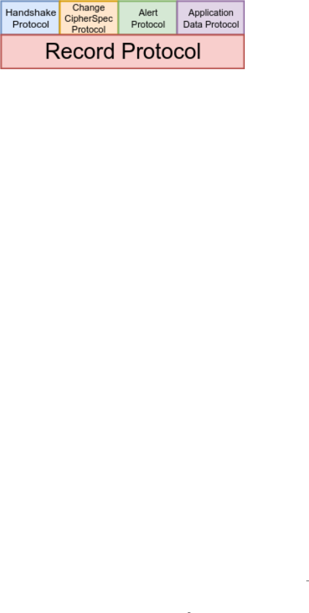
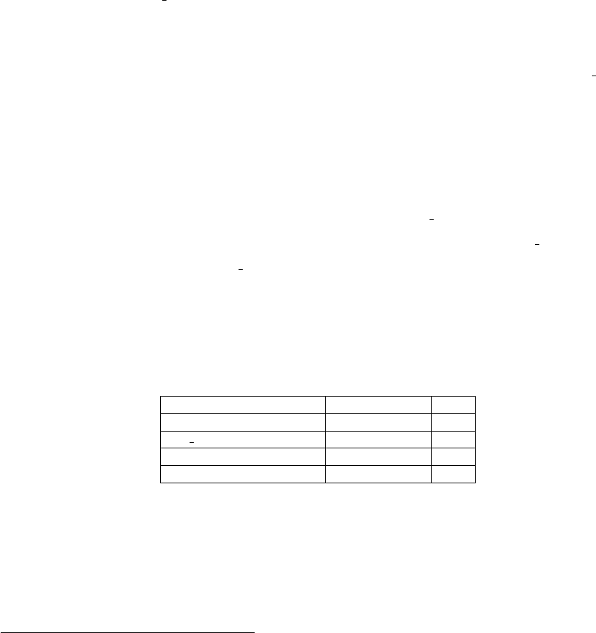
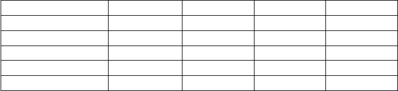
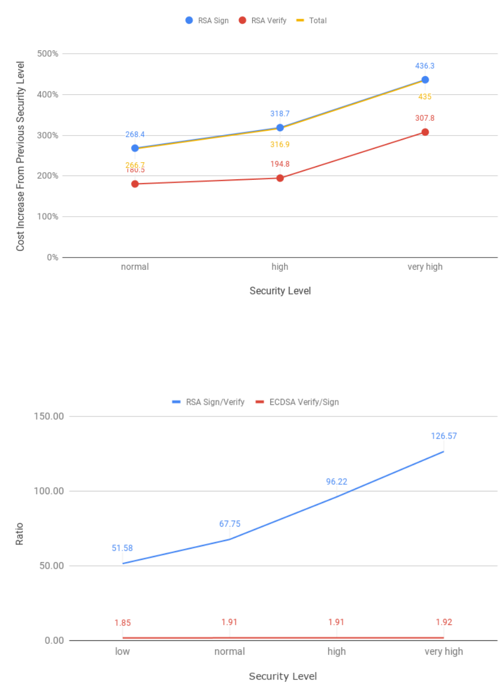
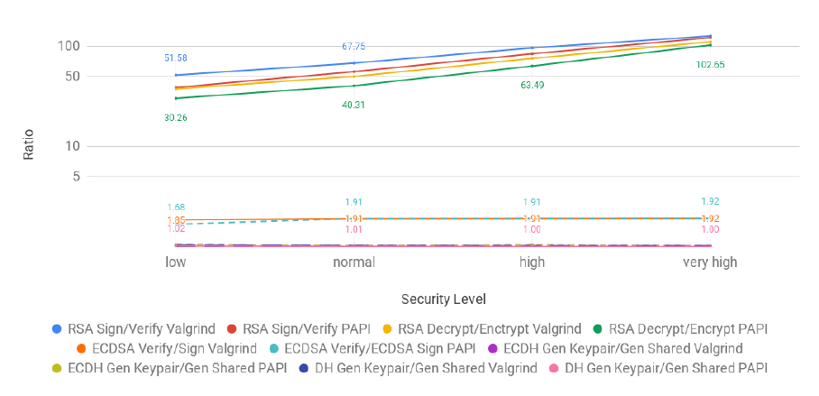

TLS for Internet of Things
Illya Gerasymchuk
Thesis to obtain the Master of Science Degree in
Information Systems and Computer Engineering
Supervisor(s): Prof. Aleksandar Ilic
Prof. Ricardo Jorge Fernandes Chaves
Examination Committee
Chairperson: Prof. Francisco João Duarte Cordeiro Correia dos Santos
Supervisor: Prof. Aleksandar Ilic
Member of the Committee: Prof. Miguel Ângelo Marques de Matos
June 2019
ii
Dedicated to my grandmother, Svitlana Sokolovska. Thank you for being beside me and supporting me
throughout my life.
iii
iv
Acknowledgments
I would like to thank my supervisors Ricardo Chaves and Aleksandar Ilic for their guidance and motivation
throughout this dissertation. I would also like to express my gratitude to my mother and grandmother
for their help and support during this work.
v
vi
Resumo
Transport Layer Security (TLS)
´
e um dos protocolos de seguranc¸a de comunicac¸
˜
ao mais usados no
mundo. O seu objectivo principal
´
e fornecer um canal de comunicac¸
˜
ao seguro com garantias de con-
fidencialidade, integridade, autenticidade e seguranc¸a futura perfeita. Cada um dos seus servic¸os de
seguranc¸a pode ser implementado por um dos v
´
arios algoritmos dispon
´
ıveis. TLS n
˜
ao foi desenhado
para o ambiente constrangido das Internet das Coisas (IdC), sendo demasiado exigente para tais dis-
positivos. Contudo,
´
e um protocolo male
´
avel e os seus servic¸os de seguranc¸a podem sem activados ou
desactivados por conex
˜
ao. A abdicac¸
˜
ao de um servic¸o de seguranc¸a ou uso de um algoritmo menos
exigente computacionalmente, reduz os recursos utilizados. As propriedades de seguranc¸a da conex
˜
ao
s
˜
ao definidas pela configurac¸
˜
ao TLS em uso. Algumas das configurac¸
˜
oes podem ser usadas em am-
biente das IdC. O trabalho existente foca-se no protocolo Datagram TLS e, ou est
´
a intimamente ligado
ao uso de um protocolo espec
´
ıfico ou requer o uso de uma entidade externa. Nesta tese
´
e feita uma
an
´
alise completa do protocolo TLS e dos seus servic¸os de seguranc¸a. Os resultados e diagramas aqui
apresentados podem ser usados pelos programadores e profissionais de seguranc¸a para seleccionar a
configurac¸
˜
ao de TLS mais leve, conforme os requisitos e limitac¸
˜
oes do seu ambiente. Nos avaliamos a
implementac¸
˜
ao do protocolo TLS pela biblioteca mbedTLS, usando duas m
´
etricas de custo: o n
´
umero
estimado de ciclos da CPU, obtidos com valgrind, e o tempo de execuc¸
˜
ao, obtido com PAPI. De seguida,
iremos comprovar que os valores estimados est
˜
ao perto dos reais.
Palavras-chave: TLS, DTLS, SSL, Internet das Coisas, Sistemas Embebidos
vii
viii
Abstract
Transport Layer Security (TLS) is one of the most used communication security protocols in the world.
Its main goal is to provide a secure communication channel with the security services of confidentiality,
integrity, authentication, and Perfect Forward Secrecy (PFS). Each security service can be implemented
by one of the multiple available algorithms. TLS was not designed for the constrained environment and
is too computationally demanding for many Internet Of Things (IoT) devices. However, it is a malleable
protocol and individual security services can be enabled and disabled on a per-connection basis. Fore-
going a security service or using a cheaper algorithm to implement it reduces the utilized computational
resources. The security properties of a connection are defined by a TLS configuration. Some of those
configurations can be used with the resource-constrained IoT devices. Existing work focuses on Data-
gram TLS (DTLS) and is either tied to a specific protocol or requires the usage of a third-party entity.
For this reason, it cannot be easily integrated with existing deployments. In this work, we performed
a thorough evaluation of the TLS protocol and its security services. We present a framework that can
be used by software developers and security professionals to select the cheapest TLS configuration for
their environment’s needs and limitations. We evaluate the TLS implementation of the mbedTLS library
using two cost metrics: the estimated number of CPU cycles, obtained with valgrind, and execution time,
obtained with PAPI. In the end, we will show that the estimated values are close to the real ones.
Keywords: TLS, DTLS, SSL, IoT, Embedded Systems
ix
x
Contents
Acknowledgments . . . . . . . . . . . . . . . . . . . . . . . . . . . . . . . . . . . . . . . . . . . v
Resumo . . . . . . . . . . . . . . . . . . . . . . . . . . . . . . . . . . . . . . . . . . . . . . . . . vii
Abstract . . . . . . . . . . . . . . . . . . . . . . . . . . . . . . . . . . . . . . . . . . . . . . . . . ix
List of Tables . . . . . . . . . . . . . . . . . . . . . . . . . . . . . . . . . . . . . . . . . . . . . . xiii
List of Figures . . . . . . . . . . . . . . . . . . . . . . . . . . . . . . . . . . . . . . . . . . . . . xv
1 Introduction 1
1.1 Motivation . . . . . . . . . . . . . . . . . . . . . . . . . . . . . . . . . . . . . . . . . . . . . 2
1.2 Objectives . . . . . . . . . . . . . . . . . . . . . . . . . . . . . . . . . . . . . . . . . . . . . 3
1.3 Contributions . . . . . . . . . . . . . . . . . . . . . . . . . . . . . . . . . . . . . . . . . . . 4
1.4 Results . . . . . . . . . . . . . . . . . . . . . . . . . . . . . . . . . . . . . . . . . . . . . . 5
1.5 Structure of The Document . . . . . . . . . . . . . . . . . . . . . . . . . . . . . . . . . . . 6
2 Background and Related Work 7
2.1 Cryptographic Algorithms . . . . . . . . . . . . . . . . . . . . . . . . . . . . . . . . . . . . 7
2.1.1 Symmetric vs Asymmetric Cryptography . . . . . . . . . . . . . . . . . . . . . . . . 7
2.1.2 Public Certificates and Certificate Chains . . . . . . . . . . . . . . . . . . . . . . . 8
2.1.3 Authenticated Encryption With Associated Data (AEAD) Ciphers . . . . . . . . . . 8
2.1.4 Elliptic Curve Cryptography (ECC) . . . . . . . . . . . . . . . . . . . . . . . . . . . 8
2.2 The TLS Protocol . . . . . . . . . . . . . . . . . . . . . . . . . . . . . . . . . . . . . . . . . 9
2.2.1 TLS (Sub)Protocols . . . . . . . . . . . . . . . . . . . . . . . . . . . . . . . . . . . 10
2.2.2 TLS 1.2 Handshake Protocol . . . . . . . . . . . . . . . . . . . . . . . . . . . . . . 12
2.2.3 TLS Record Processing . . . . . . . . . . . . . . . . . . . . . . . . . . . . . . . . . 15
2.2.4 TLS Keying Material . . . . . . . . . . . . . . . . . . . . . . . . . . . . . . . . . . . 16
2.2.5 TLS 1.2 Keying Material Generation . . . . . . . . . . . . . . . . . . . . . . . . . . 17
2.2.6 TLS 1.2 Key Exchange Methods . . . . . . . . . . . . . . . . . . . . . . . . . . . . 17
2.2.7 TLS Extensions . . . . . . . . . . . . . . . . . . . . . . . . . . . . . . . . . . . . . . 19
2.2.8 TLS 1.3 . . . . . . . . . . . . . . . . . . . . . . . . . . . . . . . . . . . . . . . . . . 19
2.2.9 Datagram TLS (DTLS) . . . . . . . . . . . . . . . . . . . . . . . . . . . . . . . . . . 20
2.3 Related Work . . . . . . . . . . . . . . . . . . . . . . . . . . . . . . . . . . . . . . . . . . . 21
xi
3 Results 31
3.1 Methodology . . . . . . . . . . . . . . . . . . . . . . . . . . . . . . . . . . . . . . . . . . . 31
3.1.1 Evaluated Metrics and Limitations . . . . . . . . . . . . . . . . . . . . . . . . . . . 32
3.1.2 Developed Tools . . . . . . . . . . . . . . . . . . . . . . . . . . . . . . . . . . . . . 35
3.1.3 Security Levels . . . . . . . . . . . . . . . . . . . . . . . . . . . . . . . . . . . . . . 36
3.2 Evaluation of The Costs Of The TLS Protocol . . . . . . . . . . . . . . . . . . . . . . . . . 37
3.2.1 TLS Security Services Cost Overview . . . . . . . . . . . . . . . . . . . . . . . . . 39
3.2.2 Authentication Cost Analysis . . . . . . . . . . . . . . . . . . . . . . . . . . . . . . 43
3.2.3 Perfect Forward Secrecy Cost Analysis . . . . . . . . . . . . . . . . . . . . . . . . 54
3.2.4 Handshake Cost Analysis . . . . . . . . . . . . . . . . . . . . . . . . . . . . . . . . 62
3.2.5 Confidentiality and Integrity Cost Analysis . . . . . . . . . . . . . . . . . . . . . . . 69
3.2.6 PAPI Time Cost Analysis and Comparison To Estimated CPU Cycles . . . . . . . 72
3.2.7 Discussion . . . . . . . . . . . . . . . . . . . . . . . . . . . . . . . . . . . . . . . . 75
4 Conclusions and Future Work 77
4.1 Conclusions . . . . . . . . . . . . . . . . . . . . . . . . . . . . . . . . . . . . . . . . . . . . 77
4.2 Future Work . . . . . . . . . . . . . . . . . . . . . . . . . . . . . . . . . . . . . . . . . . . . 78
Bibliography 79
A Appendix A 87
xii

List of Tables
2.1 Key exchange methods and security properties . . . . . . . . . . . . . . . . . . . . . . . . 18
2.2 A summary of the differences between ultra-lightweight and IoT crypto . . . . . . . . . . . 23
3.1 Local machine’s characteristics . . . . . . . . . . . . . . . . . . . . . . . . . . . . . . . . . 34
3.2 Comparable symmetric and asymmetric key sizes (in bits) . . . . . . . . . . . . . . . . . . 36
3.3 Security levels used in evaluation . . . . . . . . . . . . . . . . . . . . . . . . . . . . . . . . 36
3.4 Security levels configuration . . . . . . . . . . . . . . . . . . . . . . . . . . . . . . . . . . . 37
3.5 Average handshake cost for the client in millions CPU cycles . . . . . . . . . . . . . . . . 40
3.6 Average Handshake cost for the server in millions CPU cycles . . . . . . . . . . . . . . . 41
3.7 Cost of Pseudo-Random Function (PRF) and Finished message, in estimated number of
CPU cycles . . . . . . . . . . . . . . . . . . . . . . . . . . . . . . . . . . . . . . . . . . . . 44
3.8 Cost of using PKCS#1 V2.1 RSAES-PKCS1-v1 5 encryption and decryption schemes
with various security levels, in estimated number of CPU cycles . . . . . . . . . . . . . . . 53
3.9 Number of ciphersuites per key exchange method in mbedTLS 2.7.0 . . . . . . . . . . . . 62
3.10 Security services offered by each key exchange . . . . . . . . . . . . . . . . . . . . . . . 63
3.11 Additional costs of parsing the certificate, in estimated number of CPU cycles . . . . . . . 68
3.12 Amount of data in megabytes that that needs to be exchanged between the peers in order
for the costs of the Handshake equate the costs of Record phase for the client. . . . . . . 72
3.13 Amount of data in megabytes that that needs to be exchanged between the peers in order
for the costs of the Handshake equate the costs of Record phase for the server. . . . . . 72
A.1 RSA and ECDSA signature creation and verification costs in number of CPU cycles. Num-
bers in parenthesis is the standard deviation . . . . . . . . . . . . . . . . . . . . . . . . . . 87
A.2 RSA and ECDSA costs of signature creation + signature verification in number of CPU
cycles . . . . . . . . . . . . . . . . . . . . . . . . . . . . . . . . . . . . . . . . . . . . . . . 87
A.3 Absolute increase of RSA operation costs from previous security level in number of CPU
cycles . . . . . . . . . . . . . . . . . . . . . . . . . . . . . . . . . . . . . . . . . . . . . . . 87
A.4 Absolute increase of ECDSA operations cost from previous security level in number of
CPU cycles . . . . . . . . . . . . . . . . . . . . . . . . . . . . . . . . . . . . . . . . . . . . 88
A.5 Client authentication costs for all ciphersuites and security levels in number of CPU cycles 88
A.6 Server authentication costs for all ciphersuites and security levels in number of CPU cycles 88
xiii
A.7 ECDH and DH costs for all security levels in number of CPU cycles. Numbers in paren-
thesis are the standard deviation. . . . . . . . . . . . . . . . . . . . . . . . . . . . . . . . . 88
A.8 ECDH and DH costs of the sum of keypair and shared secret generation in number of
CPU cycles . . . . . . . . . . . . . . . . . . . . . . . . . . . . . . . . . . . . . . . . . . . . 89
A.9 Absolute increase of ECDH operation costs from previous security level in number of CPU
cycles . . . . . . . . . . . . . . . . . . . . . . . . . . . . . . . . . . . . . . . . . . . . . . . 89
A.10 Absolute increase of DH operation costs from previous security level in number of CPU
cycles . . . . . . . . . . . . . . . . . . . . . . . . . . . . . . . . . . . . . . . . . . . . . . . 89
A.11 PFS and ECDH key exchange cost for the client in number of CPU cycles . . . . . . . . . 89
A.12 PFS and ECDH key exchange cost for the server in number of CPU cycles . . . . . . . . 90
A.13 Handshake costs for the client in number of CPU cycles. Numbers in parenthesis are the
standard deviation . . . . . . . . . . . . . . . . . . . . . . . . . . . . . . . . . . . . . . . . 90
A.14 Handshake costs for the server in number of CPU cycles. Numbers in parenthesis are
the standard deviation . . . . . . . . . . . . . . . . . . . . . . . . . . . . . . . . . . . . . . 90
A.15 RSA and ECDSA signature creation and verification costs in microseconds. Numbers in
parenthesis is the standard deviation . . . . . . . . . . . . . . . . . . . . . . . . . . . . . . 90
A.16 Client authentication costs for all ciphersuites and security levels in microseconds . . . . 91
A.17 Server authentication costs for all ciphersuites and security levels in microseconds . . . . 91
A.18 ECDH and DH costs for all security levels in microseconds. Numbers in parenthesis are
the standard deviation . . . . . . . . . . . . . . . . . . . . . . . . . . . . . . . . . . . . . . 91
A.19 Handshake costs for the client in microseconds. Numbers in parenthesis are the standard
deviation . . . . . . . . . . . . . . . . . . . . . . . . . . . . . . . . . . . . . . . . . . . . . . 92
A.20 Handshake costs for the server in microseconds. Numbers in parenthesis are the stan-
dard deviation . . . . . . . . . . . . . . . . . . . . . . . . . . . . . . . . . . . . . . . . . . . 92
xiv
List of Figures
2.1 TLS Record header . . . . . . . . . . . . . . . . . . . . . . . . . . . . . . . . . . . . . . . 11
2.2 TLS (Sub)protocols and Layers . . . . . . . . . . . . . . . . . . . . . . . . . . . . . . . . . 12
2.3 TLS 1.2 message flow for a full handshake . . . . . . . . . . . . . . . . . . . . . . . . . . . 13
2.4 TLS 1.2 Record Processing . . . . . . . . . . . . . . . . . . . . . . . . . . . . . . . . . . . 16
2.5 DTLS handshake with HelloVerifyRequest containing the cookie . . . . . . . . . . . . . . 21
2.6 IPv6 Next Header Compression . . . . . . . . . . . . . . . . . . . . . . . . . . . . . . . . . 24
2.7 LOWPAN NHC RHS structure . . . . . . . . . . . . . . . . . . . . . . . . . . . . . . . . . 24
3.1 How Valgrind works . . . . . . . . . . . . . . . . . . . . . . . . . . . . . . . . . . . . . . . 33
3.2 Client handshake cost in number of CPU cycles for all of the 161 ciphersuites . . . . . . . 39
3.3 Server handshake cost in number of CPU cycles for all of the 161 ciphersuites . . . . . . 40
3.4 RSA and ECDSA operations cost for normal security level . . . . . . . . . . . . . . . . . . 45
3.5 RSA operations costs for all security levels in estimated number of CPU cycles (logarith-
mic scale) . . . . . . . . . . . . . . . . . . . . . . . . . . . . . . . . . . . . . . . . . . . . . 46
3.6 Relative increase of RSA operations cost from previous security level . . . . . . . . . . . 47
3.7 Ratio between the RSA signature creation and verification, and ECDSA signature verifi-
cation and creation . . . . . . . . . . . . . . . . . . . . . . . . . . . . . . . . . . . . . . . . 47
3.8 Relative increase of ECDSA operations cost from previous security level . . . . . . . . . . 49
3.9 ECDSA costs for all security levels in estimated number of CPU cycles . . . . . . . . . . . 49
3.10 RSA and ECDSA cost comparison (logarithmic scale) . . . . . . . . . . . . . . . . . . . . 50
3.11 Client authentication cost (logarithmic scale) . . . . . . . . . . . . . . . . . . . . . . . . . 51
3.12 Server authentication cost (logarithmic scale) . . . . . . . . . . . . . . . . . . . . . . . . . 52
3.13 ECDH and DH operations cost for normal security level . . . . . . . . . . . . . . . . . . . 55
3.14 ECDH operations costs for all security levels . . . . . . . . . . . . . . . . . . . . . . . . . 57
3.15 Relative increase of ECDH and DH operation costs from previous security level . . . . . . 58
3.16 DH operations costs for all security levels (logarithmic scale) . . . . . . . . . . . . . . . . 59
3.17 ECDH and DH cost comparison (logarithmic scale) . . . . . . . . . . . . . . . . . . . . . . 60
3.18 PFS and ECDH key exchange costs (logarithmic scale) . . . . . . . . . . . . . . . . . . . 61
3.19 Client handshake costs for all security levels . . . . . . . . . . . . . . . . . . . . . . . . . . 64
3.20 Server handshake costs for all security levels . . . . . . . . . . . . . . . . . . . . . . . . . 64
3.21 low security level decision tree for the cheapest key exchange . . . . . . . . . . . . . . . 66
xv
3.22 normal security level decision tree for the cheapest key exchange . . . . . . . . . . . . . 66
3.23 high security level decision tree for the cheapest key exchange . . . . . . . . . . . . . . . 67
3.24 very high security level decision tree for the cheapest key exchange . . . . . . . . . . . . 67
3.25 Confidentiality and integrity cost with different algorithms in estimated number of CPU
cycles . . . . . . . . . . . . . . . . . . . . . . . . . . . . . . . . . . . . . . . . . . . . . . . 70
3.26 Hashing operation costs in estimated number of CPU cycles . . . . . . . . . . . . . . . . 70
3.27 Client handshake cost in microseconds for all security levels (logarithmic scale) . . . . . . 73
3.28 Server handshake cost in microseconds for all security levels (logarithmic scale) . . . . . 73
3.29 Ratio of time taken between a set of related operations for Performance Apppicaiton Pro-
gramming Interface (PAPI) and valgrind/callgrind (logarithmic scale) . . . . . . . . . . . . 74
A.1 Handshake cost for the client in estimated number of CPU cycles (logarithmic scale). This
representation of the Handshake costs assists in visual comparison between the results
obtained with PAPI and valgrind. . . . . . . . . . . . . . . . . . . . . . . . . . . . . . . . . 93
A.2 Handshake cost for the client in estimated number of CPU cycles (logarithmic scale). This
representation of the Handshake costs assists in visual comparison between the results
obtained with PAPI and valgrind. . . . . . . . . . . . . . . . . . . . . . . . . . . . . . . . . 93
A.3 Authentication cost for the client in microseconds (logarithmic scale) . . . . . . . . . . . . 94
A.4 Authentication cost for the server in microseconds (logarithmic scale) . . . . . . . . . . . 94
A.5 ECDSA signature creation and verification costs in microseconds . . . . . . . . . . . . . . 95
A.6 RSA signature creation and verification costs in microseconds (logarithmic scale) . . . . . 95
A.7 RSA encryption and decryption costs in microseconds (logarithmic scale) . . . . . . . . . 96
A.8 ECDH keypair and shared secret generation costs in microseconds (logarithmic scale) . . 96
A.9 DH keypair and shared secret generation costs in microseconds (logarithmic scale) . . . 97
xvi
Chapter 1
Introduction
In recent years there has been a sharp increase in the number of IoT devices and this trend is expected
to continue[1]. The IoT is a network of interconnected devices, which exchange data with one another
over the internet. In fact, it can be any object that has an assigned IP address and is provided with
the ability to transfer data over a network. While there are many types of IoT devices, all of them are
restricted: they have limited memory, processing power and available energy. Examples of IoT devices
include temperature sensors, smart light bulbs and physical activity trackers. Even a salt shaker[2] can
now be part of the global network.
The IoT technology provides many benefits, from personal comfort to transforming entire industries,
mainly due to increased connectivity and new sources for data analysis. The technological development,
however, tends to focus on innovative design rather than on security. IoT devices frequently connect to
networks using inadequate security and are hard to update when vulnerabilities are found.
This lack of security in the IoT ecosystem has been exploited by the the Mirai botnet[3] when it
overwhelmed several high-profile targets with massive Distributed Denial-Of-Service (DDoS) attacks.
This is the most devastating attack involving IoT devices done to date. However, the Reaper botnet[4]
could be even worse if it is ever put to malicious use. Similar attacks will inadvertently come in the future.
In the process of the work on this dissertation, we have made several contributions to the TLS 1.3
specification, and were formally recognized as contributors[5]. The name of the author of this disserta-
tion can be found in the document specifying TLS 1.3[6]. Although to the lesser extent, we have also
contributed to DTLS 1.3 specification[7]. We have found a security vulnerability and a nonconformity
to the standard in the TLS implementation of the mbedTLS library. We reported it and it has been
assigned a Common Vulnerabilities and Exposures (CVE) with the id CVE-2018-1000520[8]. It is a
vulnerability in the authentication part of the TLS protocol, where certificates signed with an incorrect
algorithm were accepted in some cases. More specifically, ECDH(E)-RSA ciphersuites allowed Ellip-
tic Curve Digital Signature Algorithm (ECDSA)-signed certificates, when only Rivest-Shamir-Adleman
(RSA)-signed ones should have been. We also found a bug in mbedTLS’s test suite related to the use
of deprecated SHA-1-signed certificates and submitted a code fix to it[9][10]. In the process of our work,
we have developed an extensive set of tooling which can be used to further study the costs of TLS, by
1
allowing to automate metric collection and analysis on different hardware and environments.
1.1 Motivation
While inter-device communication has numerous benefits, it is important to ensure the security of that
communication. For example, when you log in to your online banking account, you do not want others
to be able to see your password, as this may lead to the compromise of your account. Having your
account compromised means that a malicious entity might take a hold of your money. Similarly, when
you are transferring funds via online banking, you want the contents of that operation to be invisible to an
observer, for privacy reasons. It is also desirable that no party is able to tamper with the data en transit,
as it may lead to undesired consequences, such as the transfer of a larger amount than intended. Proper
communication security allows those goals to be achieved.
TLS is one of the most used protocols for communication security. It powers numerous technologies,
such as Hypertext Transfer Protocol Secure (HTTPS). TLS offers the security services of authentication,
confidentiality, privacy, integrity, replay protection and perfect forward secrecy. It is not a requirement to
use all of those services for every TLS connection. The protocol is similar to a framework, in the sense
that you can enable individual security services on a per-connection basis. For example, when you are
downloading software updates, while data confidentiality is probably not a concern, data authenticity
and integrity, are. In TLS, it is possible for a connection to only offer authenticity and integrity, without
offering confidentiality. Foregoing unnecessary services will lead to a smaller resource usage, which in
turn leads to smaller execution time and power usage. This is especially important in the context of IoT,
due to the constrained nature of the devices.
The existing work does not explore the computational costs of the security services available in TLS.
Examples of such costs are the number of CPU cycles executed, time taken and power consumed. Thus,
developers wishing to deploy the TLS protocol in constrained environments do not have a resource that
would help them in choosing a TLS configuration appropriate to the environment’s needs and limitations.
TLS is designed to run on top of a reliable, connection-oriented protocol, such as TCP. DTLS is the
version of TLS that runs on top of an unreliable transport protocol, such as UDP. Most IoT devices have
very limited processing power, storage and energy. Moreover, the performance of TCP is known to be
inefficient in wireless networks, due to its congestion control algorithm. This situation is worsened with
the use of low-power radios and lossy links found in sensor networks. Therefore, in many cases the
use of TCP with IoT is not the best option. For this reason, DTLS, which runs on top of UDP, is used
more frequently in such devices. While the work of this dissertation will be focused on TLS, the majority
of it can also be applied to DTLS. This is a consequence of DTLS being just an adaption of TLS over
unreliable transport protocols, without changes to the core protocol.
There are numerous IoT devices, each one with different hardware capabilities and security require-
ments. For example, some IoT devices have the resources to use public key cryptography, while for
others symmetric cryptography is the only option. In some cases, the communicating devices require
data authenticity, confidentiality and integrity (e.g. when logging in into a device), while in others data
2
authenticity and integrity is enough (e.g. when transferring updates).
TLS was not designed for constrained environment, such as those in IoT. Despite that, it is a mal-
leable protocol and can be configured to one’s needs. In essence, it is a combination of various security
algorithms that together form a protocol for communication security. If configured properly, it is possible
to use it in the context of IoT.
The majority of existing work on (D)TLS optimization proposes a solution that is either tied to a
specific protocol, such as Constrained Application Protocol (CoAP), or requires an introduction of a
third-party entity, such as the trust anchor in the case of the S3K system[11] or even both. This has two
main issues. First, a protocol-specific solution cannot be easily used in an environment where (D)TLS
is not used with that protocol. Second, the requirement of a third-party introduces additional cost and
complexity, which will be a big resistance factor in adopting the technology. This is especially true for
developers working on personal projects or projects for small businesses, leaving the communications
insecure in the worse case scenario. Therefore a solution that is protocol independent and fully compat-
ible with the (D)TLS standard and existing infrastructure is desired.
Another area that the existing literature fails to address is that it almost exclusively focuses on DTLS
optimization and not all of it can be applied to TLS. Herein we want to further explore TLS optimization.
There is clearly a need for that, especially with CoAP over TCP and TLS standard[12] being currently
developed. The aforementioned standard does not explore any TLS optimizations, and since any IoT
device using it in the future would benefit from them, this is an important area to explore.
1.2 Objectives
(D)TLS is a complex protocol with numerous possible configurations. Each configuration provides differ-
ent set security services and a different security level. This has a direct impact on the resource usage.
Thus, the cost of a (D)TLS connection can be lowered, by using an appropriate configuration. Typi-
cally, this involves making security/cost trade-offs. Optimizing the connection cost by selecting one of
the numerous configurations available in (D)TLS meets our goals of being protocol independent, fully
compatible with existing infrastructure and targeting TLS optimization specifically.
The objective of this work is to provide the means of assisting application developers who wish to
include secure communications in their applications to make security/resource usage trade-offs, accord-
ing to the environment’s needs and limitations. We aim to provide a general overview of of the costs of
the TLS protocol as a whole and of its individual parts. This is will allow to answer questions such as
”How much will we save if we use algorithm X instead of Y for authentication?”. Thus, performing eval-
uations on specific IoT hardware or analyzing hardware-specific optimizations is outside of the scope of
this paper.
In order to achieve our goals, the cost of each individual security service will be evaluated. With this
information, the programer will be able to choose a configuration that meets his security requirements
and device constraints. If the limitations of the device’s hardware do not allow to meet the requirements,
the programer may decide on an alternative configuration, possibly with a loss of some security services
3
and a lower security level, or forgo using (D)TLS altogether. Thus, this work is targeted towards de-
velopers and InfoSec professionals who wish to add communication security to applications in the IoT
environment.
1.3 Contributions
In our work, we performed a thorough cost evaluation of the TLS 1.2 implementation in mbedTLS 2.7.0.
mbedTLS is among the most popular TLS implementation libraries for embedded systems. We evalu-
ated the performance cost in terms of the estimated number of CPU cycles and time of execution. The
time values were read directly from the processor’s registers. We evaluated every single one of the 161
TLS configurations available in mbedTLS 2.7.0, at 4 different security levels. Each security level differs
one from another by the size of the asymmetric keys that were used.
A TLS connection consists of two main parts: first, the peers establish a secure communication
channel in the Handshake phase, followed by the data exchange using that channel in the Record
phase. We focused on the Handshake part of the protocol for two main reasons. First, it is the part with
the most variability in terms of cost, due to the complex combinations of different possible algorithms.
Second, it is the part which has been the least studied in the existing work. The Record phase mainly
consists in the use symmetric encryption algorithms and hash functions. Their costs has already been
thoroughly studied by existing work.
We performed evaluations at the high, the middle and the low levels. At the high level, we analyzed
and compared the cost of the Handshake for each one of the TLS configurations as a whole. This
allowed us to identify groups of configurations with similar costs. Those costs were different for the client
and the server. For this reason, the answer to the question of which configuration is the least costly one
for a given set of security service requirements is not straightforward. It depends not only on whether
our goal is to minimize the cost for the client, the server or both, but also on the security level in use.
At the middle level, we analyzed the cost of each one of the security services offered by TLS: con-
fidentiality, integrity, PFS and authentication. We explored how a different choice of algorithms for a
security service affected its costs. Here, once again, the choice of the least costly algorithm depends
not only on whether the goal is to optimize the client, the server or the cumulative cost, but also on the
security level used.
Finally, at the low level, we analyzed and compared the costs of each one of the individual algorithms
used to provide the security services. This allowed us to further understand the differences in costs
observed at the high and middle levels. For the authentication security service, we profiled the costs of
RSA and ECDSA. Our analysis showed that RSA is faster at public key operations and ECDSA at private
key operations. Moreover, with the increase of the security level, the costs of RSA increase exponentially,
while the costs of ECDSA logarithmically. For the PFS security service, we profiled the costs of Diffie-
Hellman (DH) and Elliptic Curve Diffie-Hellman (ECDH). As the security level increased, the costs of DH
rose exponentially and the costs of ECDH logarithmically. In that sense, DH is similar to RSA and ECDH
to ECDSA. This is a result of them sharing the same underlying mathematical operations: modular
4
exponentiation for the first group and multiplication of a scalar by a point on the elliptic curve in the
second group. Finally, for the confidentiality and integrity security services, we profiled each one of the
26 combinations of a symmetric encryption algorithm and hash function available in mbedTLS 2.7.0.
Although our focus was on the Handshake, we also profiled the costs of the symmetric encryption
algorithms and hash functions. While the cost of the Handshake might dominate when small amounts
of data are transmitted, the natural question that arises is at how much transferred data the cost of the
Handshake becomes negligible. In order to answer to this question, we measured how much data needs
to be exchanged between the peers in order for the costs of the Record phase to equate the costs of the
Handshake phase. Our conclusions were that, for the typical configurations used on the internet, that
number is between 560KB and 1.62MB for the client and between 830KB and 1.27MB for the server.
The work on the dissertation started before TLS protocol’s version 1.3 specification was finished and
there were no embedded device libraries which implemented it. For this reason we did not evaluate TLS
1.3. Despite that, the results obtained in this work apply to it as well, since the core functionality of the
security services remained mostly unchanged. In the same manner, the information presented here is
also relevant for DTLS versions 1.2 and the upcoming version 1.3.
1.4 Results
In summary, the results of this work are enumerated as follows:
1. Evaluation of the costs of the security services of confidentiality, integrity, PFS and authentication
in TLS. This evaluation is done in terms of execution time and estimated number of CPU cycles
2. Evaluation and comparison of the costs of various alternative algorithms which can be used to
provide each one of the security services
3. Evaluation and comparison the costs of all of the possible TLS configurations present in mbedTLS
2.7.0
4. Contributions to the TLS protocol’s version 1.3 specification, for which we were formally recognized,
by having our name added to the document specifying TLS 1.3[6]
5. Contributions to the DTLS protocol’s version 1.3 specification[7]
6. Finding and reporting a security vulnerability in the peer authentication phase of the protocol and
a deviation from the TLS specification in mbedTLS 2.7.0, which was assigned a CVE with id CVE-
2018-1000520[8]
7. Finding and reporting a bug present in mbedTLS 2.7.0, as well as submitting a patch to fix to it
[9][10]
5
1.5 Structure of The Document
The remainder of this document is organized as follows. Chapter 2 describes the most relevant crypto-
graphic concepts and algorithms that will be used throughout this work, provides an overview of the TLS
and DTLS protocols and presents a summary of the related work. Chapter 3 focuses on the analysis
of the results obtained experimentally, as well as explains how they were obtained. Finally, Chapter 4
concludes this document by summarizing the main achievements and future work.
6
Chapter 2
Background and Related Work
This chapter will begin with a summary of the most relevant theoretical background. This is done is
Section 2.1. Section 2.2 covers the details of the TLS protocol. After that, in Section 2.3 we describe
the current state of art in the topic of this work.
2.1 Cryptographic Algorithms
TLS is a complex protocol that relies on various cryptographic algorithms to provide security. The most
relevant ones will be described here.
In a typical scenario, TLS uses asymmetrical cryptography for peer authentication and symmetrical
cryptography for bulk data encryption and integrity protection, for this reason this topic will be covered in
Section 2.1.1. Section 2.1.2 covers the most common way of peer authentication: public key certificates.
Authenticated Encryption With Additional Data (AEAD) ciphers offer various advantages in the context of
IoT, particularly less computational and spacial overhead. Furthermore, they are the only type of ciphers
that can be used in TLS 1.3. For those reasons, they are covered in Section 2.1.3. When compared to
other public key cryptography approaches, ECC offers shorter keys, lower processing requirements and
lower memory usage for equivalent security strength, being heavily used in TLS. An overview of ECC in
presented in Section 2.1.4.
2.1.1 Symmetric vs Asymmetric Cryptography
Asymmetrical cryptography is more expensive than symmetrical cryptography in terms of performance.
There are two main reasons for this. First, larger key sizes are required for an asymmetrical cryptography
system to achieve the same level of security as in a symmetrical cryptography system. Second, CPUs
are slower at performing the underlying mathematical operations involved in asymmetrical cryptography,
namely exponentiation requires O(loge) multiplications for an exponent e. The 2016 NIST report [13]
suggests that an asymmetrical cryptography algorithm would need to use a secret key with size of
15360 bits to have equivalent security to a 256-bit secret key for a symmetrical cryptography algorithm.
This situation is ameliorated by ECC, which requires keys of 512 bits, but it is still slower than using
7
symmetrical cryptography. The 2017 BSI report [14] (from the German federal office for information
security) suggests similar numbers.
Another argument for avoiding the use of asymmetrical cryptography algorithms as much as possible,
is that they require additional storage space. This can be a problem for many IoT devices, like class
1 devices according to the terminology of constrained-code networks[15] which have approximately
10KB of RAM and 100KB of persistent memory. We measured and compared the resulting size of the
mbedTLS 2.7.0 library[16] binary when it was compiled with and without the RSA module (located in the
rsa.c file). The conclusion is that that using the rsa.c module adds an overhead of about 32KB.
2.1.2 Public Certificates and Certificate Chains
A public key certificate, also known as a digital certificate, is an electronic document used to prove the
ownership of a public key. This allows other parties to rely upon assertions made by the private key that
corresponds to the public key that is certified. In the context of (D)TLS, certificates serve as a guarantee
that the communication is done with the claimed entity and not someone impersonating it.
A Certification Authority (CA) is an entity that issues digital certificates. There are two types of CAs:
the root CAs and the intermediate CAs. An intermediate CA is provided with a certificate with signing
capabilities signed by one of the root CAs. A certificate chain is a list of certificates from the root
certificate to the end-user certificate, including any intermediate certificates along the way. In order for a
certificate to be trusted by a device, it must be directly or indirectly issued by a CA trusted by the device.
In (D)TLS, the certificates are in the X.509 format, defined in RFC 5280[17].
2.1.3 AEAD Ciphers
Authenticated Encryption (AE) and AEAD are forms of encryption which simultaneously provide confi-
dentiality, integrity and authenticity guarantees on the data. An AE cipher takes as input a key, a nonce
and a plaintext and outputs the pair (ciphertext, MAC), if it is encrypting and does the inverse process,
while also performing the Message Authentication Code (MAC) check if it is decrypting.
AEAD is nothing more than a variant of AE, which comes with an extra input parameter that is
additional data, that is only authenticated, but not encrypted. Some AEAD ciphers have shorter
authentication tags (i.e. shorter MACs), which makes then more suitable for low-bandwidth networks,
since the messages to be sent are smaller in size.
2.1.4 ECC
Public key cryptography is based on the use of one-way math functions. Such functions make it easy to
compute the answer given an input, but hard to compute the input given the answer. For example, RSA
uses factoring as the one one way function: it is easy to multiply large numbers, but it is hard to factor
them.
8
ECC is based on elliptic curves, which are set of points (x, y) that are solutions to the equation
y
2
= x
3
+ ax + b, where 4a
3
+ 27b
2
6= 0. Depending on the value of a and b, elliptic curves assume
different shapes on the plane.
The security of ECC is based on the elliptic curve discrete logarithm problem. It states that scalar
multiplication is a one way function. To exemplify, given a curve E(Z/pZ) and points Q and P on that
curve Q, P ∈ E(Z/pZ), where Q is a multiple of P , the elliptic curve discrete logarithm problem states
that finding the integer k, such that Q = kP is a very hard problem.
2.2 The TLS Protocol
TLS is a client-server protocol that runs on top a connection-oriented and reliable transport proto-
col, such as TCP. Its main goal is to provide confidentiality and integrity between the two communi-
cating peers. Confidentiality implies that a third party will not be able to read the data, while integrity
means that a third party will not be able to alter the data.
In the TCP/IP Protocol Stack, TLS is placed between the Transport and Application layers. It is de-
signed to simplify the establishment and use of secure communications from the application developer’s
standpoint. The developer’s task is reduced to creating a ”secure” connection (i.e. socket), instead of a
”normal” one.
A secure communication established using TLS has two phases. In the first phase, the communicat-
ing peers authenticate one to another and negotiate the parameters, such as the secret keys and the
encryption algorithm. In the second phase, they exchange cryptographically protected data under the
previously negotiated parameters. The first phase is done under the Handshake Protocol and the sec-
ond under the Record Protocol. In order to achieve its goals, during the Handshake Protocol the client
and the server exchange various messages. This message flow is depicted in Figure 2.3 and described
in more detail in Section 2.2.2.
TLS provides the following security services:
• authentication - both, peer entity and data origin (or integrity) authentication.
peer entity authentication - a peer has a guarantee that it is talking to certain entity, for
example, www.google.com. This is achieved thought the use of asymmetrical cryptography, also
known as Public Key Cryptography (PKC), (e.g. RSA and DSA) or symmetric key cryptography,
using a Pre-Shared Key (PSK).
• confidentiality - the data transmitted between the communicating entities (the client and the
server) is encrypted. Symmetric cryptography is used for data encryption (e.g., AES).
• integrity (also called data origin authentication) - a peer can be sure that the data was not
modified or forged, i.e., there is a guarantee that the received data is coming from the expected
entity. For example, a peer can be sure that the index.html file that was sent to when it connected
to www.google.com did, in fact, come from www.google.com and it was not tampered with by an
9
attacker (data integrity). This is achieved either through the use of a keyed MAC or an AEAD
cipher.
• replay protection (also known as freshness) - a peer can be sure that a message has not been
replayed. This is achieved through the use of sequence numbers. Each TLS record has a different
sequence number, which is incremented. If a non-AEAD cipher is used, the sequence number is
a direct input of the MAC function. If an AEAD cipher is used, a nonce derived from the sequence
number is used as input to that cipher.
Despite using PKC, TLS does not provide non-repudiation services: neither non-repudiation with
proof of origin, which addresses the peer denying the sending of a message, nor non-repudiation with
proof of delivery, which addresses the peer denying the receipt of a message. This is due to the fact
that instead of using digital signatures, either a keyed MAC or an AEAD cipher is used, both of which
require a secret to be shared between the peers.
It is not required to use all of the tree security services every situation. In this sense, TLS is like a
framework that allows to select which security services should be used for a communication session.
As an example, certificate validation might be skipped, which means that the authentication guarantee
is not provided. There are some differences regarding this claim between TLS 1.2[18] and TLS 1.3. For
example, while in the first there is a null cipher (no authentication, no confidentiality, no integrity), in the
latter this is not true, since it deprecated all non-AEAD ciphers in favor of AEAD ones.
The terms Secure Sockets Layer (SSL) and TLS are often used interchangeably, but one is a prede-
cessor of another - SSL 3.0[19] served as the basis for TLS 1.0[19].
Section 2.2.1 will begin with a brief overview of the various sub-protocols that compose TLS. The
TLS Record Layer will be described in sufficient detail for the TLS Handshake Protocol description that
follows in Section 2.2.2. The way each record is processed when sending and receiving data is covered
in Section 2.2.3. The symmetric keys involved in cryptographic operations that provide confidentiality
and security are described in Section 2.2.4. Section 2.2.5 explains how those keys are generated in
TLS 1.2. There are various methods that the client and the server can use to exchange keys, those will
be covered in Section 2.2.6. The TLS Extension mechanism will be covered in Section 2.2.7. There are
various differences from TLS 1.2 to 1.3 and those that were not covered in the previous sections will be
in Section 2.2.8. This section ends with an outline of the main differences from DTLS to TLS in Section
2.2.9.
2.2.1 TLS (Sub)Protocols
TLS is composed of several protocols, which are illustrated in Figure 2.2 and briefly described below:
• TLS Record Protocol - the lowest layer in TLS. It takes messages to be transmitted, fragments
the data into manageable blocks, optionally compresses them, encrypts them and transmits the
result. When the data is received, the reverse process is done. The TLS Record Protocol is located
directly on top of TCP/IP and it serves as an encapsulation for the remaining sub-protocols (4
10
Figure 2.1: TLS Record header
in case of TLS 1.2 and 3 in case of TLS 1.3). To the Record Protocol, the remaining sub-protocols
are what TCP/IP is to HTTP. A TLS Record is comprised of 4 fields, with the first 3 comprising
the TLS Record header. The first field is a 1-byte record type specifying the type of record that is
encapsulated (ex: value 0x16 for the handshake protocol). The second is a 2-byte TLS version
field. The third is a 2-byte length field specifying the length of the data in the record, excluding the
header itself (this means that TLS has a maximum record size of 16384 bytes). The fourth is a
fragment field, containing length bytes of data that is transparent to the Record layer and should
be dealt by a higher-level protocol. That higher-level protocol is specified by the type field. This is
illustrated in Figure 2.1.
• TLS Handshake Protocol - the core protocol of TLS. It allows the communicating peers to au-
thenticate one to another and to negotiate the connection state. In TLS 1.2 a cipher suite and a
compression method are negotiated. In TLS 1.3, a cipher suite and a key exchange algorithm
are negotiated. The agreed upon cipher suite is used to provide the previously described security
services. In TLS 1.2, a cipher suite consists of a cipher spec, a key exchange algorithm and
a PRF, which is used for key generation. In TLS 1.2, cipher spec defines the message encryp-
tion algorithm and the message authentication algorithm. In TLS 1.3, the term cipher spec is no
longer present, since the ChangeCipherSpec protocol has been removed. The concept of cipher
suite has been updated to define the pair consisting of an AEAD algorithm and a hash function to
be used with HMAC-based Extract-and-Expand Key Derivation Function (HKDF). In TLS 1.3 the
key exchange algorithm is negotiated via extensions[6].
• TLS Alert Protocol - allows the communicating peers to signal potential problems.
• TLS Application Data Protocol - used to transmit application data messages securely using the
security parameters negotiated during the Handshake Protocol. The messages are treated as
transparent data to the record layer.
• TLS Change Cipher Spec Protocol (removed in TLS 1.3) - used to activate the initial cipher
spec or change it during the connection.
11

Figure 2.2: TLS (Sub)protocols and Layers
2.2.2 TLS 1.2 Handshake Protocol
The Handshake Protocol is responsible for negotiating a session, which will then be used in a connec-
tion. There is a difference between a TLS session and a TLS connection:
• TLS session - association between two communication peers that is created by the TLS Hand-
shake Protocol, which defines a set of negotiated parameters (cryptographic and others, such as
the compression algorithm, depending on the TLS version) that are used by the TLS connections
associated with that session. A single TLS session can be shared among multiple TLS con-
nections and its main purpose is to avoid the expensive negotiation of new parameters for each
TLS connection. For example, let us say that a Hypertext Markup Language (HTML) page is
being downloaded over the HTTPS and that page references some images from that same server
using HTTPS links. Instead of the web browser negotiating a new TLS session for every single
image again, it can re-use the the one it has established to download the HTML page, saving time
and computational resources. Session resumption can be done using various approaches, such
as session identifiers, described throughout Section 7.4 of RFC 5246[18] and session tickets,
defined in RFC 5077[20].
• TLS connection - used to actually transmit the cryptographically protected data. For the data to
be cryptographically protected, some parameters, such as the secret keys used to encrypt and
authenticate the transmitted data need to be established; this is done when a TLS session is
created, during the TLS Handshake Protocol.
In the handshake phase the client and the server agree on which version of the TLS protocol to use,
authenticate one to another and negotiate session state items like the cipher suite and the compression
method. Figure 2.3 shows the message flow for the full TLS 1.2 handshake. * indicates situation-
dependent messages that are not always sent. ChangeCipherSpec is a separate protocol, rather than
a message type.
As already mentioned, every TLS handshake message is encapsulated within a TLS record. The
actual handshake message is contained within the fragment of a TLS record. The record type for a
handshake message is 0x16. The handshake message has the following structure: a 1-byte msg type
field (specifies the Handshake message type), a 2-byte length field (specifies the length of the body)
and a body field, which contains a structure depending on the msg type (similar to fragment field in a
TLS record).
12
Figure 2.3: TLS 1.2 message flow for a full handshake
A typical handshake message flow will be described next, with only the most important fields of each
message mentioned.
The TLS handshake starts with the client sending a ClientHello, containing random, cipher suites
and compression methods, among other fields.
cipher suites contains a list of cipher suites and compression methods contains a list of compression
methods that the client supports, ordered by preference, with the most preferred one appearing first.
The TLS record contains a 2-byte version field which indicates the highest version supported by the
client.
The server responds to the ClientHello with a ServeHello. This message is similar, but contains the
chosen cipher suite and compression method from the list sent by the client. Just like in the client’s
case, a random is present. The version field in the TLS record indicates the TLS version chosen by the
server, which will be the one used for that connection.
TLS requires cryptographically secure pseudorandom numbers to be generated by both of the parties
independently. Those random numbers (or nonces) are essential for freshness (protection against replay
attacks) and session uniqueness. To provide those properties, both of the random values are required.
Those two random values are inputs to the PRF when the master secret is generated, meaning that
a new keying material will be obtained with every new session. If the output of the pseudorandom
number generator can be predicted by the attacker, he can predict the keying material, as described in
”A Systematic Analysis of the Juniper Dual EC Incident”[21]. The 32-byte random value is composed by
concatenating the 4-byte GMT UNIX time with 28 cryptographically random bytes. Note that, in TLS 1.3,
the random number structure has the same length, but is generated in a different manner: the client’s
32 bytes are all random, while the server’s last 8 bytes are fixed when negotiating TLS 1.2 or 1.3.
13
Next, the server sends a Certificate message, which contains a list of public key certificates: the
server’s certificate, every intermediate certificate and the root certificate, i.e, a certificate chain. The
certificate’s contents will depend on the negotiated cipher suite and extensions. The same message type
occurs later in the handshake, if the server requests the client’s certificate with the CertificateRequest
message. In a typical scenario, the server will not request client authentication.
The ServerKeyExchange message follows, containing additional information needed by the client
to compute the premaster secret. This message is only sent in some key exchange methods, namely
DHE DSS, DHE RSA and DH anon. For non-anonymous key exchanges, this is the message that
authenticates the server to the client, since the server sends a digital signature over the client and
server randoms, as well as the server’s key exchange parameters. Note that this is not the only place
where the server can authenticate itself to the client. For example, if RSA key exchange is used, the
server authentication is done indirectly when the client sends the premaster secret encrypted with the
public RSA key provided in the server certificate. Since only the server knows the corresponding private
key, if both of the sides generate the same keying material, then the server must be who it claims to
be. In TLS 1.3 this message is non-existent and a similar functionality is taken by the key exchange
extension.
The ServerHelloDone is sent to indicate the end of ServerHello and associated messages. Upon the
receipt of this message, the client should check if the server provided a valid certificate. This message
is not present in TLS 1.3.
With the ClientKeyExchange message the premaster secret is set. This is done either by direct
transmission of the secret generated by the client and encrypted with the server’s public RSA key (thus,
authenticating the server to the client) or by the transmission of DH parameters that will allow each side
to generate the same premaster secret independently. In TLS 1.3 this message is non-existent and a
similar functionality is taken by the key exchange extension.
The CertificateVerify message is sent by the client to verify its certificate. This message is only sent if
client authentication is used and if the client’s certificate has signing capability (i.e. all certificates except
for the ones containing fixed DH parameters).
The ChangeCipherSpec is its own protocol, rather than a type of handshake message. It is sent by
both parties to notify the receiver that subsequent records will be protected under the newly negotiated
cipher spec and keys. This message is not present in TLS 1.3.
The Finished message is an essential part of the protocol. It is the first message protected with
the newly negotiated algorithms, keys and secrets. Only after both parties have sent and verified the
contents of this message they can be sure that the Handshake has not been tampered with by a Man In
The Middle (MITM) and begin to receive and send application data. Essentially, this message contains
a keyed hash with the master secret over the hash of all the data from all of the handshake messages
not including any HelloRequest messages and up to, but not including, this message. The other party
must perform the same computation on its side and make sure that the result is identical to the contents
of the other party’s Finished message. If at some point a MITM has tampered with the handshake, there
will be a mismatch between the computed and the received contents of the Finished message.
14
At any time after a session has been negotiated, the server may send a HelloRequest message, to
which the client should respond with a ClientHello, thus beginning the negotiation process anew.
At any point in the handshake, the Alert protocol may be used by any of the peers to signal any
problems or even abort the process through the use of an appropriate message type.
Besides the full handshake, TLS 1.2 also defines an abbreviated handshake mechanism, which can
be used to either resume a previous session, or duplicate one, instead of negotiating new security
parameters. This requires state to be maintained by both peers. The advantage of this mechanism
is that the handshake is reduced to 1 RTT, instead of the usual 2 RTT, as it is the case in the full
handshake.
In order to perform an abbreviated handshake, the client and the server must have already estab-
lished a session previously, by the means of a full handshake. In its ServerHello phase, the server
generates and sends a session id, which will be associated with the newly negotiated session.
To resume a session, in its ClientHello phase the client includes the session id of the session it wants
to resume. It is up to the server to decide if it will resume that session. In the positive case, the server
responds with a ServerHello containing the same session id value as the one sent by the client. In the
negative case, the ServerHello will contain a different session id value, thus triggering a new session
negotiation process.
The keying material, such as the bulk data symmetric encryption keys and the MAC keys are formed
by hashing the new client and server random values with the master secret. Therefore, provided that the
master secret has not been compromised and that the secure hash operations are, in fact, secure, the
new connection will be secure and independent from previous ones. The TLS 1.2 spec, suggests and
upper limit of 24 hours for session ID lifetimes, since an attacker which obtains the master secret may
be able to impersonate the compromised party until the corresponding session ID is retired.
2.2.3 TLS Record Processing
A TLS record must go through some processing before it can be sent over the network. This processing
is done by the TLS Record Protocol and involves the following steps (1-4 for TLS 1.2 and 1, 3-4 for TLS
1.3):
1. Fragmentation - the TLS Record Layer takes arbitrary-length data and fragments it into man-
ageable pieces: each one of the resulting fragments is called a TLSPlaintext. Client message
boundaries are not preserved, which means that multiple messages of the same type may be
placed into the same fragment or a single message may be fragmented across several records.
2. Compression (removed in TLS 1.3) - the TLS Record Layer compresses the TLSPlaintext struc-
ture according to the negotiated compression method, outputting TLSCompressed. Compression
is optional. If the negotiated compression method is null, TLSCompressed is identical to TLSPlain-
text.
3. Cryptographic Protection - in TLS 1.2, either an AEAD cipher or a separate encryption and MAC
functions transform a TLSCompressed fragment into a TLSCipherText fragment. In the case of
15
Figure 2.4: TLS 1.2 Record Processing
TLS 1.3, the TLSPlaintext fragment is transformed into a TLSCipherText by applying an AEAD
cipher, since all non-AEAD ciphers have been removed.
4. Append the TLS Record Header - encapsulate TLSCipherText in a TLS Record.
The process described above, as well as the structure names are depicted in Figure 2.4. The com-
pression step is not present in TLS 1.3. The structure names are exactly as the appear in the TLS
specifications.
2.2.4 TLS Keying Material
In TLS, the confidentiality and integrity guarantees are achieved through the use of symmetrical cryp-
tography. Consequently, the communicating peers need to share a set of keys. In TLS they are derived
independently by the client and the server, during the TLS Handshake Protocol.
The keys appear with different names in TLS 1.2 and 1.3 specs, but they serve the same purpose.
Additionally, more keys can be found in TLS 1.3, for reasons that will be covered in Section 2.2.8. In TLS
1.2, the peers agree on the following set of keys:
• client write key - used by the client to encrypt the data to be sent
• client read key - used by the client to decrypt the incoming data from the server
16
• server write key - used by the server to encrypt the data to be sent
• server read key - used by the server to decrypt the incoming data from the server
• client write IV - used by the client for implicit nonce techniques with AEAD ciphers
• server write IV - used by the server for implicit nonce techniques with AEAD ciphers
• client write MAC key (TLS 1.2 only) - used by the client to authenticate the data to be sent
• client write MAC key (TLS 1.2 only) - used by the client to authenticate the data to be sent
When communicating with one another, the client uses one key to encrypt the data that it sends
to the server and another key, different from the first one, to decrypt the data that it receives from the
server, and vice-versa. This implies that the following relationships must hold: client write key == server
read key and server write key == client read key.
2.2.5 TLS 1.2 Keying Material Generation
The generation of secret keys, used for various cryptographic operations involves the following steps, in
order:
1. Generate the premaster secret.
2. From the premaster secret generate the master secret.
3. From the master secret generate the various secret keys, which will be used in the cryptographic
operations.
The derivation of the keying material needed for a connection is done using the TLS PRF. It is
defined as PRF(secret, label, seed) = P hash(secret, label + seed). The P hash(secret, seed) function
is an auxiliary data expansion function which uses a single cryptographic hash function to expand a
secret and a seed into an arbitrary quantity of output. Therefore, it can be used to generate anywhere
from 1 to an infinite number of bits of output. PRF(secret, label, seed) is used to generate as many
bits of output as needed. When generating the master secret, the secret input is the premaster secret.
When generating the key block, from which the final keys will be obtained, the secret input is the master
secret.
The cryptographic hash function used in P hash(secret, label, seed) is the hash function that is
implicitly defined by the cipher suite in use. All of the cipher suites defined in the TLS 1.2 base spec use
SHA-256 and any new cipher suites must explicitly specify a the same hash function or a stronger one.
2.2.6 TLS 1.2 Key Exchange Methods
The way the peremaster secret is generated depends on the key exchange method used. This is the
only phase of the keying material generation phase that is variable for a fixed cipher suite, since a cipher
17

suite defines the PRF function that will be employed. Neither the derivation of the shared keys are
impacted by the key exchange method.
There are many key exchange methods to choose from. Some of them are defined in the base spec
(RFC5246[18]), while others in separate Request For Comment (RFC)s. For example, the ECC based
key exchange, specified in RFC4492 [22]).
The base spec specifies four key exchange methods, one using RSA and three using DH:
• static RSA (RSA; removed in TLS 1.3) - the client generates the premaster secret, encrypts it with
the server’s public key (which it obtained from the server’s X.509 certificate) and sends it to the
server. The server then decrypts it using the corresponding private key and uses it as its premaster
secret. PFS is a property that preserves the confidentiality of past interactions even if the long-term
secret is compromised. This key exchange method offers authenticity, but does not offer PFS.
• anonymous DH (DH annon; removed in TLS 1.3) - each run of the protocol, uses different pubic
DH parameters, which are generated dynamically. This results in a different, ephemeral key being
generated every time. Since the exchanged DH parameters are not authenticated, the resulting
key exchange vulnerable to MITM attacks. TLS 1.2 spec states that cipher suites using DH annon
must not be used, unless the application layer explicitly requests so. This key exchange offers
PFS, but does not offer authenticity.
• fixed/static DH (DH; removed in TLS 1.3) - the server’s/client’s public DH parameter is embedded
in its certificate. This key exchange method offers authenticity, but does not offer PFS.
• ephemeral DH (DHE) - the DH protocol is used, identically to DH annon, but the public parameters
are digitally signed in some way, usually using the sender’s private RSA (DHE RSA) or Digital
Signature Algorithm (DSA) (DHE DSS) key. This key exchange offers both, authenticity and PFS.
When either of the DH variants is used, the value obtained from the exchange is used as the pre-
master secret. Usually, only the server’s authenticity is desired, but client’s can also be achieved if it
supplies the server with its certificate. Whenever the server is authenticated, it is secure against MITM
attacks. Table 2.1 summarizes the security properties offered by each key exchange method.
Key Exchange Method Authentication PFS
RSA X
DH anon X
DH X
DHE X X
Table 2.1: Key exchange methods and security properties
In TLS 1.3, static RSA and DH ciphersuites have been removed, meaning that all public key ex-
change mechanisms now provide PFS. Even though anonymous DH key exchange has been removed,
unauthenticated connections are still possible, by either using raw public keys
1
[23] or not verifying the
certificate chain and any of its contents.
1
A raw public key uses only a subset of the information found in typical certificates: namely, the SubjectPublicKeyInfo structure
containing the necessary parameters to describe the public key. As a result, a raw public key is smaller when compared to the
original certificate, and the code needed to process it is simpler.
18
The use of ECC-based key exchange (ECDH and Elliptic Curve Diffie-Hellman Ephemeral (ECDHE))
and authentication (ECDSA) algorithms with TLS is described in RFC4492[22]. The document intro-
duces five new ECC-based key exchange algorithms, all of which use ECC to compute the premaster
secret, differing only in whether the negotiated keys are ephemeral (ECDH) or long-term (ECDHE), as
well as the mechanism (if any) used to authenticate them. Three new ECDSA client authentication
mechanisms are also defined, differing in the algorithms that the certificate must be signed with, as well
as the key exchange algorithms that they can be used with. Those features are negotiated through TLS
extensions.
2.2.7 TLS Extensions
TLS extensions were originally defined in RFC 4366[24] and later merged into the TLS 1.2 base spec.
Each extension consists of an extension type, which identifies the particular extension type, and exten-
sion data, which contains information specific to a particular extension.
The extension mechanism can be used by TLS clients and servers; it is backwards compatible, which
means that the communication is possible between a TLS client that supports a particular extension and
a server that does not support it, and vice versa. A client may request the use of extensions by sending
an extended ClientHello message, which is just a normal ClientHello with an additional block of data that
contains a list of extensions. The backwards compatibility is achieved based on the TLS requirement
that the servers that are not extensions-aware must ignore the data added to the ClientHellos that they
do not understand (section 7.4.1.2 of RFC 2246[25]). Consequently, even servers running older TLS
versions that do not support extensions, will not break.
The presence of extensions can be determined by checking if there are bytes following the com-
pression methods field in the ClientHello. If the server understands an extension, it sends back an
extended ServerHello, instead of a regular one. An extended ServerHello is a regular ServerHello with
an additional block of data following the compression method, containing a list of extensions.
An extended ServerHello message can only be sent in a response to an extended ClientHello mes-
sage. This prevents the possibility that an extended ServerHello message could cause a malfunction of
older TLS clients that do not support extensions. An extension type must not appear in the extended
ServerHello, unless the same extension type appeared in the corresponding extended ClientHello, and
if this happens, the client must abort the handshake.
2.2.8 TLS 1.3
Due to limited space, TLS 1.3[26] will not be described in detail. The focus was on TLS 1.2 instead,
because at the time the work on the thesis started, TLS 1.3 was still in draft mode and 1.2 was the latest
and the recommended to use version.
Numerous differences from TLS 1.3 to 1.2 have been mentioned throughout the document. Various
characteristics found in TLS 1.3 make it more suitable for the context of IoT than TLS 1.2. Some of them
were already mentioned previously, and in this section a additional ones will be outlined.
19

The first important difference is that the use of extensions is required in TLS 1.3. This can be ex-
plained by the fact that some of the functionality has been moved into extensions, in order to preserve
backwards-compatibility with the ClientHellos of the previous versions. The way a server distinguishes
if a client is requesting TLS 1.3 is by checking the presence of the supported versions extension in the
extended ClientHello.
In TLS 1.3 more data is encrypted and the encryption begins earlier. For example, at the server-side
there is a notion of ”encrypted extensions”. The EncryptedExtensions message, as the name suggests,
contains a list of extensions that are encrypted under a symmetric key. It contains any extensions that
are not needed for the establishment of the cryptographic context.
One of the main problems with using TLS in IoT is that while IoT traffic needs to be quick and
lightweight, TLS 1.2 adds two additional round trips (2 RTT ) to the start of every session. TLS 1.3
handshake has a lower latency, and this is extremely important in the context of IoT. The full TLS 1.3
handshake is only 1 RTT. TLS 1.3 even allows clients to send data on the first flight (known as early
client data), when the clients and servers share a PSK (either obtained externally or via a previous
handshake). This means that in TLS 1.3 0-RTT data is possible, by encrypting it with a key derived
from a PSK. Session resumption via identifiers and tickets has been obsoleted in TLS 1.3, and both
methods have been replaced by a PSK mode. This PSK is established in a previous connection after
the handshake is completed and can be presented by the client on the next visit.
Keying material generation is more complex in TLS 1.3 than in TLS 1.2, since different keys are used
to encrypt data throughout the Handshake protocol. This can be explained by the fact that in TLS 1.3
the encryption begins earlier. Other Handshake messages besides Finished are encrypted. As a result,
multiple encryption keys are generated and used to encrypt different data throughout the handshake.
The way the keying material is derived is also different. The PRF construction described above has
been replaced. In TLS 1.3, key derivation uses the HKDF function [27] and its two components: HKDF-
Extract and HKDF-Expand. This new design allows easier analysis by cryptographers due to improved
key separation properties.
2.2.9 DTLS
As already mentioned, DTLS is an adaption of TLS that runs on top of an unreliable transport protocol,
such as UDP. The design of DTLS is deliberately very similar to TLS, in fact, its specification is written
in terms of differences from TLS. This similarity allows to both, minimize new security invention, and
maximize the amount of code and infrastructure reuse. The changes are mostly done at the lower level
and don not affect the core of the protocol. Even extensions defined before DTLS existed can be used
with it. The latest version of DTLS is 1.2 and it is defined in RFC 6347 [28]. There is a draft of DTLS 1.3
[29] that is currently under active development.
Since DTLS operates on top of an unreliable transport protocol, such as UDP, it must explicitly deal
with the absence of reliable and ordered assumptions that are made by TLS. The main differences from
DTLS 1.2 to TLS 1.2 are:
20
Figure 2.5: DTLS handshake with HelloVerifyRequest containing the cookie
• two new fields are added to the record layer: an explicit 2 byte sequence number and a 6 byte
epoch. The DTLS MAC is the same as in TLS, however, rather than using the implicit sequence
number, the 8 byte value formed by concatenation of the epoch number and the sequence number
is used.
• stream ciphers must not be used with DTLS.
• a stateless cookie exchange mechanism has been added to the handshake protocol in order to
prevent Denial-of-Service (DoS) attacks. To accomplish this, a new handshake message, the
HelloVerifyRequest has been added. After the ClientHello, the server responds with a HelloVer-
ifyRequest containing a cookie, which is returned back to the server in another ClientHello that
follows it. After this, the handshake proceeds as in TLS. This is depicted in Figure 2.5. Although
optional for the server, this mechanism highly recommended, and the client must be prepared to
respond to it. DTLS 1.3 follows the same idea, but does it differently, namely, the HelloVerifyRe-
quest message has been removed, and the cookie is conveyed to the client via an extension in a
HelloRetryRequest message.
• the handshake message format has been extended to deal with message reordering, fragmenta-
tion and loss by addition of three new fields: a message sequence field, a fragment offset field and
a fragment length field.
2.3 Related Work
Lightweight cryptography is an important topic in the context of IoT security, due to the resource-limited
nature of the devices. This section will begin with the description of the work done in this area.
Biryukov et al[30] explore the topic of lightweight symmetric cryptography, providing a summary of
the lightweight symmetric primitives from the academic community, the government agencies and even
proprietary algorithms which have been either reverse-engineered or leaked. All of those algorithms
are listed in the paper, alongside relevant metrics. The list will not be included herein due to the lack of
space. The authors also proposed to split the field into two areas: ultra-lightweight and IoT cryptography.
21
The paper systematizes the knowledge in the area of lightweight cryptography in order to define
”lightweightness” more precisely. The authors observed that the design of lightweight cryptography
algorithms varies greatly, the only unifying thread between them being the low computing power of the
devices that they are designed for.
The most frequently optimized metrics are the memory consumption, the implementation size and
the speed or the throughput of the primitive. The specifics depend on whether the hardware or the
software implementations of the primitives are considered.
If the primitive is implemented in hardware, the memory consumption and the implementation size
are lumped together into its gate area, which is measured in Gate Equivalents (GE), a metric quantifying
how physically large a circuit implementing the primitive is. The throughout is measured in bytes/sec
and it corresponds to the amount of plaintext processed per time unit. If a primitive is implemented in
software (typically for use in micro-controllers), the relevant metrics are the RAM consumption, the code
size and the throughput of the primitive, measured in bytes/CPU cycle.
To accommodate the limitations of the constrained devices, most lightweight algorithms are de-
signed to use smaller internal states with smaller key sizes. After analysis, the authors concluded
that even though at least 128 bit block and key sizes were required from the AES candidates, most
of the lightweight block ciphers used only 64-bit blocks, which leads to a smaller memory footprint in
both, software and hardware, while also making the algorithm better suited for processing of smaller
messages.
Even though algorithms can be optimized in implementation: whether it is a software or a hardware,
dedicated lightweight algorithms are still needed. This comes down mainly to two factors: there are lim-
itations to the the extent of the optimizations that can be done and the hardware-accelerated encryption
is frequently vulnerable to various Side-Channel Attack (SCA)s. An example of such an attack is the
one done on the Phillips light bulbs [31], where the authors were able to recover a secret key used to
authenticate updates.
It is more difficult to implement a lightweight hash function than a lightweight block cipher, since
standard hash functions need large amounts of memory to store both: their internal states, for example,
1600 bits in case of SHA-3, and the block they are operating on, for example, 512 bits in the case
of SHA-2. The required internal state is acceptable for a desktop computer, but not for a constrained
device. Taking this into consideration, the most common approach taken by the designers is to use a
sponge construction with a very small bitrate. A sponge function is an algorithm with an internal state
that takes as an input a bit stream of any length and outputs a bit stream of any desired length. Sponge
functions are used to implement many cryptographic primitives, such as cryptographic hashes. The
bitrate decides how fast the plain text is processed and how fast the final digest is produced. A smaller
bitrate means that the output will take longer to be produced, which means that a smaller capacity (the
security level) can be used, which minimizes the memory footprint at the cost of slower data processing.
A capacity of 128 bits and a bitrate of 8 bits are common values for lightweight hash functions.
Another trend in the lightweight algorithms noticed by the authors is the preference for ARX -based
and bitsliced-S-Box based designs, as well as simple key schedules.
22
Table 2.2: A summary of the differences between ultra-lightweight and IoT crypto
Ultra-Lightweight IoT
Block Size 64 bits ≥ 128 bits
Security Level ≥ 80 bits ≥ 128 bits
Relevant Attacks low data/time complexity same as ”regular” crypto
Intended Platform dedicated circuit (ASIC, RFID...) micro-controllers, low-end CPUs
SCA Resilience important important
Functionality one per device, e.g. authentication encryption, authentication, hashing...
Connection temporary, only to a given hub permanent, to a global network
Finally, a separation of the ”lightweight algorithm” definition into two distinct fields has been proposed:
• Ultra-Lightweight Crypto - algorithms running on very cheap devices not connected to the
internet, which are easily replaceable and have a limited life-time. Examples: RFID tags, smart
cards and remote car keys.
• IoT Crypto - algorithms running on a low-power device, connected to a global network, such as
the internet. Examples: security cameras, smart light bulbs and smart watches.
Considering the two definitions above, this dissertation focuses on IoT Crypto devices. A summary
of differences between the both categories is summarized in table 2.2.
While there is a high demand for lightweight public key primitives, the required resources for them are
much higher than for symmetric ones. As a paper by Katagi et al[32] concluded, there are no promising
primitives that have enough lightweight and security properties, compared to the conventional ones,
such as RSA and ECC. Further research on this topic, as part of the work on this dissertation, lead to
the same conclusion.
Lightweight cryptography is an important topic this work and there are papers detailing various al-
gorithms. In order to provide a good overview of it while staying succinct, recent papers that provide a
summary of the area, rather than focusing on specific implementations, were chosen. The remainder of
this section will focus on the work done on the (D)TLS protocol in the context of IoT.
The ”Scalable Security With Symmetric Keys”[11] paper proposes a key management architecture
for resource-constrained devices, which allows devices that have no previous, direct security relation to
use (D)TLS using one of two approaches: shared symmetric keys or raw public keys. The resource-
constrained device is a server that offers one or more resources, such as temperature readings. The
idea in both approaches is to introduce a third-party trust anchor (TA) that both, the client and the server
use to establish trust relationships between them.
The first approach is similar to Kerberos[33], and it does not require any changes to the original
protocol. A client can request a PSK Kc from the TA, which will generate it and send it back to the
client via a secure channel, alongside a psk identity which has the same meaning and use as in RFC
4279[34]. When connecting to the server, the client will send to the server the psk identity that it received
in a previous handshake. Upon its receipt, the server will derive the Kc, using the P hash() function
defined in RFC 5246[18].
23
Figure 2.6: IPv6 Next Header Compression
Figure 2.7: LOWPAN NHC RHS structure
The second approach consists in requesting an Authorized Public Key (APK) from the TA. The client
includes his Raw Public Key (RPK) in its request, which is used for authorization. The TA creates an
authorization certificate, protects it with a MAC and sends it to the client alongside the server’s public
key. The client then sends this APK (instead of the RPK) when connecting to the server, which verifies
it (to authorize the client) and proceeds with the handshake in the RPK mode, as defined in RFC 4279
[34]. To achieve this, a new certificate structure is defined, alongside a new certificate type. The new
certificate structure is just the RFC7250 [23] structure, with an additional MAC.
The hash function used for key derivation is SHA256. The authors evaluated the performance of their
solution with and without SHA2 hardware acceleration and concluded that while it had significant impact
on key derivation, it had little impact on the total handshake time (711.11 ms instead of 775.05 ms),
since most of the time was spent in sending data over the network and other parts of the handshake,
the longest one being the ChangeCipherSpec message which required a processing time of 17.79ms.
6LoWPAN[35] is a protocol that allows devices with limited processing ability and power to transmit
information wirelessly using the IPv6 protocol. The protocol defines IP Header Compression (IPHC) for
the IP header, as well as, Next Header Compression (NHC) for the IP extension headers and the UDP
header in RFC 6282[36]. The compression relies on the shared context between the communicating
peers.
The work proposed in [37] uses this same idea, but with the goal of compressing DTLS head-
ers. 6LoWPAN does not provide ways to compress the UDP payload and layers above. A proposed
standard[38] for generic header compression for 6LoWPANs that can be used to compress the UDP
payload, does exit, however. The authors propose a way to compress DTLS headers and messages
using this mechanism.
Their work defines how the DTLS Record header, the DTLS Handshake header, the ClientHello
and the ServerHello messages can be compressed, but notes that the same compression techniques
can be used to compress the remaining handshake messages. They explore two cases for the header
compression: compressing both, the Record header and the Handshake header and compressing the
Record header only, which is useful after the handshake has completed and the fragment field of the
Record layer contains application data, instead of a handshake message.
24
Each DTLS fragment is carried over as a UDP payload. In this case, the UDP payload carries a
header-like payload (the DTLS record header). Figure 2.6 shows the way IPv6 next header compres-
sion is done. The authors use the same value for the LOWPAN NHC Encoding field (defined in RFC
6282[36]) as in RFC7400 and define the format of the In-line Next Header Fields (also defined in [36]),
which is the compressed DTLS content. The LOWPAN IPHC Encoding and In-Line IP Fields fields are
used in the IPv6 header compression and are not in the scope of the paper.
All of the cases follow the same basic idea, for this reason only one of them will be exemplified:
the case where both, the Record and the Handshake headers are compressed. In this case LOW-
PAN NHC Encoding will contain the LOWPAN NHC RHS structure (depicted in Figure 2.7), which is the
compressed form of the Record and Handshake headers. The parts that are not compressed will be
contained in the Payload part. The first four bits represent the ID field and in this case they are fixed to
1000, that way, the decompressor knows what is being compressed (i.e how to interpret the structure
that follows the ID bits). If the F field of the LOWPAN NHC RHS structure contains the bit 0, it means
that the handshake message is not fragmented, so the fragment offset and fragment length fields are
elided from the Handshake header (common case when a handshake message is not bigger than the
maximum header size), meaning that they are not going to be sent at all (i.e. they are not going to be
present in the Payload part). If the F bit has the value 1, the fragment offset and fragment length fields
are carried inline (i.e. they are present in the Payload part). The remaining two fields define similar
behavior for other header fields (some of them assume that some default value is present, when a field
is elided). The length field in the Record and Handshake headers are always elided, since they can be
inferred from the lower layers.
The evaluation showed that the compression can save a significant number of bits: the Record
header, that is included in all messages can be compressed by 64 bits (i.e. by 62%).
There is also a proposal for TCP header compression for 6LoWPAN[39], which if adopted, in many
cases can compress the mandatory 20 bytes TCP header into 6 bytes. This means that the same ideas
can be applied to TCP and TLS as well.
Later, in 2013, Raza et al. proposed a security scheme called Lithe[40], which is a lightweight
security solution for CoAP that uses the same DTLS header compression technique as in [37] with the
goal of implementing it as a security support for CoAP. CoAP[41] is a specialized REST ful Internet
Application Protocol for constrained devices. it is designed to easily translate to HTTP, in order to
simplify its integration with the web, while also meeting requirements such as multicast support and
low overhead. CoAP is like ”HTTP for constrained devices”. It can run on most devices that support
UDP or a UDP-like protocol. CoAP mandates the use of DTLS as the underlying security protocol for
authenticated and confidential communication. There is also a CoAP specification running on top of
TCP, which uses TLS as its underlying security protocol currently being developed[12].
The authors evaluated their system in a simulated environment in Contiki OS[42], which is an open-
source operating system for the IoT. They obtained significant gains in terms of packet size (similar
numbers to the ones observed in [37]), energy consumption (on average 15% less energy is used to
transmit and receive compressed packets), processing time (the compression and decompression time
25
of DTLS headers is almost negligible) and network-wide response times (up to 50% smaller RTT). The
gains in the mentioned measures are the largest when the compression avoids fragmentation (in the
paper, for payload size of 48 bytes).
Angelo et al. [43] proposed to integrate the DTLS protocol inside CoAP, while also exploiting ECC
optimizations and minimizing ROM occupancy. They implemented their solution in an off-the-shelf mote
platform and evaluated its performance. DTLS was designed to protect web application communica-
tion, as a result, it has a big overhead in IoT scenarios. Besides that, it runs over UDP, so additional
mechanisms are needed to provide the reliability and ordering guarantee. With this in mind, the authors
wanted to design a version of DTLS that both: minimizes the code size and the number of exchanged
messages, resulting in an optimized Handshake protocol.
In order to minimize the code size occupied by the DTLS implementation, they decided to delegate
the tasks of reliability and fragmentation to CoAP. This means that the code responsible for those
functionalities, can be removed altogether from the DTLS implementation, thus reducing ROM occu-
pancy. This part of their work was based on an informational RFC draft[44], in which the authors profiled
DTLS for CoAP-based IoT applications and proposed the use of a RESTful DTLS handshake which
relies on CoAP block-wise transfer to address the fragmentation issue.
To achieve this they proposed the use of a RESTful DTLS connection as a CoAP resource, which is
created when a new secure session is requested. The authors exploit the the CoAPs capability to provide
connection-oriented communication offered by its message layer. In particular, each Confirmable CoAP
message requires an Acknowledgement message (page 8 of RFC 7252 [45]), which acknowledges that
a specific Confirmable message has arrived, thus providing reliable retransmission.
Instead of leaving the fragmentation function to DTLS, it was delegated to the block-wise transfer
feature of CoAP[41], which was developed to support transmission of large payloads. This approach
has two advantages: first, the code in the DTLS layer responsible for this function can be removed, thus
reducing ROM occupancy, and second, the fragmentation/reassembly process burdens the lower layers
with state that is better managed in the application layer.
The authors also optimized the implementation of basic operations on which many security protocols,
such as ECDH and ECDSA rely upon. The first optimization had to do with modular arithmetic on
large integers. A set of optimized assembly routines based on [46] allow the improved use of registers,
reducing the number of memory operations needed to perform tasks such as multiplications and square
roots on devices with 8-bit registers.
Scalar multiplication is often the most expensive operation in Elliptic Curve (EC)-based cryptography,
therefore optimizing it is of high interest. The authors used a technique called IBPV described in [47],
which is based on pre-computation. of a set of discrete log pairs. The mathematical details have been
purposefully omitted, since they are not relevant for this description. The IBPV technique was used
to improve the performance of the ECDSA signature and extended to the ECDH protocol. In order to
reduce the time taken to perform an ECDSA signature verification, the Shamir Trick was used, which
allows to perform the sum of two scalar multiplications (frequent operation in EC cryptography) faster
than performing two independent scalar multiplications.
26
The results showed that the ECC optimizations outperform the scalar multiplication in the state of
the art class 1 device platforms, while also improving the the network lifetime by a factor of up to 6.5
with respect to a standard, non-optimized implementation. Leaving reliability and fragmentation tasks to
CoAP, reduces the DTLS implementation code size by approximately 23%.
RFC 7925[48] describes a TLS and DTLS 1.2 profile for IoT devices that offer communication security
services for IoT applications. In this context, ”profile” means available configuration options (ex: which
cipher suites to use) and protocol extensions that are best suited for IoT devices. The document is
rather lengthy, only its fundamental parts will be summarized. A number of relevant RFCs will also be
described.
RFC 7925 explores both cases: constrained clients and constrained servers, specifying a profile
for each one and describing the main challenges faced in each scenario. The profile specifications for
constrained clients and servers are very similar. Code reuse in order to minimize the implementation
size is recommended. For example, an IoT device using a network access solution based on TLS, such
as EAP-TLS[49] can reuse most parts of the code for (D)DTLS at the application layer.
For the credential types the profile considers 3 cases:
• PSK - authentication based on PSKs is described in RFC 4249[34]. When using PSKs, the client
indicates which key it wants to use by including a PSK identity in its ClientKeyExchange message.
A server can have different PSK identities shared with different clients. An identity can have any
size, up to a maximum of 128 bytes. The profile recommends the use of shorter PSK identities
and specifies TLS PSK WITH AES 128 CCM 8 as the only mandatory-to-implement cipher suite
to be used with PSKs, just like CoAP does. If a PFS cipher suite is used, ephemeral DH keys
should not be reused over multiple protocol exchanges.
• RPK - the use of RPKs in (D)TLS is described in RFC 7250[23]. With RPKs, only a subset of the
information that is found in typical certificates is used: namely the SubjectPublicKeyInfo structure,
which contains the necessary parameters to describe the public key (the algorithm identifier and
the public key itself). Other PKIX certificate[50] parameters are omitted, making the resulted RPK
smaller in size, when compared to the original certificate and the code to process the keys simpler.
In order for the peers to negotiate a RPK, two new extensions have been defined: one for the client
indicate which certificate types it can provide to the server, and one to indicate which certificate
types it can process from the server. To further reduce the size of the implementation, the profile
recommends the use of the TLS Cached Information extension[51], which enables TLS peers to
exchange just the fingerprint (a shorter sequence of bytes used to identify a public key) of the
public key. Identical to CoAP, the only mandatory-to-implement cipher suite to be used with RPKs
is TLS ECDHE ECDSA WITH AES 128 CCM 8.
• certificate - conventional certificates can also be used. The support for the Cached Information
extension[51] and the
TLS ECDHE ECDSA WITH AES 128 CCM 8 cipher suite is required. The profile restricts the
use of named curves to the ones defined in RFC 4492[22]. For certificate revocation, neither
27
the Online Certificate Status Protocol (OCSP)[52], nor the Certificate Revocation List (CRL)[50]
mechanisms are used, instead this task is delegated to the software update functionality. The
Cached Information extension does not provide any help with caching client certificates. For this
reason, in cases where client-side certificates are used and the server is not constrained, the
support for client certificate URLs is required. The client certificates URL extension[24] allows the
clients to point the server to a URL from which it can obtain its certificate, which allows constrained
clients to save memory and amount of transmitted data. The Trusted CA Indication[53] extension
allows the clients to indicate which trust anchors they support, which is useful for constrained
clients that due to memory limitation posses only a small number of CA root keys, since it can avoid
repeated handshake failures. If the clients interacts with dynamically discovered set of (D)TLS
servers, the use of this extension is recommended, if that set is fixed, it is not.
The signature algorithms extension[18] allows the client to indicate to the server which signature/hash
pairs it supports to be used with digital signatures. The client must send this extension to indicate the
use of SHA-256, otherwise the defaults defined in [18] are used. This extension is not applicable when
PSK-based cipher suites are used.
The profile mandates that constrained clients must implement session resumption to improve the
performance of the handshake since this will lead to less exchanged messages, lower computational
overhead (since only symmetric cryptography is used) and it requires less bandwidth. If server is con-
strained, but the client is not, the client must implement the Session Resumption Without Server-Side
State mechanism[20], which is achieved through the use of tickets. The server encapsulates the state
into a ticket and forwards it to the client, which can subsequently resume the session by sending back
that ticket. If both, the client and the server are constrained, both of them should implement RFC
5077[20].
The use of compression is not recommended for two reasons. First, RFC7525[54] recommends
disabling (D)TLS level compression, due to attacks such as CRIME[55]. RFC7525 provides recommen-
dations for improving the security of deployed services that use TLS and DTLS and was published as a
response to the various attacks on (D)TLS that have emerged over the years. Second, for IoT applica-
tions, the (D)TLS compression is not needed, since application-layer protocols are highly optimized and
compression at the (D)TLS layer increases the implementation’s size and complexity.
RFC6520[56] defines a heartbeat mechanism to test whether the peer is still alive. The implemen-
tation of this extension is recommended for server initiated messages. Note that since the messages
sent to the client will most likely get blocked by middleboxes, the initial connection setup is initiated by
the client and then kept alive by the server.
Random numbers play an essential role in the overall security of the protocol. Many of the usual
sources of entropy, such as the timing of keystrokes and the mouse movements, will not be available
on many IoT devices, which means that either alternative ones need to be found or dedicated hard-
ware must be added. IoT devices using (D)TLS must be able to find entropy sources adequate for
the generation of quality random numbers, the guidelines and requirements for which can be found in
RFC4086[57].
28
Implementations compliant with the profile must use AEAD ciphers, therefore encryption and MAC
computation are no longer independent steps, which means that neither encrypt-then-MAC[58], nor the
truncated MAC[53] extensions are applicable to this specification and must not be used.
The Server Name Indication (SNI) extension[53] defines a mechanism for a client to tell a (D)TLS
server the name of the server that it is contacting. This is crucial in case when multiple websites are
hosted under the same IP address. The implementation of this extension is required, unless the (D)TLS
client does not interact with a server in a hosting environment.
The maximum fragment length extension[53] lowers the maximum fragment length support of the
record layer from 2
14
to 2
9
. This extension allows the client to indicate the server how much of the
incoming data it is able to buffer, allowing the client implementations to lower their RAM requirements,
since it does not not need to accept packets of large size, such as the 16K packets required by plain
(D)TLS. For that reason, client implementations must support this extension.
The Session Hash Extended Master Secret Extension[59] defines an extension that binds the master
secret to the log of the full handshake, thus preventing MITM attacks, such as the triple handshake[60].
Even though the cipher suites recommended by the profile are not vulnerable to this attack, the im-
plementation of this extension is advised. In order to prevent the renegotiation attack[61], the profile
requires the TLS renegotiation feature to be disabled.
With regards to the key size recommendations, the authors recommend symmetric keys of at least
112 bit, which corresponds to a 233-bit ECC key and to a 2048 DH key. Those recommendations are
made conservatively under the assumption that IoT devices have a long expected lifetime (10+ years)
and that those key recommendations refer to the long-term keys used for device authentication. Keys
that are provisioned dynamically and used for protection of transactional data, such as the ones used in
(D)TLS cipher suites, may be shorter, depending on the sensitivity of transmitted data.
Even though TLS defines a single stream cipher: RC4, its use is no longer recommended due to its
cryptographic weaknesses described in RFC 7465[62].
RFC 7925[48] points out that designing a software update mechanism into an IoT system is crucial
to ensure that potential vulnerabilities can be fixed and that the functionality can be enhanced. The
software update mechanism is important to change configuration information, such as trust anchors and
other secret-key related information. Although the profile refers to LM2M[63] as an example of protocol
that comes with a suitable software update mechanism, there has been new work done in this area
since the release of this profile. There is a document specifying an architecture for a firmware update
mechanism for IoT devices[64] currently in Internet-Draft state.
29
30
Chapter 3
Results
This chapter presents the obtained results, their analysis and the environment in which those results
were obtained. We will begin with the description of which data we obtained and how we did it, as
well the limitations of our approaches in Section 3.1. In this section, the tools that were developed for
automated data collection and analysis are also described. In Section 3.2 we will present and analyze
the costs of the TLS protocol as a whole and its individual constituents. The section will begin with a
study of the estimated number of CPU cycles obtained with valgrind/callgrind, after which we will present
the time metrics obtained with PAPI.
3.1 Methodology
In (D)TLS the key the authentication algorithm, the encryption algorithm, the data integrity algorithm,
as well as the associated key sizes for each are all defined in a ciphersuite. A ciphersuite defines the
security properties of a (D)TLS connection. For this reason, the terms ciphersuite and configuration will
be used interchangeably.
A (D)TLS connection consists of two main phases:
1. The peers authenticate to one another, agree on the data encryption and integrity algorithms that
they will use and establish the shared keys. This part of the protocol is known as the handshake
protocol.
2. The peers exchange the data securely, using the algorithms and keys negotiated in the previous
phase. This part is known as the record protocol.
The relative cost of each phase depends on the chosen algorithms, as well as the amount of data
transferred. For this reason, it is important to evaluate the costs of both.
(D)TLS has numerous possible configurations. Each one of those configurations is defined in an
RFC. Each ciphersuite is assigned a unique identification number. Internet Assigned Numbers Authority
(IANA) is responsible for maintaining the full list of them. At the moment of this writing, there are over
300 ciphersuites defined for (D)TLS [65].
31
mbedTLS implements a subset of those ciphersuites. As of version 2.7.0, mbedTLS has a total of
161 ciphersuites [66]. Manual cost evaluation and data analysis would greatly limit the scope of obtained
results, as it would be very time consuming and error-prone. For this reason, we developed tools that
would automate the profiling and collection of results.
With this, we were able to evaluate the mbedTLS’s implementation of the TLS protocol and, thus
obtained metrics that reflect the algorithm’s implementations used within the library. We focused our
analysis on two metrics: an estimated numbers of CPU cycles executed and time taken. The obtained
time metrics were not estimated, but rather values read directly from the processor’s registers. As we
will show in later sections, the estimates reflect the real values.
There are well-established, industry-standard tools for collecting and analyzing the estimated com-
putational costs, such as the number of CPU cycles. Two of such tools are valgrind and callgrind and
it’s the ones that we used. Relying on such tooling allowed us to analyze the costs of TLS at both, the
higher and lower levels. First, valgrind allowed us to collect cost metrics for every part of TLS. Then,
callgrind allowed us to visualize those costs and map the architecture of the codebase to relevant parts
of TLS (i.e. which functions in the code correspond to which TLS operations). Similarly, tools for reading
performance related hardware counters directly from the processor exist. One of such tools is PAPI [67].
We began by collecting the estimated number of CPU cycles with with valgrind and callgrind. After
that, we instructed the relevant parts of the code with PAPI, in order to obtain the execution time directly
from the processor’s registers and showed that the estimated metrics are proportional to the real ones.
In Section 3.1.1 we will analyze the evaluated metrics in detail, as well as describe their limitations.
As a part of this work, we developed automated tooling to assist us in the collection and analysis of the
results. Those tools are described in Section 3.1.2. Finally, Section 3.1.3 describes the various security
levels used for evaluation.
3.1.1 Evaluated Metrics and Limitations
In this section we will describe the evaluated metrics, the environment in which the evaluation was
performed and the limitations of our approaches. We will present our descriptions in the same order that
we performed them: first estimating performance measurements with valgrind, followed by collecting
values directly from the processor’s counters with papi.
Estimation with Valgrind and Callgrind
In order to estimate the number of executed cycles, we used valgrind, more specifically its callgrind tool.
valgrind runs the application on a synthetic CPU. While running the code in that synthetic environment,
it is able to insert instructions to perform profiling and debugging.
In essence, valgrind is a virtual machine, using just-in-time (JIT) compilation techniques, such as dy-
namic recompilation. Dynamic recompilation is a feature where some part of the program is recompiled
during execution.
The valgrind tool consists of two parts, the valgrind core and the tool plugin. The valgrind core
32
Figure 3.1: How Valgrind works
transforms the machine code into a simpler form called Intermediate Representation (IR). The IR code
is then passed to the tool plugin, which modifies the IR code as needed, typically by instrumenting it.
This modified IR code is then passed back to the valgrind core, which transforms it back into machine
code. That recompiled machine code will then run on the host CPU (the JIT compilation step). This
process is illustrated in Figure 3.1.
In our case, the tool plugin is callgrind. Among other metrics, callgrind collects the number of exe-
cuted instructions, L1/L2 caches misses (the caches are simulated), and branch prediction misses. The
metrics collected by callgrind can then be loaded into kcachegrind to visualize and analyze the perfor-
mance results. One of such results is the estimate of the number of executed CPU cycles. callgrind
and kcachegrind are widely in conjunction for performance analysis and optimization of programs. In
order to count the number of executed CPU cycles, we derived a formula from the one that is used by
kcachegrind.
The number of executed cycles presented by kcachegrind is an estimate, which might not correspond
to the real value. Although undocumented, we found the formula that estimates the number of executed
CPU cycles in kcachegrind’s source code [68]. It uses the following formula: CEst = Ir + 10 ∗ Bm +
10 ∗ L1m + 20 ∗ Ge + 100 ∗ L2m + 100 ∗ LLm, where
• CEst - estimated CPU cycles
• Ir - instruction fetches
• Bm - mis-predicted branches (direct and indirect)
• Ge - number of global bus events
• L1m - total L1 cache misses (instruction fetch, data read and data write)
33
Processor Intel(R) Core(TM) i7-4700HQ CPU @ 2.40GHz
L1 Instruction Cache 32768 B, 64 B, 8-way associative
L1 Data Cache 32768 B, 64 B, 8-way associative
LL Cache 6291456 B, 64 B, 12-way associative
Table 3.1: Local machine’s characteristics
• L2m - total L2 cache misses (instruction fetch, data read and data write)
• LLm - total last-level cache misses (instruction fetch, data read and data write)
Callgrind only simulates L1 and L2 caches, making LLm = 0, therefore the actual formula used by
KCachegrind (when used with Callgrind output) is: CEst = Ir+10∗Bm+10∗L1m+20∗Ge+100∗L2m.
Ge is a useful metric when synchronization primitives are present, since it counts the number of
atomic instructions executed. For example, on the x86 and x86 64 architectures, these are instructions
using the lock prefix. In our evaluation, only single-threaded code was used, therefore reason we did
not measure Ge. This further simplified the formula used by kcachegrind to CEst = Ir + 10 ∗ Bm + 10 ∗
L1m + 100 ∗ L2m.
In order to estimate the number of CPU cycles, we developed tooling that parsed the metrics output
by callgrind and input them into the kcachegrind’s formula. All of the evaluations were performed in our
local machine, with its relevant characteristics shown in Table 3.1.
Reading Values From Processor Counters with PAPI
In order to obtain the actual processor time spent on various parts of TLS we used PAPI. Hardware
designers added registers to the processors to measure various aspects of its function. Those registers
act as performance counters that count specific signals related to processor’s function, such as the
number of instructions executed and total time elapsed. PAPI provides a standard interface for accessing
those counters.
PAPI provides interfaces to measure both, virtual and processor time. Real time, also known as wall
clock time is total elapsed time, including the time slices used by other processes, as well as the time
spent while the process was blocked, while, for example, waiting for I/O operations to complete. Virtual
time, also known as user time, is amount of time spent in user mode within the process (i.e. time spent
in kernel mode is not included). This measure is the actual CPU time used in executing the process and
does not include time slices used by other processes or the time the process spends blocked. For our
purposes, only the virtual time was relevant and it was the one that we measured.
Just like with valgrind, all of our PAPI evaluations were performed on the machine described in Table
3.1. However, in order to keep the metrics consistent, we disabled Intel Turbo Boost [69] and fixed the
processor’s speed to the lowest available frequency of 800M hz.
Limitations
The metrics obtained with valgrind/callgrind are just estimated values, which do not necessarily reflect
the real ones. For this reason, we complemented them with PAPI measures, which are read directly
34
from the processor’s registers.
We did not collect any measures on typical IoT processors. Despite that, the presented metrics are
are still relevant. If collected on an IoT processor, the metrics would maintain a similar proportion, thus
the conclusions and analysis presented would still hold true. Moreover, it is possible to run callgrind
on an IoT processor (either manually or using our automated tooling) and use those metrics for more
accurate and device-specific CPU cycle estimation. The same is true for PAPI. In the next section we will
describe which we tools developed in order to collect the metrics presented in this work. It is possible to
use those tools in a local environment to automate metric collection.
3.1.2 Developed Tools
mbedTLS 2.7.0 provides numerous possible configurations for a TLS connection. It would be unfeasible
to perform a thorough and precise evaluation of its TLS implementation manually. For this reason,
we developed a set of tools to automate those tasks. In general, the developed tools served one of
two purposes: metric collection and collected metric analysis, for both valgrind and PAPI. All of the
developed tooling is open-source and available online.
In order to collect the relevant metrics, we developed automated tools that would run a client-server
connection with a specified set of ciphersuites and save the collected metrics for later analysis. callgrind
outputs files with the profiling information, so we used those files directly [70]. As for the PAPI results,
we programmed a custom metrics collector that would group the metrics and save them in JSON format
[71]. In order to isolate ciphersuites with unique encryption algorithms for the purposes of encryption
algorithms cost analysis, we developed a command-line tool that performs that filtering [72].
After being collected, the metrics were ready to be analyzed. For callgrind we developed tools that
would use the collected measurements to estimate the number of CPU cycles for the specified mbedTLS
functions [70] [73]. mbedTLS functions either implement TLS security services (e.g. authentication) or
primitives used by TLS them (e.g. RSA signature creation). After associating the function name(s) to
each relevant security service and primitive, their costs could be studied. Our tools allow to analyze the
collected metrics both, individually (e.g. compute the cost the handshake for a specific ciphersuite), and
in conjunction (e.g. compute the average cost of the handshake for all of the ciphersuites that use a
specific key exchange method). A separate set of tooling with equivalent functionality was developed in
order to analyze the time results obtained with PAPI [71].
In order to collect the valgrind metrics, no modification of mbedTLS’s source code was necessary.
To obtain the time measurements, the relevant parts of the mbedTLS code had to be instrumented with
PAPI [74]. In both cases, dedicated client and server executables were developed [74]. Each executable
accepts two arguments: the id of the ciphersuite to use and the number of bytes to transmit to the other
peer. This set up allowed us to profile the costs of all security services for each one of the ciphersuites.
35
3.1.3 Security Levels
We performed evaluation under various security levels, which are presented in Table 3.3. The defined
security levels are based on modern day security practices. The equivalence between symmetric and
asymmetric key sizes is based on Table 3.2. It shows approximate comparable key sizes for symmetric
and asymmetric key algorithms based on the best known algorithms for attacking them[22].
Unfortunately, mbedTLS does not have the exact ECC curves for the key sizes with the values spec-
ified in the the table. For this reason, for ECC we choose the closest larger value available.
Security Level Symmetric ECC DH/DSA/RSA
S1 80 163 1024
S2 112 233 2048
S3 128 283 3072
S4 192 409 7680
S5 256 571 15360
Table 3.2: Comparable symmetric and asymmetric key sizes (in bits)
low normal high very high
Symmetric Key Size
(bits)
128 128 192
1
256
RSA/DH/DSA Key Size
(bits)
1024 2048 4092 8192
ECC Key Size
(bits)
163
2
233
3
317
4
420
5
HMAC SHA-256 SHA-256 SHA-384 SHA-512
6
Table 3.3: Security levels used in evaluation
We based the normal security level on the current most used TLS configuration on the internet
[75]. We could not find any typical values used in the sphere of IoT. In all of the security levels, a
certificate chain with two certificates is used: the CA’s certificate and the server’s certificate. Only server-
side authentication is used, since this is the most common scenario. We decided to use the smallest
possible certificate chain, consisting of two certificates. This is not the norm on the internet, where
the chain size is larger. However, adding more certificates to the chain would not provide additional
information, since the extra cost of additional certificates in the chain can be computed by adding the
costs of making/verifying additional signatures and parsing the certificates.
For all security levels, the server certificates are either signed with a 2048 bit RSA with SHA-256
secure signing scheme [76], or with a 256 bit ECDSA with SHA-256 secure signing scheme (secp256r1
curve) [77], depending on the ciphersuite. The chosen signature algorithm and key size is based on
the usual CA practices. For example, Google’s root certificates with common names Google Internet
Authority G2 and Google Internet Authority G3 use this set up[78].
1
The closest value available in mbedTLS 2.7.0 (rounded up) is 256 bit
2
The closest value available in mbedTLS 2.7.0 (rounded up) is 224 bit
3
The closest value available in mbedTLS 2.7.0 (rounded up) is 256 bit
4
The closest value available in mbedTLS 2.7.0 (rounded up) is 384 bit
5
The closest value available in mbedTLS 2.7.0 (rounded up) is 512 bit
6
The strongest hash function available in mbedTLS is SHA-384
36

The server’s certificates, however, contained public keys of different sizes, according to the certificate
type. For this reason, it is possible to deduce the cost of the CA’s signature using a different algorithm
with a different key. For the normal security configuration, the certificates used by the server are as
follows:
• if RSA authentication is used, the server’s certificate will contain an 2048 bit RSA key;
• if ECDSA authentication is used, the server’s certificate will contain a 256 bit ECC key (secp256r1
curve);
• if DH is used for PFS, the negotiated key will be 2048 bit long;
• if ECDH is used fro PFS, the negotiated key will be 256 bit long and the secp256r1 curve will be
used. The choice of this curve was based on the preferred curve order of Google Chrome 67, the
most used web browser in the world[79].
Table 3.4 contains a the certificate configuration and key size information for all of the security levels.
The key sizes are presented in bits.
low normal high very high
RSA Key Size 1024 2048 4092 8192
ECDSA Key Size 192 256 384 521
DH Key Size 1024 2048 4092 8192
ECDH Key Size 192 256 384 521
ECC Curve secp192k1 secp256r1 secp384r1 secp521r1
Table 3.4: Security levels configuration
3.2 Evaluation of The Costs Of The TLS Protocol
The (D)TLS protocol consists of two sub-protocols: the Handshake protocol and the Record protocol.
During the Handshake protocol, the peers authenticate one to another, agree on the data encryption
and integrity algorithms and establish the shared keys. During the Record protocol the peers exchange
the data securely, using the algorithms and keys negotiated during the Handshake protocol. Those
algorithms support the security services provided by (D)TLS. For example, peer entity authentication is
usually offered by algorithms, such as RSA or ECDSA. The cost of the Handshake phase depends on
the security services used. The cost of the Record phase depends on the amount of data exchanged.
The core of the Record protocol is the use of a symmetric encryption algorithm (e.g AES), used to
provide confidentiality and an Hash-Based Messaage Authentication Code (HMAC) algorithm, used to
provide data integrity and data origin authentication. The HMAC algorithm is not used if the symmetric
encryption algorithm is an AEAD cipher, which already provides data integrity guarantees. Each encryp-
tion algorithm has a few possible varieties (e.g. the CBC, GCM and CCM modes in AES) and key sizes
(e.g., 128 and 256 bit for AES). The same is true for HMAC algorithms, which have a well defined MAC
function, key size and output length. The performance of symmetric encryption algorithms and hash
37
functions has been studied in detail by existing work [80] [81]. There is an approximately linear relation
between the amount of data encrypted and the cost, as we show in Section 3.2.5.
In the Handshake protocol there is more variety in the computational cost outcomes. There are a
numerous reasons for that:
• Asymmetric cryptography algorithms are used to provide security services of authentication and
PFS. For each algorithm, there are significantly more possible key sizes, when compared to sym-
metric encryption algorithms. Theoretically there is an infinite number of them, however practical
limits exist[82].
• In (D)TLS, various algorithms, in various combinations can be used to provide authentication and
PFS. Two types of public key algorithms than can be used: ECC-based and non-ECC-based. It
is also possible to have authentication without asymmetric cryptography. PSK-based ciphersuites
allow peers to authenticate one to another by the means of a shared secret. This shared secret
is then directly used as an input to the PRF in the premaster key generation, without the use of
public key cryptography.
• The use of asymmetric cryptography leads to asymmetric costs (i.e. distinct costs) for the client
and the server. The costs of asymmetric encryption algorithms vary greatly depending if the public
or the private key is used. While ECC algorithms tend to have a smaller computational footprint,
this is not always the case. Some operations (e.g signature verification) are faster on the non-ECC
counterparts. It is important to consider those factors, when for example, only one of the peers is
constrained, since the costs for the client and the server will be different. In the Record phase we
do not have that problem, since the costs of HMAC and the encryption/decryption operations in
symmetric encryption algorithms is approximately the same.
Another cryptographic operation that is done in the Handshake phase is PRF keying material gener-
ation. This part, however, does not have a major influence on the computational costs and is the same
for both peers, since it is essentially involves hashing operations.
It is clear that the Handshake protocol is significantly more complex, with more possible cost varia-
tions. Furthermore, existing work neither evaluated the costs of individual security services of TLS, nor
their various combinations. For this reason, our work is concentrated around the Handshake protocol.
This section as structured as follows. Section 3.2.1 presents an overview of the costs of the of the
TLS Handshake and security services. Section 3.2.2 discusses the costs of symmetric (or PSK) authen-
tication. In Section 3.2.2 we analyze the costs of asymmetric authentication. We begin by analyzing the
cost of RSA’s and ECDSA’s operations and then put everything together and present the authentication
cost for each key exchange method (thus, for each ciphersuite). In Section 3.2.3 we perform a similar
analysis for the cost of PFS. We begin by analyzing the costs of ECDH and DH, after which we use
that information to arrive at the PFS cost for each key exchange method (thus, for each ciphersuite).
Section 3.2.4 puts the information from the previous sections together and analyzes the cost of the TLS
handshake as a whole. First, we will present the Handshake costs for each key exchange method that
38
Figure 3.2: Client handshake cost in number of CPU cycles for all of the 161 ciphersuites
we obtained during profiling. After that, we will show how to use the results from the previous sections
to arrive at the Handshake costs independently. In order to achieve that, we will decompose the costs
of the TLS Handshake into a single formula. In Section 3.2.5 we discuss costs of confidentiality in TLS
and compare the performance of all of the symmetric encryption algorithms present in mbedTLS 2.7.0.
Having analyzed the estimates obtained with valgrind, we will turn our focus to time costs obtained with
PAPI. Section 3.2.6 presents handshake time measurements collected with PAPI and compares them
to the valgrind estimates analyzed in the previous sections. As we will show, they are similar. Finally, in
section 3.2.7 we present some conclusions.
3.2.1 TLS Security Services Cost Overview
As mentioned previously, the cost of the Handshake varies greatly, depending on the security level
and the ciphersuite used. A ciphersuite consists of a set of algorithms, which determine the security
services that will be offered by a connection. In this section, an overview of the Handshake and the
security services costs will be presented. For this first evaluation, we will concentrate on the normal
security level, which was defined in the text above. mbedTLS 2.7.0 includes a total of 161 ciphersuites,
with 10 unique key exchange methods, with 13 unique symmetric key encryption algorithms and 4 unique
hash functions. Some of the ciphersuites are disabled by default, since they are considered weak. In
the sphere of IoT, however, it might still make sense to use them in certain scenarios, if their cost is
considerably lower. For this reason, we have enabled and evaluated all of the possible configurations.
Since in our evaluations, the server authenticates, but the client does not, a separate analysis for each
one of the peers will be done.
Figures 3.2 and 3.3 depict the Handshake cost of each one of the ciphersuites, for the client and
the server, respectively. In both graphs, y axis represents the number of CPU cycles executed. The
39
Figure 3.3: Server handshake cost in number of CPU cycles for all of the 161 ciphersuites
ciphersuites have been grouped by the key exchange method. Each bar within a key exchange method
group represents a different combination of a symmetric encryption function and a hash function. The
pink rectangles group the ciphersuites by the key exchange method. The numbers at the top of each
rectangles indicate the average number of CPU cycles, in millions, used to perform the handshake for
that key exchange method. An analysis of both figures shows that there is very little variation in costs
within each key exchange method group. This is due to the fact that most of the resources are spent in
authenticating and generating the keying material for PFS.
From the analysis of Figures 3.2 and 3.3, it becomes obvious that some of the ciphersuites have
much lower handshake costs than the others. For the client, the PSK based ciphersuites are the least
and ECHE-ECDSA are the most expensive ones. For the server, the PSK based ciphersuites are the
least and DHE-RSA are the most expensive ones. To make the presented information clearer, we took
the average of the costs of all ciphersuites for each key exchange method. This information is presented
in table 3.5 for the client and in Table 3.6 for the server.
PFS No PFS
DHE ECDHE ECDH RSA X
Sym
Auth
PSK 135.443 55.805 4.543 1.354
RSA 138.198 58.608 57.412 4.559Asym
Auth ECDSA 168.954 112.585
Table 3.5: Average handshake cost for the client in millions CPU cycles
Each row and column intersection in the Tables 3.5 and 3.6 forms a key exchange method. The
rows separate the various authentication algorithms that can be used. The columns separate the key
exchange methods that offer PFS, from the ones that don not. Each entry of the Table presents the
average number of CPU cycles, in millions. In order to simplify this initial analysis, we are not presenting
40
PFS No PFS
DHE ECDHE ECDH RSA X
Sym
Auth
PSK 135.535 56.021 77.369 1.383
RSA 212.255 132.433 29.155 77.261Asym
Auth ECDSA 86.097 29.094
Table 3.6: Average Handshake cost for the server in millions CPU cycles
the standard deviation values for the averages and are rounding up the results to millions, with 3 decimal
places. In Section 3.2.4 we will present a more detailed evaluation for all security levels.
Client
By analyzing Table 3.5 we can approximate the costs of the security services of authentication and PFS
for the client. All of the results will be rounded to 3 decimal places. If PFS is used, the cost of the
Handshake varies from 55.805 to 135.443 million CPU cycles for PSK based authentication, and from
58.608 to 168.954 million CPU cycles for asymmetric authentication. If the security service of PFS is
foregone, the cost of the Handshake varies from 1.354 to 4.543 for PSK based authentication, and from
4.559 to 112.585 for asymmetric authentication.
If we analyze the values in the ECDHE column in Table 3.5, thus fixing the algorithm used to offer
PFS we can compare the costs of authentication for various algorithms on the client-side. By performing
this analysis we can see that RSA authentication costs 2.803 (58.608 − 55.805) more than PSK authen-
tication and ECDSA authentication costs 110.346 (168.954 − 58.608) million CPU cycles more than RSA
authentication. The total cost of using PSK for authentication can be estimated by looking at the value
in the PSK row and X column, thus fixing authentication to PSK and not using any other algorithm for
key agreement: 1.354 million CPU cycles. In fact, we can consider this value to be the overhead of TLS
for the client, since this is the cost of establishing the most basic TLS connection available in mbedTLS
2.7.0. In the same manner, the cost of using RSA for authentication can be approximated by taking the
value located in row RSA and column X, thus fixing authentication to RSA and not using any other algo-
rithm for key agreement: 4.559 million CPU cycles. Even though we cannot estimate the cost of using
ECDSA for authentication directly from the table, we have already seen that ECDSA authentication is
110.346 more costly than RSA authentication. Thus, the cost of using ECDSA for authentication is of
114.905(4.559 + 110 .346) million CPU cycles. When compared, authentication with RSA is 236.7% more
expensive than with PSK and authentication with ECDSA is 2420.4% more expensive than with RSA.
Similarly, we can compare the costs of using DH vs ECDH to provide PFS, by looking at the PSK
row, thus fixing the authentication algorithm. Using DHE is 76.638 (135.443 − 55.805) million CPU cycles
more (+142.7%) expensive than using ECDHE. The total cost of PFS using the ECDH algorithm can be
computed by fixing the PSK row and subtracting the value in the ECDHE column from the value in the
X column. By doing this, we are fixing the authentication algorithm to PSK and subtracting the cost of
the Handshake when no PFS is used, from the cost of the handshake when ECDHE is used to provide
PFS. Thus, the cost of using ECDHE to provide PFS is of 54.451 million CPU cycles (55.805 − 1.354).
41
Since we already know that DHE costs 76.638 million CPU cycles more than ECDHE, we can compute
the cost of using the DHE to provide PFS: 131.089(54.451 + 76.638) million CPU cycles.
Server
We will now perform the same analysis for the server by analyzing the Table 3.6. Once again, the
presented costs will be approximations in being millions CPU cycles rounded to 3 decimal places.
If PFS is used, the cost of the Handshake varies from 56.021 to 135.535 million CPU cycles for PSK
based authentication, and from 86.097 to 212.255 million CPU cycles for asymmetric authentication. If
the security service of PFS is foregone, the cost of the Handshake varies from 1.383 to 77.369 for PSK
based authentication, and from 27.094 to 77.261 for asymmetric authentication.
If we analyze the values in the ECDHE column in Table 3.6, thus fixing the algorithm used to offer
PFS, we can compare the costs of authentication for various algorithms on the server-side. By perform-
ing this analysis, we can see that RSA authentication costs 76.412 (132.433 − 56.021) more than PSK
authentication and ECDSA authentication costs 46.336 (132.433 − 86.097) million CPU cycles less than
RSA authentication. The total cost of using PSK for authentication can be estimated by looking at the
value in the PSK row and X column, thus fixing authentication to PSK and not using any other algorithm
for key agreement: 1.383 million CPU cycles. We can consider this value to be the overhead of TLS for
the server, since this is the cost of establishing the most basic TLS connection available in mbedTLS
2.7.0. In the same manner, the cost of using RSA for authentication can be approximated by taking
the value located in row RSA and column X, thus fixing authentication to RSA and not using any other
algorithm for key agreement: 77.261. Even though we cannot estimate the cost of using ECDSA for au-
thentication directly from the table, we have already seen that ECDSA authentication is 46.336 less costly
than RSA authentication. Thus, the cost of using ECDSA for authentication is of 30.925(77.261 − 46.336)
million CPU cycles. When compared, authentication with ECDSA is 2136.1% more expensive than with
PSK and authentication with RSA is 149.8% more expensive than with ECDSA.
Similarly, we can compare the costs of using DH vs ECDH to provide PFS, by looking at the PSK
row, thus fixing the authentication algorithm. Using DHE is 79.514 (135.535 − 56.021) million CPU cycles
more expensive (+141.9%) than using ECDHE. The total cost of PFS using the ECDH algorithm can be
computed by fixing the PSK row and subtracting the value in the ECDHE column from the value in the
X column. By doing this, we are fixing the authentication algorithm to PSK and subtracting the cost of
the Handshake when no PFS is used, from the cost of the handshake when ECDHE is used to provide
PFS. Thus, the cost of using ECDHE to provide PFS is of 54.638(56.021 − 1.383) million CPU cycles .
Since we already know that DHE costs 79.514 million CPU cycles more than ECDHE, we can compute
the cost of using the DHE to provide PFS: 134.152(54.638 + 79.514) million CPU cycles.
Discussion
By analyzing the values in Tables 3.5 and 3.6 it is clear that some ciphersuites are more costly than
others. This dissimilarity can explained by the by fact that different ciphersuites use different security
42
services and different algorithms to offer those security services. By analyzing the Handshake costs we
were able to approximate the costs of the security services of authentication and PFS, as well as of the
algorithms used to offer them. This analysis made it clear that the use or non-use of a security service
can have a big impact on the cost of establishing a TLS connection.
Our analysis showed that PSK based ciphersuites are the most efficient ones overall, for both, the
client and the server, thus their popularity in the IoT environment. For the client, RSA is the second
least costly authentication and ECDSA is the most costly one of them. For the server, this situation is
reversed. The reasons for that will be explained in Section 3.2.2, when we analyze the Handshake costs
in detail.
As for PFS, in both cases ECDHE is about 1.5 less costly than DHE. This gives us a glimpse into the
benefits of elliptic curve cryptography. The costs of PFS are identical for both peers. In the next sections
we will analyze both of the security services in more detail.
3.2.2 Authentication Cost Analysis
In this section we will analyze the authentication security service in detail, including the costs of the
underlying algorithms. In TLS there are two ways of doing authentication: either by using a PSK or
by using asymmetric cryptography. If asymmetric cryptography is used, there are two choices for the
algorithm: RSA or ECDSA. We will analyze both, starting with PSK authentication.
PSK Authentication Cost Analysis
In the previous section we approximated the cost of PSK authentication to be 1.354 million CPU cycles
for the client and 1.383 million CPU cycles for the server. In reality, we can consider this cost to be
zero. With PSK authentication, both of the peers already posses the secret that they use to authenticate
one to another. This secret is then used as an input to the PRF when generating the keying material.
Mutual authentication is achieved if the integrity check of the Finished message is successful. This is
only possible if both of the peers generated the same keying material, which can only happen if they
used the same PSK as an input to the PRF. Thus, the client and the server authenticate one to another,
without any explicit authentication step.
The cost of the PSK Handshake can be considered as the TLS overhead, since it is in essence,
the cost of establishing the most basic TLS connection, without using asymmetric authentication or
PFS. The majority of the costs come from generating the shared keying material with a PRF and pars-
ing/generating the Finished message.
Table 3.7 shows the number of CPU cycles spent in the PRF and in computing the Finished message
for all of the defined security levels. This number is the average of the runs with each one the 161
ciphersuites for both of the peers. Thus, it is an average of 322 samples. The standard deviation is
shown in the parenthesis. An analysis of the table shows that the cost of PRF is almost the same for
all security levels. This can be explained by the fact that it’s essentially composed of hashing operations
and even if the input size varies by a few hundred bytes, the total cost does not change by a significant
43
P
P
P
P
P
P
P
P
P
P
P
Opeation
Security
Level
low normal high very high
PRF 982957 (14830) 986854 (19227) 992441 (29439) 1009178 (50185)
Finished Generate 158717 (22451) 157912 (23253) 156648 (21950) 158306 (22561)
Finished Parse 164680 (23952) 164984 (26244) 163501 (24703) 164897 (25322)
Table 3.7: Cost of PRF and Finished message, in estimated number of CPU cycles
amount. In mbedTLS 2.7.0 there are 26 unique encryption/hash algorithm combinations, 4 of which use
a NULL encryption algorithm. The Finished message is the first encrypted message in TLS. Different
encryption algorithms have different costs. Due to this heterogeneity, the standard deviation is relatively
higher for writing and parsing the Finished message.
If we sum the values under the normal column from Table 3.7 we will get 1.309 million CPU cycles
as the result. Thus, those 3 operations account for 96.7% of the costs for the client and 94.6% for the
server when performing the PSK Handshake at the normal security level. The remainder of the costs
comes from operations such as parsing and generating the TLS message structures, as well as writing
them to the network. The values in Table 3.7 remain valid for all key exchange methods, and as we will
see, become insignificant when asymmetric authentication and/or PFS is used.
Asymmetric Algorithms Authentication Cost Analysis
If asymmetric cryptography is used for authentication in TLS, there are two choices of algorithms: RSA
and ECDSA. Each one of them has advantages and disadvantages, depending on the operation and
the key size. First, we will analyze the costs of RSA and ECDSA independently from TLS, and then use
that information to dissect the cost of the authentication security service as a part of the protocol.
In mbedTLS 2.7.0, there are 31 ciphersuites that use RSA to authenticate ephemeral DH/ECDH
parameters and 17 ciphersuites that use ECDSA to authenticate ephemeral DH/ECDH parameters. The
metrics from those ciphersuites can be used to analyze the cost of public and private key operations for
both algorithms. Thus, all of the presented costs for for RSA are an average computed from 31 runs,
and for ECDSA an average computed from 17 runs, all from different ciphersuites.
RSA and ECDSA have two basic operations: sign and verify. The first one uses the private key, while
the second one the public key. Figure 3.4 compares the performance of the algorithm’s operations for
the normal security level (i.e. 2048 bit RSA key and 256 bit ECDSA key). The Total cost is the sum of
the Sign and Verify costs for the corresponding algorithm.
By analyzing the graph, we can can observe two things:
• RSA is more efficient at performing public key operations, i.e. verifying the signature
• ECDSA is more efficient at performing private key operations, i.e. creating the signature
This holds true for other security levels too, as will be shown later in the text. Let us now analyze
each one of the algorithms and their costs in more detail.
44
Figure 3.4: RSA and ECDSA operations cost for normal security level
RSA Cost Analysis
We have already seen the costs of RSA for the normal security level and now we will analyze the
remaining ones. Table A.1 shows the number of CPU cycles used when signing a message with size
20, 32 or 48 bytes and verifying the resulting signature with RSA and ECDSA. As already mentioned,
the values are an average of 31 runs for RSA and 17 for ECDSA. The numbers in parenthesis is the
standard deviation. All of the values are rounded up to significant digits. The size of the signed message
depends on the output size of the hash function used with the ciphersuite. The cost differences between
them are minimal, and for this reason we decided not to separate them. Table A.2 presents the sum of
the signing and verifying operation cost for RSA and ECDSA, which we call the Total cost. In our tests,
both RSA and ECDSA signed certificates have signatures over a 32 byte value (output of SHA-256), so
the values in Table A.1 apply to those costs too.
Figure 3.5 depicts the RSA costs from Tables A.1 and A.2 graphically. The data is presented in a
logarithmic scale. An analysis of the graph shows that the exponential trendline is the one that best fits
the cost increase for both, signature creation and verification. This is a result of modular exponentiation
being RSA’s core operation. The consequences of the exponential cost increase are shown in Table A.3,
which presents this relative increase in terms of absolute values. The numbers are increasing, with the
signature creation increase being significantly larger than the signature verification one. Moreover, for all
security levels, the cost of private key operations is significantly higher than of the public key ones. The
cost of the former also increases more, as the security level raises. For example, there is an increase
of 2145% from the normal to very high security level for signature creation and of 1102% for signature
45
Figure 3.5: RSA operations costs for all security levels in estimated number of CPU cycles (logarithmic
scale)
verification.
This results in a big difference between the cost of creating and verifying signatures, which becomes
larger as the security level increases. For example, at the normal security level, signature verification is
approximately 74.6 million CPU cycles more expensive than signature verification, while at the very high
security level, this difference raises to over 1687 million, i.e. a 2161% increase.
This increase is more modest for public key operations, as is shown in Figure 3.6. The percentages
show the relative cost increase from the previous security level. For example, RSA signature creation
costs 268.4% more at normal than at low security level, while for signature verification this increase is
of 180.5%. An analysis Figure 3.6 explains why the difference between the costs of private and public
key operations is always growing. As the security level increases, the relative cost increase is larger
for signing than for verifying. On average, the signing operation cost increase from one security level
to another is about 1.5 larger than the verifying one. This has a cumulative effect: the constantly larger
value increases even more. This is shown graphically in Figure 3.7, which for RSA, presents the ratio
between the cost of private and public key operations. As the security level increases, the value becomes
larger. The fact that the signing operation dominates the total cost can also be seen graphically in Figure
3.6. The Total cost increase line is very close to the RSA Sign cost increase line, in fact, they’re almost
identical. On average, the Total cost increase is only 1.4% smaller than the signing operation cost
increase.
The reason for the discrepancy between the cost of public and private key operations has to do with
an optimization in the choice of the keys. RSA’s public keys are deliberately chosen to have a small
46

Figure 3.6: Relative increase of RSA operations cost from previous security level
Figure 3.7: Ratio between the RSA signature creation and verification, and ECDSA signature verification
and creation
47
public exponent, such as e = 65537. This is considered as a sensible compromise, since it is famously
known to be prime, large enough to avoid the attacks to which small exponents make RSA vulnerable,
and can be computed extremely quickly on binary computers [83][84]. A smaller exponent leads to less
exponentiation operations, thus better performance. For this reason, public key operations with RSA are
faster than private key ones.
ECDSA Cost Analysis
After analyzing the costs of RSA, we will now perform a similar analysis for ECDSA. Figure 3.9 shows
the costs of ECDSA operations for all security levels graphically. The values are taken from Table A.1. A
logarithmic trendline is the one that best fits the cost increase for both, signature creation and verification.
This is a result of ECDSA’s core mathematical operation being multiplication of a scalar by a point on
the elliptic curve. Unlike in RSA, in ECDSA the private key operation is the least costly one. Figure 3.7
shows the ratio between the most and the least costly operation for both, RSA and ECDSA. Besides the
ratio being a lot smaller for ECDSA, it varies very little. This means, that no matter the security level,
ECDSA signature verification will always be about 2 times more costly than signature creation.
Figure 3.8 shows the relative cost increase of of ECDSA’s operations. The percentages are the
relative cost increase from the previous security level. There are two major differences from RSA. First,
the relative cost increase of signature creation and verification is very similar. Consequently, the same
is true for the total cost increase. This can be confirmed graphically in Figure 3.8, where all of the lines
are close one to another. As a result, even with the increase of security level, none of the operations
will dominate in cost as much as it happens in RSA. Second, as the security level increases, the cost
increase from the previous security level becomes smaller. In fact, after the high security level, the
absolute cost increase starts decreasing as well. We can see this in Table A.4. This is a consequence of
the cost increase being logarithmic. Although not presented here, this trend continues for higher security
levels. Those properties of ECDSA make the security level increase more manageable. It’s not as costly
to increase the security level for ECDSA as it for RSA.
Earlier in the text we have described an optimization in the choice of keys for RSA. There are no such
optimizations for ECDSA. For this reason, it is expected that the cost of both operations will increase
in similar proportion. Smaller key sizes are one of the advantages of ECC, as we have already seen
in Table 3.2. As a result of ECDSA being an ECC algorithm, the non-optimized key (private for RSA;
private and public for ECDSA) operation cost increase is a lot smaller for ECDSA.
RSA and ECDSA Cost Comparison
Having analyzed the costs of RSA and ECDSA, we will now perform a more thorough comparison
between both and draw some conclusions. The answer to the question of which algorithm is less costly
will vary depending on the security level and the operation. Figure 3.10 shows the costs of both, RSA’s
and ECDSA’s operations. The data is presented in logarithmic scale. Since for RSA most of the Total
cost comes from the signature creation operation, those two lines overlap in the graph.
48
Figure 3.8: Relative increase of ECDSA operations cost from previous security level
Figure 3.9: ECDSA costs for all security levels in estimated number of CPU cycles
49
Figure 3.10: RSA and ECDSA cost comparison (logarithmic scale)
By analyzing Figure 3.10, we can answer the question o which algorithm is less costly:
• RSA is always less costly at signature verification
• ECDSA is always less costly at signature creation
• RSA’s cost increase is exponential
• ECDSA’s cost increase is logarithmic
• Total cost of RSA is smaller for the low and normal security levels
• Total cost of ECDSA is smaller for the high and very high security levels
As the security level increases, the cost increase of RSA operations from the previous security level
always always increases, while for ECDSA, the cost increase becomes smaller after the normal security
level. This can be seen by analyzing Figures 3.6, 3.8, and Tables A.3, A.4, which show the relative and
absolute cost increases for RSA and ECDSA operations, respectively. Although not presented here, our
evaluation showed that this trend holds true for higher security levels as well. This is a consequence of
RSA having an exponential cost increase, while ECDSA a logarithmic one. For this reason, it is safe to
say that for security levels higher than the ones that we defined, ECDSA would be the preferred choice.
RSA’s cost increases exponentially due to the mathematical operation at the algorithm’s core: modular
exponentiation. Similarly, the cost increase in ECDSA is logarithmic, due its ECC properties: the base
mathematical operation is multiplication of a scalar by a point on the curve.
50
Figure 3.11: Client authentication cost (logarithmic scale)
The answer to the question of which algorithm should be used for each security level is not straight-
forward and depends on the environment. For example, if the scenario is a constrained client and a
non-constrained server, RSA would be the least costly choice. If, on the other hand, the server is the
constrained node, ECDSA would be the least costly algorithm. If both of the nodes are constrained min-
imizing Total cost is the goal, thus RSA would be the least costly choice for the low and normal security
levels, and ECDSA for the remaining ones. If the objective is to distribute the costs among the peers as
evenly as possible, ECDSA is the algorithm to use.
This information can also be used to make certificate choices for mutual authentication scenarios,
i.e. when both, the client and the server authenticate one to another. For example, if only one of the
nodes is constrained, an RSA-singed certificate from the non-constrained node and an ECDSA-signed
certificate from the constrained node would minimize the costs for the constrained node. If both of the
nodes are constrained, then the choice of the least costly algorithm will be guided by the Total cost: RSA
for the low and normal security levels and ECDSA for the high and very high security levels.
Authentication Security Service Cost in TLS
Having analyzed the costs of the algorithms that can be used for authentication, we will now analyze
the cost of this security service for each one of the ciphersuites for the client and the server. Table A.5
shows authentication costs for each ciphersuite for the client. Table A.6 shows the same information for
the server. Each row specifies a key exchange method and each column the security level.
Figures 3.11 and 3.12 are a graphical representation of Tables A.5 and A.6, respectively. In both of
the figures, the data is presented in logarithmic scale. By looking at the graphs, it becomes evident that
51
Figure 3.12: Server authentication cost (logarithmic scale)
the some ciphersuites can be grouped together by authentication cost. For the client, those groups are:
1. PSK, ECDHE-PSK, DHE-PSK
2. ECDH-RSA
3. ECDHE-RSA, DHE-RSA
4. RSA, RSA-PSK
5. ECHD-ECDSA
6. ECHDE-ECDSA
For the server, those groups are:
1. PSK, ECDHE-PSK, DHE-PSK, ECDH-RSA, ECDH-ECDSA
2. ECHDE-ECDSA
3. ECDHE-RSA, DHE-RSA
4. RSA, RSA-PSK
For each security level, inside every group, the authentication cost is identical. Group numbers are
ordered in ascending cost order, with Group 1 being the least costly one, Group 2 the second least
costly one, and so on. All ciphersuites in the same group share a common set of operations that are
performed to provide authentication. We will discuss what those operations are further down in the
52
text. Each ciphersuite uses either PSK, RSA or ECDSA for authentication. If only PSK is used for
authentication, the cost of authentication is 0. This is the case of Group 1 for the client and the server.
Earlier in the text, we studied the costs of RSA and ECDSA in detail. The costs of authentication in
TLS are closely related to those results. An analysis of Tables A.5, A.6, and Figures 3.11, 3.12, shows
that the least costly choice for the client is RSA and for the server is ECDSA. Similarly, for PFS enabled
ciphersuites, if the goal is to make the cost distribution as even as possible among the peers, ECDSA
is the preferred choice. Having presented the costs of authentication for various key exchange methods
and performed a high-level analysis, we will now study them in detail.
In TLS it hard to talk about the cost of authentication without talking about PFS. If a PFS-enabled
ciphersuite is used, an additional piece of information is authenticated in all non-PSK ciphersuites: the
ServerKeyExchange message. This message contains a signature over the hash of the public (EC)DH
parameters. This has an implication on the signature creation cost for the server and signature verifica-
tion cost for the client. All non-PSK key exchange methods which begin with either ECDHE or DHE incur
in that extra cost. We can use the values for the appropriate security level from Table A.1 to estimate
them.
All RSA server certificates are signed with a 2048 bit RSA key and all ECDSA certificates are signed
with a 256 bit ECDSA key. This signature is made over an SHA-256 hash, which has an output size of
32 bytes. Thus, we can use the values from the normal security level from Table A.1 to compute the
certificate signature verification costs.
In RSA and RSA-PSK ciphersuites, the client uses the PKCS#1 v2.1 RSAES-PKCS1-V1 5-
-ENCRYPT [85] encryption scheme to encrypt the 48 byte premaster secret. The server uses the cor-
responding PKCS#1 v2.1 RSAES-PKCS1-V1 5-DECRYPT [85] decryption scheme to decrypt it. The
costs of those operations are higher than of the regular sign/verify ones, due to extra steps performed.
Thus, to compute the authentication cost for those ciphersuites, in addition the the values from Table
A.1, the ones from Table 3.8 will also be used. In mbedTLS 2.7.0, there are a total of 38 ciphersuites
that use the PKCS#1 v2.1 scheme as part of the authentication process: 23 RSA ciphersuites and 15
RSA-PSK ciphersuites. The values in Table 3.8 are an average of 38 runs: one for each ciphersuite.
The numbers in parenthesis is the standard deviation.
P
P
P
P
P
P
P
P
P
P
P
Operation
Security
Level
low normal high very high
Encrypt 542291 (836) 1504367 (2012) 4167693 (2866) 15280266 (3748)
Decrypt 20362831 (125590) 75129504 (252921) 314975365 (676291) 1691976601 (2015526)
Table 3.8: Cost of using PKCS#1 V2.1 RSAES-PKCS1-v1 5 encryption and decryption schemes with
various security levels, in estimated number of CPU cycles
The encryption operation uses the server’s public key and the decryption operation the corresponding
private key. Thus, as expected, decryption is more costly than the encryption and both of the values
increase, as the security level increases.
In order to authenticate, the client and the server perform different steps, depending on the cipher-
suite. More specifically:
53
• in PSK, DHE-PSK and ECDHE-PSK the authentication is done exclusively through the pre-shared
secret, without any operations, thus the authentication cost is 0.
• in RSA and RSA-PSK the client has to verify the server’s RSA-signed certificate and encrypt the
premaster secret with the server’s public RSA key, while the server has to decrypt the premaster
secret with the corresponding private key.
• in ECDH-RSA ciphersuites, the client has to verify the server’s RSA-signed certificate and the
server does not need to perform any operations.
• in ECDH-ECDSA ciphersuites, the client has to verify the server’s ECDSA-signed certificate and
the server does not need to perform any operations.
• in ECHDE-RSA and DHE-RSA ciphersuites the client has to verify the server’s RSA-signed certifi-
cate and the (EC)DH RSA-signed parameters, while the server has to perform an RSA signature
over the hash of (EC)DH parameters.
• in ECHDE-ECDSA ciphersuites the client has to verify the server’s ECDSA-signed certificate and
the (EC)DH ECDSA-signed parameters, while the server has to perform an ECDSA signature over
the hash of (EC)DH parameters.
In order to compute the authentication cost for each peer, we use the values from Tables A.1 and
3.8, sum them up according to the steps described above. For example, when an ECDHE-ECDSA
ciphersuite is used at the normal security level, the client verifies two ECDSA signatures: one from
the parsed server’s certificate and one from the ServerKeyExchange message, while the server only
performs a signature over the ECDHE parameters. Thus, the authentication cost for the client will be
56, 260, 702 + 56, 260, 702 = 112, 521, 404 and for the server 29, 512, 991. Similarly, when an RSA or
RSA-PSK ciphersuite is used at the normal security level, the client will verify the RSA signature in the
server’s certificate and perform a PKCS#1 v2.1 RSAES-PKCS1V1 5 encryption, while the server will
only need to perform a PKCS#1 v2.1 RSAES-PKCS1V1 5 decryption. Thus, the authentication cost for
the client will be 11, 17, 868 +1, 504, 367 = 2, 622, 235 and for the server 75, 129, 504. The remaining entries
in Tables A.5 and A.6 are computed in a similar manner. It is important to remember that independently
of the security level, in our evaluation the server’s certificates are always signed with either a 2048 bit
RSA key or 256 bit ECDSA key. Thus, for the certificate signature verification cost on the client side, the
values from the normal security row of Table A.1 are used.
Since in our evaluated scenario only the server authenticates, Figures 3.11 and 3.12, and Tables
A.5 and A.6 are non-identical. If mutual authentication was used (i.e. with both, the client and server
authenticating one to another), there would be an additional cost of creating a signature for the client
and of verifying the corresponding signature for the server.
3.2.3 Perfect Forward Secrecy Cost Analysis
In TLS there are two ways of achieving PFS: either by using the DH algorithm or its ECC counterpart
ECDH. In section 3.2.1 we estimated the cost of PFS and compared the two methods of achieving it
54
Figure 3.13: ECDH and DH operations cost for normal security level
by analyzing the total cost of the Handshake with different ciphersuites. In this section, we will analyze
this security service in detail, including the underlying algorithms. In DH and ECDH the same basic
operations are performed by each peer in sequence: generate a public/private keypair, exchange the
public values and derive the shared secret.
In mbedTLS 2.7.0 there are a total of 78 ciphersuites that offer PFS. 41 of them use the ECDH
algorithm and 37 of them use the DH algorithm. There are also 26 ciphersuites that do not offer PFS, but
still use the ECDH algorithm. The metrics obtained from the Handshake analysis with those ciphersuites
can be used to analyze the cost of the algorithms. Since the operations performed at the client and the
server side are identical, we do not need to present two separate analysis, like we did throughout Section
3.2.2. Moreover for ECDHE and DHE, we can analyze the metrics from both of the peers in conjunction,
thus doubling the sample size. As for ECDH ciphersuites, we can use the client-side results to analyze
the cost of all ECDH operations and the server-side results to analyze the cost of the shared ECDH
secret generation operation.
Thus, all the presented cost values for ECDH’s ephemeral key pair generation are an average com-
puted from 108 runs (41 from each peer’s PFS ciphersuites and 26 from client’s non-PFS ciphersuites),
and for the shared secret generation an average of 134 runs (41 from each peer’s PFS ciphersuites and
26 from each peer’s non-PFS ciphersuites). For the DH algorithm, the average for both operations is
computed from 74 runs (37 from each peer).
Figure 3.13 compares the cost of ECDH’s and DH’s operations for the normal security level. The
total cost is the of the keypair and shared secret generation values for the corresponding algorithm. By
analyzing the graph, we can can observe two things:
55
• ECDH is less costly than DH
• for both algorithms, the costs of generating the key pair and the shared secret are very similar.
The first observation is true starting from the normal security level and onwards. The fact that for
each algorithm the cost of generating the public/private keypair is very similar to the cost of generating
the secret is not a coincidence. ECDH and DH use different mathematical operations, but for each
algorithm, those operations are the same for keypair and shared secret generation. Thus, it is expected
for the cost of both steps being almost identical. We will now analyze each one of the algorithms and
their costs in detail.
ECDH Cost Analysis
In ECDH, two basic operations are performed by each peer: first, a public/private ECC keypair is gen-
erated, followed by generation of the shared secret. The resulting shared secret will be a 2D (x, y)
coordinate on the curve. In TLS the y value is discarded and x is used as the premaster secret. Com-
puting the private key is cheap, since it is just a randomly generated number. The costly part is the
computation of the public key and the shared secret, since for both it involves multiplications of a scalar
by a point on the elliptic curve.
We have already seen the costs of ECDH for the normal security level and now we will analyze the
remaining ones. Table A.7 shows the number of CPU cycles for each ECDH and DH operation. As
already mentioned, the values are an average of 108 runs for the ECDH’s key generation, 134 runs for
ECDH’s shared secret generation and of 34 runs for both of DH’s operations. The numbers presented
in parenthesis is the standard deviation. All of the values are rounded up to significant digits. Table A.8
presents the sum of keypair and shared secret generation operations for for ECDH and DH, which we
call the Total cost. For both algorithms, the cost of generating the private key is less than 1% of the
keypair generation operation. This is expected as the private key is just a randomly generated number,
with size specific to the elliptic curve’s group.
Figure 3.14 depicts the cost of ECDH operations from Tables A.7 and A.8 graphically. For all security
levels the total cost is almost evenly divided between the keypair and the shared secret generation. As
previously mentioned, this is justified by the fact that the underlying mathematical operation is the same
when generating the public/private keys and the shared secret: multiplications of a scalar by a point on
the curve. An analysis of the figure also shows that a logarithmic trendline is the one that best fits the
cost increase for all operations. This is a result of the ECC properties of the algorithm.
Figure 3.15 shows the relative cost increase of ECDH operations from the previous security level.
The cost increase of generating the keypair, the shared secret, and consequently of their sum, is very
similar, thus the 3 lines overlap. As expected, the total relative cost increase represents the average of
the values of keypair and shared secret generation relative increase. By analyzing the graph, we can see
that as the security level increases, the cost increase from the previous security level becomes smaller.
The effect of this decrease on the absolute cost increase can be seen in Table A.9. This table shows the
absolute increase in the number of CPU cycles from the previous security level. After the high security
56
Figure 3.14: ECDH operations costs for all security levels
level, the absolute cost increase starts going down. Although not presented here, those trends continue
for higher security levels.
There is a striking resemblance between the cost analysis of ECDH and ECDSA. In both algorithms,
the cost increase is logarithmic. In fact, the percentages for ECDSA and ECDH in Figures 3.8 and
3.15, we can see that the numbers are very similar. This similarity also reflects in the trend that can
be seen in Tables A.4 and A.9, where in both cases, the absolute cost increase starts going down from
the high security level and onwards. Those similarities are not a coincidence, but rather a result of the
ECC properties of both algorithms, more specifically, a consequence of the multiplication of a scalar by
a point on the curve being their core mathematical operation.
DH Cost Analysis
Similarly to ECDH, in DH two basic operations are performed by each peer: first, a public/private DH
keypair is generated, followed by generation of the shared secret, which in TLS, is used as the premaster
secret. Computing the private key is cheap, since it is just a randomly generated number. The costly part
is the computation of the public key and the shared secret, since both of the operations involve modular
exponentiations.
We will once again refer to Table A.7 for the cost analysis, but this time focusing on DH. Figure 3.16
shows the costs of DH’s operations for all security levels graphically, in logarithmic scale. Just like in
ECDH, the total cost is almost evenly divided between the keypair and shared secret generation. This
is a consequence of the fact that generating the public/private keys and the shared secret involves the
same type of mathematical operations. An analysis of the figure also shows that an exponential trendline
57
Figure 3.15: Relative increase of ECDH and DH operation costs from previous security level
is the one that best fits the cost increase for all operations.
Figure 3.15 shows the relative cost increase of DH operations from the previous security level. The
cost increase of generating the keypair, the shared secret, and consequently of their sum, is very similar,
thus the 3 lines overlap. As expected, the total relative cost increase represents the average of the values
of keypair and shared secret generation relative increase. An analysis of Figure 3.15 shows that as the
security level increases, the relative DH cost increase becomes larger. In fact, this cost increase is
exponential. Although not presented here, this holds true for security levels higher than very high. The
effect of this exponential increase can be seen in Table A.10, which shows the absolute cost increase
from the previous security level.
Similarly to RSA, DH has an exponential cost increase. This similarity is a consequence of both
algorithms having the same mathematical operation at their core: modular exponentiation.
ECDH and DH Cost Comparison
Having analyzed the costs of ECDH and DH, we will now compare them and draw some conclusions.
Unlike in our comparison of RSA and ECDSA in Section 3.2.2, the answer to which one of the algorithms
is less costly, is straightforward. In RSA and ECDSA the cost the signature creation and verification
operations is different, so the choice of the least costly option depended not only on the security level,
but also on whether we were optimizing for the signature creation or verification. In ECDH and DH, the
total cost is almost evenly divided between the keypair and the shared secret generation. Thus, we can
make our decision simply by analyzing Table A.8, which shows the total costs for ECDH and DH, and
choosing which algorithm has the smallest value for each security level. However, in order to simplify the
58

Figure 3.16: DH operations costs for all security levels (logarithmic scale)
analysis, we have plotted the Tables A.7 and A.8 in Figure 3.17, which presents the data in logarithmic
scale.
By looking at Figure 3.17 it is easy to see which algorithm has the smallest costs. If the low security
level is being used, DH is the least costly choice, if the normal or any security level above is being used,
ECDH is. The logarithmic and exponential properties of ECDH and DH, respectively, are also visible by
shape of the trendlines. Since we are using logarithmic scale for the y axis, the exponential cost growth
of DH manifests in the shape of a y = mx + b line.
Although not presented here, the logarithmic and exponential growth trends for ECDH and DH, re-
spectively, hold true even for security levels higher than very high. For security levels above low, there
are no cost or security advantages of choosing DH over ECDH, for either peer. Thus, for those security
levels, it makes sense to abandon the use of DH, in favor of ECDH completely. As a benefit of removing
the DH code implementation, the storage footprint will be smaller, due to the smaller key sizes.
PFS Security Service Cost In TLS
Having analyzed the costs of the algorithms that can be used for PFS, in this section we will describe
the cost of this security service for each one of the ciphersuites for the client and the server. In order
to avoid confusion in the text that follows, it is important to distinguish the ECDH ciphersuite from the
ECDH algorithm.
In TLS there are ECDH and ECDHE ciphersuites. Both use the ECDH algorithm, but only ECDHE
ciphersuites offer PFS. The E in ECDHE stands for ephemeral. While in ECHDE ciphersuites, both the
client and the server generate ephemeral ECDH parameters, in ECDH ciphersuites at least one of the
59
Figure 3.17: ECDH and DH cost comparison (logarithmic scale)
peer’s parameters are fixed within its certificate. In our scenario, only the server authenticates to the
client, thus in ECDH ciphersuites the server’s ECDH parameters will be fixed within its certificate, while
the client will have to generate new ones for each connection. More specifically, in ECHDE ciphersuites,
with each new Handshake, both the client and the server generate a new (i.e. ephemeral) public/private
ECC key pair that will be used with the ECDH algorithm. On the other hand, in ECDH ciphersuites,
only the client will generate a new public/private ECC key pair, since the server’s public key is fixed
within its certificate. Thus in ECDH ciphersuites, if the server’s long-term shared secret, i.e. its private
ECC key, is compromised the previous communication’s secrets can be computed (if the client’s public
ECDH parameters that are sent in the clear are recorded), thus also compromising the confidentiality of
the past communications. The distinction between the DH ciphersuite from DH algorithm is equivalent.
Although DH (i.e non-ephemeral DH) ciphersuites exist in TLS, they are not implemented in mbedTLS
2.7.0.
Even though the ECDH key exchange does not offer PFS, it is still closely related to the ECDHE one,
since both use the ECDH algorithm. The additional costs for ECDH ciphersuites are significant, and in
our evaluated scenario where only the server authenticates to the client, there is no distinction in costs
between ECDHE and ECDH ciphersuites for the client. Instead of presenting multiple tables/figures, we
decided to present the costs of PFS and the ECDH ciphersuites in a single one.
Table A.11 shows the costs of PFS and the ECDH key exchange for the client and Table A.12 for
the server. Figure 3.18 shows both of the tables graphically, in logarithmic scale. As a reminder, only
ECDHE and DHE ciphersuites offer PFS. ECDH-RSA and ECDH-ECDSA ciphersuites (rows highlighted
in gray in Table A.11) do not offer PFS and the presented costs are the ones of ECDH key exchange.
60
Figure 3.18: PFS and ECDH key exchange costs (logarithmic scale)
Note, that the highlighted rows are the only ones whose cost differs for the client and the server. For the
server, the cost of ECDH key exchange is the cost of generating the shared secret only.
Since the costs of ECDH ciphersuites are the only ones that differ between the client and the server,
we decided to present both of the tables in a single graph. Notice how the costs of ECDH-RSA and
ECDH-ECDSA are distinguished explicitly for the client and the server. In the figure, we can group the
costs into 4 groups, presented in increasing cost order:
1. non-ECDH(E)/DHE ciphersuites, which have a total cost of 0
2. ECDH server-side ciphersuites
3. ECDH client-side and ECDHE ciphersuites
4. DHE ciphersuites
In the evaluated scenario, only the server authenticates to the client. If mutual authentication was
used (i.e. with both, the client and server authenticating one to another), the costs of ECDH ciphersuites
would become the same for the client and the server, with the client having its cost reduced. In the mutual
authentication scenario, the client, just like the server, would only have to generate the shared secret,
since its public key would be fixed in its certificate. Thus, the client’s PFS and ECDH costs would be
identical to the ones of the server, presented in Table A.12. Figure 3.18 would still look the same, except
that the client’s ECDH ciphersuite costs would become the same as the server’s. Thus, the costs could
still be separated into the 4 groups mentioned above, but now there would be no ECDH client/server
side separation:
61
Key Exchange Number of Ciphersuites
PSK 19
RSA-PSK 15
RSA 23
ECDH-RSA 13
ECDH-ECDSA 13
ECDHE-PSK 11
ECDHE-RSA 13
ECDHE-ECDSA 17
DHE-PSK 19
DHE-RSA 18
Total 161
Table 3.9: Number of ciphersuites per key exchange method in mbedTLS 2.7.0
1. non-ECDH(E)/DHE ciphersuites, which have the total cost of 0
2. ECDH ciphersuites
3. ECDHE ciphersuites
4. DHE ciphersuites
3.2.4 Handshake Cost Analysis
Having analyzed the costs of the authentication and PFS security services in TLS, we will now put this
information together and analyze the total cost of the Handshake. We have already seen the Handshake
cost for the normal security level in Section 3.2.1. In this section, we will present a more detailed analysis
of this and the remaining security levels.
Tables A.13 and A.14 show the average handshake cost for each one of the key exchange methods,
for the client and server, respectively. The number in parenthesis in each table entry is the standard
deviation. The evaluated scenario is the most common one: only the server authenticates to the client.
In mbedTLS 2.7.0 there is a total of 161 ciphersuites. Table 3.9 shows the number of ciphersuites per
each key exchange method available in mbedTLS 2.7.0. For each key exchange method, the average
was obtained from a run with each one of the ciphersuites that use that key exchange. Thus, for example,
the Handshake costs for the ECDHE-ECDSA key exchange are an average of performing the Handshake
with each one of the 17 ciphersuites.
Figures 3.19 and 3.20 are a graphical representation of Tables A.13 and A.14, respectively. The x
axis specifies the security level. The y axis presents the number of CPU cycles used when performing
the Handshake with the specified key exchange method and security level. The values are presented
in logarithmic scale. An analysis of the graphs shows, that that while there are 10 unique key exchange
methods, the costs of some of them are identical. If two or more key exchange methods have similar
costs, we say that they belong to the same cost group. A cost group can also contain a single key
exchange method, if its costs are significantly different from all others. In Figures 3.19 and 3.20 two or
more key exchange methods belong to the same cost group if their lines overlap throughout all security
levels. By analyzing Figure 3.19 we can find 6 cost groups at the client-side:
62
Key Exchange Asymmetric Auth PFS
PSK No No
RSA-PSK Yes No
RSA Yes No
ECDH-RSA Yes No
ECDH-ECDSA Yes No
ECDHE-PSK No Yes
ECDHE-RSA Yes Yes
ECDHE-ECDSA Yes Yes
DHE-PSK No Yes
DHE-RSA Yes Yes
Table 3.10: Security services offered by each key exchange
1. PSK
2. RSA, RSA-PSK
3. ECDHE-PSK, ECDHE-RSA, ECDH-RSA
4. ECDH-ECDSA
5. ECHDE-ECDSA
6. DHE-PSK, DHE-RSA
Similarly, by analyzing Figure 3.20, we can find 7 cost groups for the server side:
1. PSK
2. ECDH-RSA, ECDH-ECDSA
3. ECHDE-PSK, ECDHE-ECDSA
4. RSA, RSA-PSK
5. ECDHE-RSA
6. DHE-PSK
7. DHE-RSA
The groups are presented in ascending cost order. For both, the client and the server, the PSK key
exchange is, by far, the cheapest option. The most expensive key exchange method depends on the
peer and the security level. If we had to choose one option for the title of the most expensive one, DHE-
RSA would be the answer, since this is true starting from normal security level for the client and low
security level for the server. DHE-PSK follow a similar trend, especially for the client. Once again we
see the advantage of ECC, with the cost increase of key exchanges that use ECDH(E) and/or ECDSA
being much lower than of the ones that use DHE and RSA instead. This is a consequence of logarithmic
(for ECC) vs exponential (for non-ECC) cost increase.
63
Figure 3.19: Client handshake costs for all security levels
Figure 3.20: Server handshake costs for all security levels
64
Due to the constrained nature of IoT devices, it is important to choose the least costly option for the
desired secure connection properties. The cost differences between key exchange methods exist for two
reasons. First, different key exchange methods offer different security services. Table 3.10 shows the
security services offered by each key exchange method. Second, as discussed and analyzed throughout
Section 3.2.2, different algorithms can be used to offer the same security service, thus leading to different
costs. In order to make a choice of the cheapest key exchange method, we need to answer 4 questions:
1. What is the desired security level?
2. Do we want to optimize for the client, the server or both?
3. Is asymmetric authentication necessary?
4. Is PFS necessary?
Figures 3.21, 3.22, 3.23, 3.24 are decision trees that help in selecting the cheapest key exchange
method for the low, normal, high and very high security levels, respectively, according to the security
requirements. Each on the decision trees answers the 4 questions mentioned above. The key exchange
methods are presented in order of the cheapest to the most expensive one. If two exchange methods
belong to one of the cost groups presented above, they are are presented as such in the figures too.
The cost differences between the ciphersuites within the same cost group are very small and can be
ignored. If the choice is to optimize for the client/server, key exchange methods are ordered to minimize
client/server costs. If the choice is choice is to optimize for both, the key exchange methods are ordered
to minimize the total costs, i.e. the sum of the costs for the client and the server.
As an example of how to use the decision trees to select the cheapest key exchange method, let us
consider the scenario where the desired security level is normal, asymmetric authentication is required,
PFS is not and we would like to minimize the cost for the client. Since the chosen security level is normal,
Figure 3.22 will be used. We begin at the Optimize For node and go left, to follow the client path, since
that’s the peer that we want to optimize for. Since asymmetric authentication is required, from the Asym
Auth? node we follow the yes path. This takes us to the PFS? node, where we go right to follow the no
path, since PFS is not required. We finally arrive at a terminal node which lists the suitable key exchange
methods, starting with the cheapest one. In our case, the least costly key exchange method is either
RSA or RSA-PSK. Both of them belong to the same cost group for having very similar costs, thus both
are presented in the same numeric position. The second least costly option is ECDH-RSA, and the most
costly one is ECDH-ECDSA. Table A.13 can be consulted for precise Handshake costs. After making a
decision on which key exchange method(s) is(are) acceptable, either one of ciphersuites that use them
can be chosen.
In Section 3.2.2 we analyzed the cost of authentication in TLS and in section 3.2.3 the cost of PFS
in TLS. Tables A.5, A.6, A.11 and A.12 show the authentication and PFS costs for the client and the
server, respectively. However, in order to compute the cost of the Handshake for a given key exchange
method and security level, it is not enough to sum the corresponding values from the authentication and
PFS cost tables. There is also an overhead of establishing the TLS connection and the parsing/record
65
Figure 3.21: low security level decision tree for the cheapest key exchange
Figure 3.22: normal security level decision tree for the cheapest key exchange
66
Figure 3.23: high security level decision tree for the cheapest key exchange
Figure 3.24: very high security level decision tree for the cheapest key exchange
67
P
P
P
P
P
P
P
P
P
P
P
Algorithm
Security
Level
low normal high very high
RSA 511728 (45373) 544227 (47594) 607542 (51576) 735237 (59853)
ECDSA 548841 (45064) 662348 (45175) 666866 (45923) 704135 (48247)
Table 3.11: Additional costs of parsing the certificate, in estimated number of CPU cycles
layer costs. As discussed previously, we can consider the cost of the PSK handshake as the TLS
overhead. The parsing and the record layer costs are additional costs that the peers spend in parsing
and reading/writing certain messages not included in the TLS overhead cost. Here, reading/writing
does not refer to reading/writing to the network, but rather to the record layer. Namely, it is the cost of
creating/verifying the message MAC. We will refer to those costs as Additional Costs.
The majority of the Additional Costs come from the Certificate message. This message is omitted
entirely in the PSK key exchange. In ciphersuites that use asymmetric authentication, the client has to
read the Certificate message from the record layer, parse the der encoded certificate into internal fields
and check the validity of its fields, such as the not valid before/after dates. The server has to write the
Certificate message to the record layer.
Thus, we can use the following formula to compute the cost of the TLS Handshake cost for a key
exchange method and security level: HandshakeCost = T LSOverhead + AuthCost + P FSCost +
AdditionalCosts. The TLS Overhead is the cost of the PSK key exchange and can be obtained from
Table A.13 for the client and from Table A.14 for the server. Auth Cost is the cost of authentication and
can be obtained from A.5 for the client and from Table A.6 for the server. PFS cost is the cost of PFS
and can be obtained from Table A.11 for the client and from Table A.12 for the server. The majority of
Additional Costs can be obtained from Table 3.11, which presents the most relevant costs when parsing
the Certificate message.
The certificate is either signed with RSA or ECDSA. In mbedTLS 2.7.0 there are 31 ciphersuites
that use RSA-signed certificates and 17 ciphersuites that use ECDSA-signed certificates. Table 3.11
contains the cost of parsing the certificate for each algorithm and security level. This costs do not include
checking the certificate’s signature, but rather reading the certificate from the record layer, parsing the
der-encoded certificate into internal fields, checking the validity of each field and creating a hash of the
fields. The presented values an average of 31 executions for RSA and 17 for ECDSA, each one with a
different ciphersuite. The numbers in parenthesis are standard deviation. An analysis of the table shows
that the cost is very similar across all algorithms and security levels.
As an example, we will use our formula to compute the client’s Handshake cost for the ECHDE-RSA
key exchange at the high security level. First, we will need to get the TLSOverhead value. We can obtain
in from the entry located at the ECDHE-RSA row and high column in Table A.13: 1, 355, 005. AuthCost
can be obtained from the ECDHE-RSA row and high column in Table A.5: 4, 413, 164. Similarly PFSCost
can be obtained from Table A.11, where the PSK row and high column intersect: 90, 231, 688. For the
additional certificate parsing costs, we will consult Table 3.11. Since the certificate is an RSA signed one,
we will use the value from RSA row and high column: 607, 542. All that is left now is to substitute those
68
values in the formula: HandshakeCost = T LSOverhead + AuthCost + P FSCost + AdditionalCosts =
1, 355, 005 + 4, 413, 164 + 90, 231, 688 + 607, 542 = 96, 607, 399.
This value was obtained by decomposing the TLS Handshake into the security services and adding
up their costs. As we can see, the cost computed using the formula is very close to the actual Hand-
shake cost when evaluated as a whole, which can be found in in Table A.13 (ECDHE-RSA row and
high column): 96, 730, 901. The difference of 123, 502 (96, 730, 901 − 96, 607, 399) CPU cycles, or 0.13%
comes from other additional costs, such as reading and writing slightly larger messages, namely the
ServerKeyExchange and the ClientKeyExchange.
3.2.5 Confidentiality and Integrity Cost Analysis
Having analyzed the cost of authentication, PFS and the Handshake, we will now analyze the cost of
the confidentiality and integrity services. In TLS, it does not make sense to analyze these services
separately, since they’re offered as a whole as a part of the ciphersuite. For this reason, we will analyze
them together. While the establishment of a secure communication channel between two peers is known
as the Handshake phase, the posterior use of that channel to exchange data under the guarantees of
confidentiality and integrity (if applicable to the ciphersuite) is known as the Record phase.
mbedTLS 2.7.0 implements 13 non-null unique encryption algorithms and 4 unique hash functions.
There are 6 AES algorithms, 4 CAMELLIA algorithms, 1 DES algorithm, 1 3DES algorithm and 1 RC4
algorithm. The 4 available hash functions are SHA-1, SHA-256, SHA-384 and MD5. For non-AEAD
ciphers, the combination of a symmetric encryption algorithm and a hash function is used to provide the
security services of confidentiality and integrity. For AEAD ciphers the symmetric encryption algorithm
provides both, confidentiality and integrity, so there is no need to use an additional hash function.
Figure 3.25 shows the cost of encryption and MAC creation using each one of the 22 non-null sym-
metric encryption algorithm/hash function pairs available in mbedTLS 2.7.0. As expected, their cost
grows linearly with the amount of encrypted bytes. An analysis of the graph shows that 3DES with SHA
is the most costly combination of an encryption algorithm with a MAC function, while AEAD encryption
algorithms (AES with GCM and CCM modes) are the least costly block cipher algorithms. CAMELLIA
algorithms are more costly than their AES counterparts. NULL-MD5, NULL-SHA, NULL-SHA256 and
NULL-SHA384 ciphersuites do not use any encryption algorithm. Their costs are presented in Figure
3.26.
Figure 3.26 shows the cost of performing the hash operations only. An analysis of the figure shows
that SHA-256 is the most costly hash function, while MD5 is the least costly one. However, it is impor-
tant to consider that MD5 and SHA-1 are nowadays considered insecure and vulnerable to numerous
attacks [86] [87]. For this reason, one should preferably choose between SHA-256 and SHA-384 and
the latter is the least expensive one. This analysis makes it clear that for both, AEAD algorithms and
non-AEAD algorithms combined with a hash function, the majority of the cost comes from data encryp-
tion/decryption.
In Section 3.2.4 we analyzed the cost of the handshake. However, it only makes sense to heavily
69
Figure 3.25: Confidentiality and integrity cost with different algorithms in estimated number of CPU
cycles
Figure 3.26: Hashing operation costs in estimated number of CPU cycles
70
optimize handshake if the amount of transmitted data is small. But what exactly is a small amount of
data?
In order to answer that question we profiled the costs of encrypting data with the AES-128-GCM (low
and normal security levels) and AES-256-GCM (high and very high security levels) more thoroughly.
We selected those algorithms because they were among the cheapest ones to provide the required
security level and are preferred by browsers, such as Google Chrome 67. The cost of encryption and
decryption for those algorithms are similar[88]. For each one of the algorithms, we encrypted data sizes
starting from 1 byte up to 20, 971, 600 bytes (approximately 20.9 mega bytes), with 100 byte increments in
each run. Thus, a total of 209, 716 runs was made with each algorithm. It is expected for encryption costs
to grow linearly with the amount of encrypted data, thus we applied linear regression to the collected
metrics in order in order to obtain a formula that approximates the cost of encryption for a given amount of
data. Our analysis yielded the following formulas for the cost of encryption with AES-128-GCM and AES-
256-GCM, respectively: N umCC = 104 ∗ N umBytes + 22680 and NumCC = 105 ∗ N umBytes + 22740
(R
2
= 1 for both). N umCC is the number of CPU Cycles and N umBytes is the number of bytes
encrypted. As the formulas show, the cost of AES-256-GCM is slightly larger than of AES-128-GCM.
This is expected due to the larger key size of the first one.
The derived formulas can be used to answer the question of when the costs spent on data encryption
equate the costs spent on performing the handshake. As an example, we will compute this number for
the client, when it performs an ECDHE-ECDSA handshake at the normal security level. First, we obtain
the number of CPU cycles used to perform the handshake from Table A.13: 168, 954, 007. After that
we simply replace NumCC with that value in the formula and solve for NumBytes: 168, 954, 007 =
104 ∗ NumBytes + 22680 ⇔ NumBytes ≈ 1, 624, 340. Thus, the client needs to encrypt 1, 624, 340 bytes
(≈ 1.6 mega bytes) for the encryption costs to equate the ECDHE-ECDSA handshake cots. Given that
the encryption and decryption costs are approximately the same, we can conclude that about 1.6 mega
bytes of data need to be exchanged between the peers for the client Record phase costs to match the
Handshake costs.
Table 3.12 shows the amount of data that needs to be exchanged between the peers in order for the
costs of the Handshake to equate the costs of the Record phase (i.e. the costs of confidentiality and
integrity) for the client. Table 3.13 presents the same information for the server. Data sizes are repre-
sented in megabytes (MB), according to the International Electrotechnical Commission (IEC) definition
[89]. An analysis of the tables makes it clear that it is not necessary to exchange large amounts of data
before the costs of confidentiality and integrity catch up to the Handshake ones. In 85% of cases for the
client, less than 2MB of data need to be exchanged for the Record phase costs to equate the Hand-
shake costs. For the server, that percentage is 72.5%. Currently, ECDHE-ECDSA and ECDHE-RSA at
the normal security level are the most used TLS configurations[75]. For ciphersuites that use those key
exchange methods, the client only needs to send about 1.62MB for the first key exchange and 560KB
for the second one. For the server, those numbers are 830KB, and 1.27MB, respectively. Considering
that the device will perform a Handshake for each new connection, it only makes sense to focus on
Handshake cost optimization if the amount of exchanged data is small. This is the case of many IoT
71
devices, such as temperature sensors that periodically transmit temperature readings to another peer.
h
h
h
h
h
h
h
h
h
h
h
h
h
h
h
h
Key Exchange
Security Level
low
(MB)
normal
(MB)
high
(MB)
very high
(MB)
PSK 0.01 0.01 0.01 0.01
RSA-PSK 0.03 0.04 0.07 0.18
RSA 0.03 0.04 0.07 0.18
ECDH-RSA 0.27 0.55 0.89 1.06
ECDH-ECDSA 0.80 1.08 1.41 1.59
ECDHE-PSK 0.26 0.54 0.87 1.04
ECDHE-RSA 0.28 0.56 0.92 1.19
ECDHE-ECDSA 1.06 1.62 2.31 2.67
DHE-PSK 0.21 1.30 9.05 68.40
DHE-RSA 0.23 1.33 9.10 68.53
Table 3.12: Amount of data in megabytes that that needs to be exchanged between the peers in order
for the costs of the Handshake equate the costs of Record phase for the client.
h
h
h
h
h
h
h
h
h
h
h
h
h
h
h
h
Key Exchange
Security Level
low
(MB)
normal
(MB)
high
(MB)
very high
(MB)
PSK 0.01 0.01 0.01 0.01
RSA-PSK 0.22 0.74 3.02 16.13
RSA 0.22 0.74 3.02 16.14
ECDH-RSA 0.14 0.28 0.44 0.53
ECDH-ECDSA 0.14 0.28 0.44 0.53
ECDHE-PSK 0.26 0.54 0.87 1.04
ECDHE-RSA 0.46 1.27 3.90 17.24
ECDHE-ECDSA 0.40 0.83 1.35 1.62
DHE-PSK 0.21 1.30 9.05 68.39
DHE-RSA 0.42 2.04 12.08 84.61
Table 3.13: Amount of data in megabytes that that needs to be exchanged between the peers in order
for the costs of the Handshake equate the costs of Record phase for the server.
3.2.6 PAPI Time Cost Analysis and Comparison To Estimated CPU Cycles
We also used PAPI to measure time. In this section, we will compare the estimates of the number of CPU
cycles obtained with valgrind/callgrind with the time values obtained with PAPI. With PAPI, we performed
the evaluation under the same conditions and in the same manner as we did with valgrind/callgrind.
The iron law of processor performance[90] states that the time taken by a program execution is
proportional to the number of instructions (I), the average number of cycles per instruction (CPI) and the
amount of time per each processor cycle (CT ): CP UT ime = I ∗ CP I ∗ CT . The number of CPU cycles
can be approximated as follows: CP UCycles = I∗CPI. This means that the program execution time can
be expressed as a product of the number of CPU cycles and a constant: CP UT ime = CP U Cycles∗CT .
Thus, we expect the graphs with time in the y axis to look similar, but have smaller values. The results
obtained with PAPI matched our expectations.
72
Figure 3.27: Client handshake cost in microseconds for all security levels (logarithmic scale)
Figure 3.28: Server handshake cost in microseconds for all security levels (logarithmic scale)
73

Figure 3.29: Ratio of time taken between a set of related operations for PAPI and valgrind/callgrind
(logarithmic scale)
Handshake Time Cost Analysis
Figures 3.27 and 3.28 show the time taken to preform the handshake with each one of the key exchange
methods, for each one of the security levels. The x axis specifies the security level. The y axis spec-
ifies the time taken in microseconds, when performing the handshake with the specified key exchange
method and security level. The values are presented in logarithmic scale. Figures A.1 and A.2 present
the same information as Figures 3.19 and 3.20, respectively, but in the same format as Figures 3.27
and 3.28 A comparison of Figure 3.27 to A.1 and of Figure 3.28 to A.2 shows that they look identical,
differing only on the y values. This holds true not only for the overall Handshake cost, but for all other
costs that we analyzed as well. The ratio between each related set of operations is also similar.
PAPI and Valgrind Ratios Comparison
Figure 3.29 depicts the ratio between RSA signature creation and verification, RSA encryption and
decryption, ECDSA signature verification and creation, ECDH keypair and shared secret generation
and DH keypair and shared secret generation for both, valgrind and PAPI. We purposefully divided
the more costly operation by the least costly one, so that all of the ratios are positive. The results are
presented in logarithmic scale. An analysis of the figure shows that both, the valgrind and the PAPI ratios
are very similar. This is specially true for the ECDH, DH and ECDSA. For DH there is no difference, for
ECDH, valgrind’s ratio is 0.96% larger at the high and very high security levels, and for ECDSA the
ratio differs only for the low security level, where it’s 9.2% larger in valgrind than in PAPI. The largest
difference in ratio is observed for operations that use RSA, but this difference gets smaller as the security
level increases. In fact, this is the general trend for all of the cases. Valgrind’s RSA’s sign/verify ratio
is 24.87% larger than PAPI’s for the low security level, but only 3.6% larger for the very high security
level. Following this trend, callgrind’s RSA’s encrypt/decrypt ratio is 19.41% higher than PAPI’s for the
74
low security level, and 7.3% higher for the high security level.
Given that the ratios described above are similar, the algorithm cost comparisons for the various
security levels remain valid for PAPI’s time values as well. Consequently, this is also true for the secu-
rity services, since they are composed of those algorithms. The graphs for the security services and
algorithms look very similar the valgrind ones, for this reason, they have been included in the annex
in Figures A.3, A.4, A.5, A.6, A.7, A.8, A.9 and Tables A.15, A.16, A.17, A.18, A.19, A.20 without any
further analysis.
3.2.7 Discussion
In this section evaluated the cost of security services of authentication, PFS, confidentiality and integrity
in TLS. To do this, we defined 4 security levels and analyzed the costs for each one. The majority of
analysis was focused on the handshake and the security services that it offers. We did performed the
analysis at two levels: first by using the estimated number of CPU cycles obtained with valgrind, and
then using the execution time values obtained with PAPI.
In TLS there are two ways of doing authentication: PSK or asymmetric cryptography. We showed
that the cost of PSK authentication is essentially 0 and we can consider the cost of performing the
handshake with a PSK ciphersuite can be considered as the TLS overhead.
In TLS, authentication with asymmetric cryptography can be done in two ways: either by using RSA
of ECDSA. We began by analyzing the costs of those two algorithms. We concluded that RSA was faster
at public key operations (i.e. signature verification) and ECDSA was faster at private key operations (i.e.
signature creation). An analyzes of the algorithm’s costs showed that as the security level increases,
while RSA’s cost increase exponentially, ECDSA’s increase logarithmically. This is a result of the ECC
properties of the algorithm.
After evaluating the costs of individual algorithms that can be used to provide asymmetric authenti-
cation in TLS, we used those results to compute the authentication cost in TLS, for each one of its key
exchange methods.
After analyzing the cost of authentication, we turned our attention to PFS. In TLS there are two ways
of achieving PFS: either by using ECDH or DH. We decomposed each algorithm into individual steps
and analyzed their cost. As the security level increases, the cost of DH grows exponentially, while the
cost of ECDH logarithmically. In that sense, DH is similar to RSA and ECDH to ECDSA. This similarity is
a consequence of the fact, the underlying mathematical operation is the same for DH and RSA (modular
exponentiation), and for ECDH and ECDSA (multiplication of a scalar by a point on the elliptic curve).
After evaluating the costs of the algorithms that can be used to provide PFS in TLS, we used those
results to arrive at PFS cost for each on of the key exchange methods.
Having computed the costs of authentication and PFS we were now ready to compute the cost of
the TLS handshake as a whole. We presented a formula that decomposed the handshake costs its
individual parts: HandshakeCost = T LSOverhead + AuthCost + P F SCost + AdditionalCosts. We
compared the costs obtained from the formula to the actual handshake cost values that we acquired by
75
profiling various client-server executions and showed that both are similar.
After that, we turned our focus to the analysis of the costs of confidentiality and integrity. First, we
compared the costs of all of the symmetric algorithm/hash function combinations available in mbedTLS
2.7.0. As expected, AEAD algorithms preformed the best among the block ciphers. After that, we
analyzed the costs of using each one of the hash functions. While MD5 and SHA-1 were the most
performant ones of the group, they are subject to numerous attacks and are not considered to be secure.
For this reason, the recommended choice would be between SHA-256 and SHA-384, and the latter
one is the least costly of the group. Our next step was to choose two AEAD ciphers, AES-128-GCM
(for low and normal security levels) and AES-256-GCM (for high and very high security levels), and
analyzed how much data it would be necessary for the peers to exchange in order for the costs of
confidentiality and integrity to equate the Handshake costs. Our analysis showed, that in 85% of cases
for the client, and in 72.5% of cases for the server, that number is less than 2MB. Thus, considering that
a new Handshake is performed for each connection, it only makes sense to focus on Handshake cost
optimization if the amount of exchanged data is small.
Finally, the analysis of the PAPI results suggest that the estimates obtained with valgrind do reflect
the real world values. Not only the higher-level results are similar in comparison to one another, but at
the lower level, the ratios between the algorithms used by the security services also are. As the The iron
law of processor performance suggested, the time values can be approximated as the estimated number
of CPU cycles multiplied by a factor smaller than 1. Thus, the estimates from the previous sections can
be used for relative comparisons between the costs of security services and security levels in TLS, thus
allowing to achieve the goals of this work. The time costs presented in this section and in the Annex
provide concrete, real-world reference values for the costs of the various parts of the TLS protocol.
Although the analysis presented here are for TLS 1.2 they also apply to DTLS 1.2. This is a con-
sequence of DTLS being an adaptation of TLS that runs over unreliable transport protocols, with the
majority of the differences being made at the lower (i.e. packet) level. For this reason, we expect the
costs of both protocols to be similar. TLS and DTLS 1.3 introduce many differences to the Handshake.
We expect the overhead cost of TLS 1.3 to be smaller, due to a smaller RTT. The security services in
(D)TLS 1.3 are offered in a similar manner, for this reason, we expect their costs to be similar to the ones
presented here. The lower level analysis from this section can be used for more accurate (D)TLS 1.3
cost estimations.
76
Chapter 4
Conclusions and Future Work
4.1 Conclusions
This dissertation presented a thorough evaluation of the TLS protocol, in light of its usage in the IoT
environment. We analyzed the costs of TLS at the low, middle and high levels. At the low level, we
studied and compared, the costs of each one of the algorithms that enable the security services of TLS.
We concluded that the choice of the cheapest algorithm, depended not only on the key size, but also on
the peer whose costs we wanted to minimize.
At the middle level, we analyzed the costs of the security services of authentication and PFS. We
answered the question of how much each security service costs in terms of the number of estimated
CPU cycles and time. The costs of each security service were dissected in light of the results obtained
in the analysis of the individual algorithms at the low level.
At the high level, we analyzed the cost of the Handshake as a whole. We presented several decision
trees that can be used as a framework to select the cheapest TLS configuration, according to one’s
environment’s needs and limitations. The cost of the Handshake was dissected in light of the costs of the
security services. As a result, we derived a formula that decomposes the costs of the TLS Handshake
into its individual parts.
While the focus throughout this work as on the costs of the Handshake, we also evaluated the costs of
the security services of confidentiality and integrity. The asymmetric encryption algorithms were profiled
in order to answer the question of when the costs of the Handshake equate the costs of confidentiality
and integrity. Our analysis showed that, in a typical configuration that is used on the internet, less than
1.7MB of data needs to be exchanged between the peers in order for that to happen. For this reason,
we concluded that it only made sense to heavily optimize the Handshake if the amount of exchanged
data is small.
As a result, we presented the most complete and detailed analysis of the costs of the TLS proto-
col that exists to date. The herein presented results can be used by software engineers and security
professionals to make informed decisions about the security/cost trade-offs, specific to the environment.
In the process of the work on this thesis, we not only evaluated TLS at the level that was never done
77
before, but also contributed to the global security community, by:
1. Contributing to the specification of the TLS protocol version 1.3, and to the lesser extent, of DTLS
protocol version 1.3
2. Finding and reporting a security vulnerability in mbedTLS, which was assigned a CVE with id
CVE-2018-1000520
For the evaluation, we used the TLS implementation of the mbedTLS library, which is one of the
most popular TLS implementation libraries for embedded systems. We used two cost metrics First,
we did a thorough analysis of TLS, by analyzing the number of estimated CPU cycles obtained with
callgrind. After that, we showed that the estimates are close to the real values, by comparing them
to the time metrics obtained directly from the processor’s registers. The results presented here were
obtained on a powerful, modern-day computer. Despite that, they are still relevant when considering the
costs on constrained IoT devices. While on a different device, the absolute cost numbers will be different,
they would still maintain a similar proportion one to another and follow a similar trend. Moreover, the
developed tooling can be used to obtain profiling results on any machine, thus giving device-specific
cost information.
While we solely evaluated TLS 1.2, the results presented here also apply to DTLS 1.2, TLS 1.3 and
DTLS 1.3. We expect the costs of DTLS 1.2 to be very similar to the ones presented here. While
(D)TLS 1.3 overhead is expected to be smaller, the cost of its security services is expected to be similar.
The lower-level cost analysis presented in this work can be used for a more thorough (D)TLS 1.3 cost
estimation.
4.2 Future Work
In our work we obtained and analyzed a large number of metrics obtained with callgrind. While callgrind
provides only an estimates of the CPU cycles used, we later showed that they reflect real values by
comparing them with the time results obtained with PAPI. However, it is important to remember that
those metrics were obtained on a general-purpose computer. While we fixed the CPU frequency and
disabled some hardware optimizations, the environment on an IoT device is still expected to be very
different, due to factors such as a lower clock frequency, memory and cache size. Thus, it would be
interesting to obtain metrics on an IoT device.
Another characteristic of numerous IoT devices is the limited energy (e.g. using a battery as the
power source). Thus, it would be interesting analyze the cost of TLS in terms of power usage. This
would also allow to reach conclusions, such as: Using the TLS configuration X would reduce the device’s
battery life by Y days.
78
Bibliography
[1] IoT: number of connected devices worldwide 2012-2025. https://www.statista.com/statistics/
471264/iot-number-of-connected-devices-worldwide/. (Accessed on 11/18/2018).
[2] SMALT - The Smart Home Device That Elevates Your Dining Experience. Electronic Gadget, 2017.
URL http://www.mysmalt.com/. (Accessed on 01/05/2018).
[3] M. Antonakakis, T. April, M. Bailey, M. Bernhard, E. Bursztein, J. Cochran, Z. Durumeric, J. A.
Halderman, L. Invernizzi, M. Kallitsis, et al. Understanding the mirai botnet. 2017.
[4] B. Krebs. Reaper: Calm before the iot security storm? — krebs on security. https://
krebsonsecurity.com/2017/10/reaper-calm-before-the-iot-security-storm/, 10 2017. (Ac-
cessed on 01/04/2018).
[5] Addition to tls 1.3 contributors list. https://github.com/tlswg/tls13-spec/commit/
43461876882a60251ecf24fb097f0ce2d7be4745. (Accessed on 01/11/2018).
[6] E. Rescorla. The transport layer security (tls) protocol version 1.3. RFC 8446, RFC Editor, August
2018.
[7] Commits by iluxonchik tlswg/dtls13-spec. https://github.com/tlswg/dtls13-spec/
commits?author=iluxonchik. (Accessed on 11/18/2018).
[8] Nvd - cve-2018-1000520. https://nvd.nist.gov/vuln/detail/CVE-2018-1000520. (Accessed on
10/10/2018).
[9] ssl server.c and ssl client1.c are using an sha-1 signed certificate. https://github.com/ARMmbed/
mbedtls/issues/1519. (Accessed on 10/15/2018).
[10] update test rsa certificate to use sha-256 instead of sha-1 by iluxonchik. https://github.com/
ARMmbed/mbedtls/pull/1520. (Accessed on 10/15/2018).
[11] S. Raza, L. Seitz, D. Sitenkov, and G. Selander. S3k: Scalable security with symmetric keys—dtls
key establishment for the internet of things. IEEE Transactions on Automation Science and Engi-
neering, 13(3):1270–1280, 2016.
[12] C. Bormann, S. Lemay, H. Tschofenig, K. Hartke, B. Silverajan, and B. Raymor. CoAP (Constrained
Application Protocol) over TCP, TLS, and WebSockets. Internet-Draft draft-ietf-core-coap-tcp-tls-11,
79
IETF Secretariat, December 2017. URL http://www.ietf.org/internet-drafts/draft-ietf-
core-coap-tcp-tls-11.txt. http://www.ietf.org/internet-drafts/draft-ietf-core-coap-
tcp-tls-11.txt.
[13] E. Barker. Recommendation for Key Management, Part 1: General. NIST special publication, 2016.
URL http://nvlpubs.nist.gov/nistpubs/SpecialPublications/NIST.SP.800-57pt1r4.pdf.
[14] Bundesamt fur Sicherheit in der Informationstechnik (BSI). Kryptographische Verfahren:
Empfehlungen und Schl
¨
ussell
¨
angen, Version 2017-01. 2017. URL https://www.bsi.bund.de/
SharedDocs/Downloads/DE/BSI/Publikationen/TechnischeRichtlinien/TR02102/BSI-TR-
02102.pdf?blob=publicationFile.
[15] C. Bormann, M. Ersue, and A. Keranen. Terminology for Constrained-Node Networks. RFC 7228,
RFC Editor, May 2014. URL http://www.rfc-editor.org/rfc/rfc7228.txt. http://www.rfc-
editor.org/rfc/rfc7228.txt.
[16] mbed TLS (formely PolarSSL): SSL/TLS Library For Embedded Devices. URL https://
tls.mbed.org/. (Accessed on 12/19/2017).
[17] D. Cooper, S. Santesson, S. Farrell, S. Boeyen, R. Housley, and W. Polk. Internet X.509 Public
Key Infrastructure Certificate and Certificate Revocation List (CRL) Profile. RFC 5280, RFC Edi-
tor, May 2008. URL http://www.rfc-editor.org/rfc/rfc5280.txt. http://www.rfc-editor.org/
rfc/rfc5280.txt.
[18] T. Dierks and E. Rescorla. The Transport Layer Security (TLS) Protocol Version 1.2. RFC 5246,
RFC Editor, August 2008. URL http://www.rfc-editor.org/rfc/rfc5246.txt. http://www.rfc-
editor.org/rfc/rfc5246.txt.
[19] A. Freier, P. Karlton, and P. Kocher. The secure sockets layer (ssl) protocol version 3.0. RFC 6101,
RFC Editor, August 2011. URL http://www.rfc-editor.org/rfc/rfc6101.txt. http://www.rfc-
editor.org/rfc/rfc6101.txt.
[20] J. Salowey, H. Zhou, P. Eronen, and H. Tschofenig. Transport Layer Security (TLS) Session
Resumption without Server-Side State. RFC 5077, RFC Editor, January 2008. URL http:
//www.rfc-editor.org/rfc/rfc5077.txt. http://www.rfc-editor.org/rfc/rfc5077.txt.
[21] S. Checkoway, J. Maskiewicz, C. Garman, J. Fried, S. Cohney, M. Green, N. Heninger, R.-P. Wein-
mann, E. Rescorla, and H. Shacham. A systematic analysis of the juniper dual ec incident. In
Proceedings of the 2016 ACM SIGSAC Conference on Computer and Communications Security,
pages 468–479. ACM, 2016.
[22] S. Blake-Wilson, N. Bolyard, V. Gupta, C. Hawk, and B. Moeller. Elliptic Curve Cryptography (ECC)
Cipher Suites for Transport Layer Security (TLS). RFC 4492, RFC Editor, May 2006. URL http:
//www.rfc-editor.org/rfc/rfc4492.txt. http://www.rfc-editor.org/rfc/rfc4492.txt.
80
[23] P. Wouters, H. Tschofenig, J. Gilmore, S. Weiler, and T. Kivinen. Using Raw Public Keys in Transport
Layer Security (TLS) and Datagram Transport Layer Security (DTLS). RFC 7250, RFC Editor, June
2014.
[24] S. Blake-Wilson, M. Nystrom, D. Hopwood, J. Mikkelsen, and T. Wright. Transport Layer Security
(TLS) Extensions. RFC 4366, RFC Editor, April 2006. URL http://www.rfc-editor.org/rfc/
rfc4366.txt. http://www.rfc-editor.org/rfc/rfc4366.txt.
[25] T. Dierks and C. Allen. The TLS Protocol Version 1.0. RFC 2246, RFC Editor, January 1999. URL
http://www.rfc-editor.org/rfc/rfc2246.txt. http://www.rfc-editor.org/rfc/rfc2246.txt.
[26] E. Rescorla. The Transport Layer Security (TLS) Protocol Version 1.3. Internet-Draft draft-
ietf-tls-tls13-22, IETF Secretariat, November 2017. URL http://www.ietf.org/internet-
drafts/draft-ietf-tls-tls13-22.txt. http://www.ietf.org/internet-drafts/draft-ietf-
tls-tls13-22.txt.
[27] H. Krawczyk and P. Eronen. HMAC-based Extract-and-Expand Key Derivation Function (HKDF).
RFC 5869, RFC Editor, May 2010. URL http://www.rfc-editor.org/rfc/rfc5869.txt. http:
//www.rfc-editor.org/rfc/rfc5869.txt.
[28] E. Rescorla and N. Modadugu. Datagram Transport Layer Security Version 1.2. RFC 6347,
RFC Editor, January 2012. URL http://www.rfc-editor.org/rfc/rfc6347.txt. http://www.rfc-
editor.org/rfc/rfc6347.txt.
[29] E. Rescorla, H. Tschofenig, and N. Modadugu. The Datagram Transport Layer Security
(DTLS) Protocol Version 1.3. Internet-Draft draft-ietf-tls-dtls13-22, IETF Secretariat, November
2017. URL http://www.ietf.org/internet-drafts/draft-ietf-tls-dtls13-22.txt. http:
//www.ietf.org/internet-drafts/draft-ietf-tls-dtls13-22.txt.
[30] A. Biryukov and L. P. Perrin. State of the art in lightweight symmetric cryptography. 2017.
[31] E. Ronen, A. Shamir, A.-O. Weingarten, and C. O’Flynn. Iot goes nuclear: Creating a zigbee chain
reaction. In Security and Privacy (SP), 2017 IEEE Symposium on, pages 195–212. IEEE, 2017.
[32] M. Katagi and S. Moriai. Lightweight cryptography for the internet of things. Sony Corporation,
pages 7–10, 2012.
[33] C. Neuman, T. Yu, S. Hartman, and K. Raeburn. The Kerberos Network Authentication Service
(V5). RFC 4120, RFC Editor, July 2005. URL http://www.rfc-editor.org/rfc/rfc4120.txt.
http://www.rfc-editor.org/rfc/rfc4120.txt.
[34] P. Eronen and H. Tschofenig. Pre-Shared Key Ciphersuites for Transport Layer Security (TLS). RFC
4279, RFC Editor, December 2005. URL http://www.rfc-editor.org/rfc/rfc4279.txt. http:
//www.rfc-editor.org/rfc/rfc4279.txt.
81
[35] G. Montenegro, N. Kushalnagar, J. Hui, and D. Culler. Transmission of IPv6 Packets over IEEE
802.15.4 Networks. RFC 4944, RFC Editor, September 2007. URL http://www.rfc-editor.org/
rfc/rfc4944.txt. http://www.rfc-editor.org/rfc/rfc4944.txt.
[36] J. Hui and P. Thubert. Compression Format for IPv6 Datagrams over IEEE 802.15.4-Based
Networks. RFC 6282, RFC Editor, September 2011. URL http://www.rfc-editor.org/rfc/
rfc6282.txt. http://www.rfc-editor.org/rfc/rfc6282.txt.
[37] S. Raza, D. Trabalza, and T. Voigt. 6lowpan compressed dtls for coap. In Distributed Computing
in Sensor Systems (DCOSS), 2012 IEEE 8th International Conference on, pages 287–289. IEEE,
2012.
[38] C. Bormann. 6LoWPAN-GHC: Generic Header Compression for IPv6 over Low-Power Wireless
Personal Area Networks (6LoWPANs). RFC 7400, RFC Editor, November 2014.
[39] A. Ayadi, D. Ros, and L. Toutain. TCP header compression for 6LoWPAN. Internet-Draft draft-
aayadi-6lowpan-tcphc-01, IETF Secretariat, October 2010. URL http://www.ietf.org/internet-
drafts/draft-aayadi-6lowpan-tcphc-01.txt. http://www.ietf.org/internet-drafts/draft-
aayadi-6lowpan-tcphc-01.txt.
[40] S. Raza, H. Shafagh, K. Hewage, R. Hummen, and T. Voigt. Lithe: Lightweight secure coap for the
internet of things. IEEE Sensors Journal, 13(10):3711–3720, 2013.
[41] C. Bormann and Z. Shelby. Block-Wise Transfers in the Constrained Application Protocol (CoAP).
RFC 7959, RFC Editor, August 2016.
[42] Contiki: The open source operating system for the internet of things. http://www.contiki-os.org/.
(Accessed on 01/03/2018); HTTPS link was not used because it is broken.
[43] A. Capossele, V. Cervo, G. De Cicco, and C. Petrioli. Security as a coap resource: an optimized
dtls implementation for the iot. In Communications (ICC), 2015 IEEE International Conference on,
pages 549–554. IEEE, 2015.
[44] S. Keoh, S. Kumar, and Z. Shelby. Profiling of DTLS for CoAP-based IoT Applica-
tions. Internet-Draft draft-keoh-dtls-profile-iot-00, IETF Secretariat, June 2013. URL http://
www.ietf.org/internet-drafts/draft-keoh-dtls-profile-iot-00.txt. http://www.ietf.org/
internet-drafts/draft-keoh-dtls-profile-iot-00.txt.
[45] Z. Shelby, K. Hartke, and C. Bormann. The constrained application protocol (coap). RFC 7252,
RFC Editor, June 2014. URL http://www.rfc-editor.org/rfc/rfc7252.txt. http://www.rfc-
editor.org/rfc/rfc7252.txt.
[46] N. Gura, A. Patel, A. Wander, H. Eberle, and S. C. Shantz. Comparing elliptic curve cryptography
and rsa on 8-bit cpus. In CHES, volume 4, pages 119–132. Springer, 2004.
82
[47] G. Ateniese, G. Bianchi, A. Capossele, and C. Petrioli. Low-cost standard signatures in wireless
sensor networks: a case for reviving pre-computation techniques? In Proceedings of NDSS 2013,
2013.
[48] H. Tschofenig and T. Fossati. Transport Layer Security (TLS) / Datagram Transport Layer Security
(DTLS) Profiles for the Internet of Things. RFC 7925, RFC Editor, July 2016.
[49] D. Simon, B. Aboba, and R. Hurst. The EAP-TLS Authentication Protocol. RFC 5216, RFC Editor,
March 2008. URL http://www.rfc-editor.org/rfc/rfc5216.txt. http://www.rfc-editor.org/
rfc/rfc5216.txt.
[50] D. Cooper, S. Santesson, S. Farrell, S. Boeyen, R. Housley, and W. Polk. Internet X.509 Public
Key Infrastructure Certificate and Certificate Revocation List (CRL) Profile. RFC 5280, RFC Edi-
tor, May 2008. URL http://www.rfc-editor.org/rfc/rfc5280.txt. http://www.rfc-editor.org/
rfc/rfc5280.txt.
[51] S. Santesson and H. Tschofenig. Transport Layer Security (TLS) Cached Information Extension.
RFC 7924, RFC Editor, July 2016.
[52] S. Santesson, M. Myers, R. Ankney, A. Malpani, S. Galperin, and C. Adams. X.509 Internet Pub-
lic Key Infrastructure Online Certificate Status Protocol - OCSP. RFC 6960, RFC Editor, June
2013. URL http://www.rfc-editor.org/rfc/rfc6960.txt. http://www.rfc-editor.org/rfc/
rfc6960.txt.
[53] D. Eastlake. Transport Layer Security (TLS) Extensions: Extension Definitions. RFC 6066, RFC
Editor, January 2011. URL http://www.rfc-editor.org/rfc/rfc6066.txt. http://www.rfc-
editor.org/rfc/rfc6066.txt.
[54] Y. Sheffer, R. Holz, and P. Saint-Andre. Recommendations for Secure Use of Transport Layer Secu-
rity (TLS) and Datagram Transport Layer Security (DTLS). BCP 195, RFC Editor, May 2015. URL
http://www.rfc-editor.org/rfc/rfc7525.txt. http://www.rfc-editor.org/rfc/rfc7525.txt.
[55] A. S. Tal Be’ery. A perfect CRIME? Only TIME will tell. https://media.blackhat.com/eu-13/
briefings/Beery/bh-eu-13-a-perfect-crime-beery-wp.pdf, 2013. (Accessed on 01/04/2018).
[56] R. Seggelmann, M. Tuexen, and M. Williams. Transport Layer Security (TLS) and Datagram Trans-
port Layer Security (DTLS) Heartbeat Extension. RFC 6520, RFC Editor, February 2012. URL
http://www.rfc-editor.org/rfc/rfc6520.txt. http://www.rfc-editor.org/rfc/rfc6520.txt.
[57] D. Eastlake, J. Schiller, and S. Crocker. Randomness Requirements for Security. BCP 106,
RFC Editor, June 2005. URL http://www.rfc-editor.org/rfc/rfc4086.txt. http://www.rfc-
editor.org/rfc/rfc4086.txt.
[58] P. Gutmann. Encrypt-then-MAC for Transport Layer Security (TLS) and Datagram Transport Layer
Security (DTLS). RFC 7366, RFC Editor, September 2014. URL http://www.rfc-editor.org/
rfc/rfc7366.txt. http://www.rfc-editor.org/rfc/rfc7366.txt.
83
[59] K. Bhargavan, A. Delignat-Lavaud, A. Pironti, A. Langley, and M. Ray. Transport Layer Security
(TLS) Session Hash and Extended Master Secret Extension. RFC 7627, RFC Editor, September
2015.
[60] K. Bhargavan, A. D. Lavaud, C. Fournet, A. Pironti, and P. Y. Strub. Triple handshakes and cookie
cutters: Breaking and fixing authentication over tls. In Security and Privacy (SP), 2014 IEEE Sym-
posium on, pages 98–113. IEEE, 2014.
[61] E. Rescorla, M. Ray, S. Dispensa, and N. Oskov. Transport Layer Security (TLS) Renegotiation
Indication Extension. RFC 5746, RFC Editor, February 2010. URL http://www.rfc-editor.org/
rfc/rfc5746.txt. http://www.rfc-editor.org/rfc/rfc5746.txt.
[62] A. Popov. Prohibiting RC4 Cipher Suites. RFC 7465, RFC Editor, February 2015. URL http:
//www.rfc-editor.org/rfc/rfc7465.txt. http://www.rfc-editor.org/rfc/rfc7465.txt.
[63] LightweightM2M V1.0 Overview, 2017. URL http://www.openmobilealliance.org/wp/
Overviews/lightweightm2m overview.htm. (Accessed on 12/30/2017).
[64] B. Moran, M. Meriac, and H. Tschofenig. A Firmware Update Architecture for Internet of
Things Devices. Internet-Draft draft-moran-suit-architecture-00, IETF Secretariat, October 2017.
URL http://www.ietf.org/internet-drafts/draft-moran-suit-architecture-00.txt. http:
//www.ietf.org/internet-drafts/draft-moran-suit-architecture-00.txt.
[65] IANA. Transport layer security (tls) parameters. https://www.iana.org/assignments/tls-
parameters/tls-parameters.xhtml. (Accessed on 08/20/2018).
[66] Supported ssl / tls ciphersuites - mbedtls. https://tls.mbed.org/supported-ssl-ciphersuites.
(Accessed on 08/20/2018).
[67] D. Terpstra, H. Jagode, H. You, and J. Dongarra. Collecting performance data with papi-c. In Tools
for High Performance Computing 2009, pages 157–173. Springer, 2010.
[68] globalconfig.cpp source file. https://api.kde.org/4.14-api/kdesdk-apidocs/kcachegrind/
html/globalconfig 8cpp source.html#l00073. (Accessed on 08/22/2018).
[69] J. Charles, P. Jassi, N. S. Ananth, A. Sadat, and A. Fedorova. Evaluation of the Intel
R
Core
TM
i7
Turbo Boost feature. In 2009 IEEE International Symposium on Workload Characterization (IISWC),
pages 188–197. IEEE, 2009.
[70] Callgrind cpu cycles counter. https://github.com/iluxonchik/callgrind-cpu-cycles-
counter, . (Accessed on 10/14/2018).
[71] Profile and collect papi metrics. https://github.com/iluxonchik/python-papi-profiler, . (Ac-
cessed on 04/22/2019).
[72] Unique encryption ciphersuites. https://github.com/iluxonchik/mbedtls-unique-
encryption-ciphersuites, . (Accessed on 10/14/2018).
84
[73] Callgrind profiling data analyzer. https://github.com/iluxonchik/profiling-data-analyzer, .
(Accessed on 10/14/2018).
[74] Mbedtls code used for valgrind and papi profilings. https://github.com/iluxonchik/mbed-tls-
playground, . (Accessed on 04/22/2019).
[75] Qualys ssl labs - ssl pulse. https://www.ssllabs.com/ssl-pulse/. (Accessed on 09/08/2018).
[76] K. Moriarty, B. Kaliski, J. Jonsson, and A. Rusch. PKCS #1: RSA Cryptography Specifications
Version 2.2. RFC 8017, RFC Editor, November 2016.
[77] T. Pornin. Deterministic Usage of the Digital Signature Algorithm (DSA) and Elliptic Curve Dig-
ital Signature Algorithm (ECDSA). RFC 6979, Aug. 2013. URL https://rfc-editor.org/rfc/
rfc6979.txt.
[78] Google internet authority g2 – google. https://pki.google.com/. (Accessed on 09/05/2018).
[79] Browser statistics. https://www.w3schools.com/browsers/. (Accessed on 09/08/2018).
[80] A. Nadeem and M. Y. Javed. A performance comparison of data encryption algorithms. In Informa-
tion and communication technologies, 2005. ICICT 2005. First international conference on, pages
84–89. IEEE, 2005.
[81] S. Mathew and K. P. Jacob. Performance evaluation of popular hash functions. World Academy of
Science, Engineering and Technology, 61:449–452, 2010.
[82] A. K. Lenstra. Key length. contribution to the handbook of information security. 2004.
[83] D. Boneh and H. Shacham. Fast variants of rsa. CryptoBytes, 5(1):1–9, 2002.
[84] J. A. Muir. Seifert’s rsa fault attack: Simplified analysis and generalizations. In International Con-
ference on Information and Communications Security, pages 420–434. Springer, 2006.
[85] J. Jonsson and B. Kaliski. Public-Key Cryptography Standards (PKCS) #1: RSA Cryptogra-
phy Specifications Version 2.1. RFC 3447, Feb. 2003. URL https://rfc-editor.org/rfc/
rfc3447.txt.
[86] S. Turner and L. Chen. Updated security considerations for the md5 message-digest and the hmac-
md5 algorithms. Technical report, 2011.
[87] T. Polk, L. Chen, S. Turner, and P. Hoffman. Security considerations for the sha-0 and sha-1
message-digest algorithms. Technical report, 2011.
[88] L. Ertaul, A. Mudan, and N. Sarfaraz. Performance comparison of aes-ccm and aes-gcm authen-
ticated encryption modes. In Proceedings of the International Conference on Security and Man-
agement (SAM), page 331. The Steering Committee of The World Congress in Computer Science,
Computer Engineering and Applied Computing (WorldComp), 2016.
85
[89] Definitions of the SI units: The binary prefixes. https://physics.nist.gov/cuu/Units/
binary.html. (Accessed on 05/02/2019).
[90] A. Yadin. Computer Systems Architecture, page 119. Chapman & Hall/CRC Textbooks in Com-
puting. Taylor & Francis, 2016. ISBN 9781482231069. URL https://books.google.pt/books?id=
yMDBDAAAQBAJ.
86
Appendix A
Appendix A
P
P
P
P
P
P
P
P
P
P
P
Security
Level
Operation
RSA Sign RSA Verify ECDSA Sign ECDSA Verify
low 20559190 (117075) 398584 (198) 14497591 (49045) 26839273 (50816)
normal 75738802 (317047) 1117868 (748) 29512991 (95776) 56260702 (162365)
high 317087210 (716961) 3295296 (254) 49150396 (82047) 94077150 (130275)
very high 1700652764 (2283718) 13436728 (702) 59732056 (441815) 114744021 (843861)
Table A.1: RSA and ECDSA signature creation and verification costs in number of CPU cycles. Numbers
in parenthesis is the standard deviation
P
P
P
P
P
P
P
P
P
P
P
Security
Level
Operation
RSA Total ECDSA Total
low 20957774 41336864
normal 76856670 85773693
high 320382506 143227546
very high 1714089492 174476077
Table A.2: RSA and ECDSA costs of signature creation + signature verification in number of CPU cycles
P
P
P
P
P
P
P
P
P
P
P
Security
Level
Opeation
RSA Sign RSA Verify RSA Total
low - - -
normal 55179612 719284 55898896
high 241348408 2177428 243525836
very high 1383565554 10141432 1393706986
Table A.3: Absolute increase of RSA operation costs from previous security level in number of CPU
cycles
87
P
P
P
P
P
P
P
P
P
P
P
Security
Level
Opeation
ECDSA Sign ECDSA Verify ECDSA Total
low - - -
normal 15015400 29421429 44436829
high 19637405 37816448 57453853
very high 10581660 20666871 31248531
Table A.4: Absolute increase of ECDSA operations cost from previous security level in number of CPU
cycles
P
P
P
P
P
P
P
P
P
P
P
P
P
P
Key
Exchange
Security
Level
low normal high very high
PSK 0 0 0 0
RSA 654077 2622235 5285561 16398134
RSA-PSK 654077 2622235 5285561 16398134
ECDH-RSA 1117868 1117868 1117868 1117868
ECDH-ECDSA 56260702 56260702 56260702 56260702
ECDHE-PSK 0 0 0 0
ECDHE-RSA 1516452 2235736 4413164 14554596
ECDHE-ECDSA 83099975 112521404 150337852 171004723
DHE-PSK 0 0 0 0
DHE-RSA 1516452 2235736 4413164 14554596
Table A.5: Client authentication costs for all ciphersuites and security levels in number of CPU cycles
P
P
P
P
P
P
P
P
P
P
P
P
P
P
Key
Exchange
Security
Level
low normal high very high
PSK 0 0 0 0
RSA 20362831 75129504 314975365 1691976601
RSA-PSK 20362831 75129504 314975365 1691976601
ECDH-RSA 0 0 0 0
ECDH-ECDSA 0 0 0 0
ECDHE-PSK 0 0 0 0
ECDHE-RSA 20559190 75738802 317087210 1700652764
ECDHE-ECDSA 14497591 29512991 49150396 59732056
DHE-PSK 0 0 0 0
DHE-RSA 20559190 75738802 317087210 1700652764
Table A.6: Server authentication costs for all ciphersuites and security levels in number of CPU cycles
P
P
P
P
P
P
P
P
P
P
P
Security
Level
Opeation
ECDH Gen Keypair ECDH Gen Secret DH Gen Keypair DH Gen Secret
low 12942518 (33356) 12462677 (55222) 10455300 (31005) 10279378 (27044)
normal 27483912 (94940) 26958612 (137745) 67136033 (108793) 66712994 (107669)
high 45900358 (65731) 44331330 (100040) 474938146 (490496) 473634908 (493588)
very high 54449740 (487567) 53531554 (776984) 3592631108 (2792006) 3586324217 (2791154)
Table A.7: ECDH and DH costs for all security levels in number of CPU cycles. Numbers in parenthesis
are the standard deviation.
88
P
P
P
P
P
P
P
P
P
P
P
Security
Level
Operation
ECDH Total DH Total
low 25405195 20734678
normal 54442524 133849027
high 90231688 948573054
very high 90231688 7178955325
Table A.8: ECDH and DH costs of the sum of keypair and shared secret generation in number of CPU
cycles
P
P
P
P
P
P
P
P
P
P
P
Security
Level
Operation
ECDH Gen Keypair ECDH Gen Shared ECDH Total
low - - -
normal 14541394 14495935 29037329
high 18416446 17372718 35789164
very high 8549382 9200224 17749606
Table A.9: Absolute increase of ECDH operation costs from previous security level in number of CPU
cycles
P
P
P
P
P
P
P
P
P
P
P
Security
Level
Operation
DH Gen Keypair DH Gen Shared DH Total
low - - -
normal 56680733 56433616 113114349
high 407802113 406921914 814724027
very high 3117692962 3112689309 6230382271
Table A.10: Absolute increase of DH operation costs from previous security level in number of CPU
cycles
P
P
P
P
P
P
P
P
P
P
P
P
P
P
Key
Exchange
Security
Level
low normal high very high
PSK 0 0 0 0
RSA-PSK 0 0 0 0
RSA 0 0 0 0
ECDH-RSA 25405195 54442524 90231688 107981294
ECDH-ECDSA 25405195 54442524 90231688 107981294
ECDHE-PSK 25405195 54442524 90231688 107981294
ECDHE-RSA 25405195 54442524 90231688 107981294
ECDHE-ECDSA 25405195 54442524 90231688 107981294
DHE-PSK 20734678 133849027 948573054 7178955325
DHE-RSA 25405195 133849027 948573054 7178955325
Table A.11: PFS and ECDH key exchange cost for the client in number of CPU cycles
89
P
P
P
P
P
P
P
P
P
P
P
P
P
P
Key
Exchange
Security
Level
low normal high very high
PSK 0 0 0 0
RSA-PSK 0 0 0 0
RSA 0 0 0 0
ECDH-RSA 12462677 26958612 44331330 53531554
ECDH-ECDSA 12462677 26958612 44331330 53531554
ECDHE-PSK 25405195 54442524 90231688 107981294
ECDHE-RSA 25405195 54442524 90231688 107981294
ECDHE-ECDSA 25405195 54442524 90231688 107981294
DHE-PSK 20734678 133849027 948573054 7178955325
DHE-RSA 20734678 133849027 948573054 7178955325
Table A.12: PFS and ECDH key exchange cost for the server in number of CPU cycles
P
P
P
P
P
P
P
P
P
P
P
P
P
P
Key
Exchange
Security
Level
low normal high very high
PSK 1354543 (51058) 1353865 (51289) 1355005 (51004) 1354829 (51043)
RSA-PSK 3536763 (71446) 4543238 (76038) 7293473 (84814) 18578392 (103341)
RSA 3556430 (59010) 4558935 (68078) 7309587 (71844) 18608492 (82623)
ECDH-RSA 28433250 (97731) 57412269 (122298) 93325335 (102107) 111532116 (623350)
ECDH-ECDSA 83731926 (78435) 112585306 (128327) 148415289 (126285) 166815336 (554471)
ECDHE-PSK 26819362 (68991) 55805138 (138561) 91713096 (142807) 109203285 (813689)
ECDHE-RSA 28862986 (105477) 58608367 (214574) 96730901 (93708) 124773055 (696488)
ECDHE-ECDSA 110524836 (93990) 168954007 (267635) 242501399 (149155) 280626510 (1071418)
DHE-PSK 22189619 (55603) 135442518 (309751) 950212732 (787892) 7181764421 (5195398)
DHE-RSA 24250886 (94421) 138197524 (198704) 955840114 (861069) 7196088947 (6405987)
Table A.13: Handshake costs for the client in number of CPU cycles. Numbers in parenthesis are the
standard deviation
P
P
P
P
P
P
P
P
P
P
P
P
P
P
Key
Exchange
Security
Level
low normal high very high
PSK 1380956 (50888) 1382849 (50737) 1381497 (50891) 1382002 (50903)
RSA-PSK 22515609 (111975) 77368868 (275574) 317389619 (662953) 1694178055 (2427763)
RSA 22456180 (121140) 77260738 (239418) 317196961 (698637) 1694747500 (1705523)
ECDH-RSA 14534087 (49806) 29154666 (127699) 46480720 (107771) 55636527 (576001)
ECDH-ECDSA 14521154 (58001) 29094320 (111114) 46390603 (132250) 55927921 (688074)
ECDHE-PSK 26869449 (110405) 56020895 (147825) 91773474 (94656) 109500050 (905013)
ECDHE-RSA 48164890 (126885) 132433386 (379327) 409652623 (951326) 1810563620 (3011341)
ECDHE-ECDSA 41984222 (82371) 86096716 (192885) 141506181 (147013) 169996896 (1051307)
DHE-PSK 22308029 (76182) 135535409 (232955) 950691653 (1289706) 7181243788 (5402427)
DHE-RSA 43602094 (154553) 212251542 (364611) 1268235354 (857921) 8883866054 (5993186)
Table A.14: Handshake costs for the server in number of CPU cycles. Numbers in parenthesis are the
standard deviation
P
P
P
P
P
P
P
P
P
P
P
Security
Level
Operation
RSA Sign RSA Verify ECDSA Sign ECSDA Verify
low 11355 (138) 293 (5) 8487 (2010) 14219 (175)
normal 41672 (342) 747 (8) 16130 (441) 30750 (246)
high 176255 (997) 2096 (15) 26961 (221) 51457 (272)
very high 939928 (3238) 7704 (33) 34246 (334) 65877 (549)
Table A.15: RSA and ECDSA signature creation and verification costs in microseconds. Numbers in
parenthesis is the standard deviation
90
P
P
P
P
P
P
P
P
P
P
P
P
P
P
Key
Exchange
Security
Level
low normal high very high
PSK 0 0 0 0
ECDHE-PSK 0 0 0 0
DHE-PSK 0 0 0 0
ECDH-RSA 683 (9) 683 (6) 678 (11) 682 (6)
ECDHE-RSA 1014 (120) 1446 (115) 2805 (122) 8406 (123)
DHE-RSA 1000 (119) 1439 (103) 2798 (119) 8388 (126)
RSA 1061 (14) 1712 (23) 3436 (25) 9806 (55)
RSA-PSK 1060 (9) 1710 (22) 3438 (27) 9804 (51)
ECDH-ECDSA 30722 (272) 30847 (243) 30631 (210) 30765 (363)
ECDHE-ECDSA 46368 (3693) 62989 (3636) 83322 (3383) 97615 (2980)
Table A.16: Client authentication costs for all ciphersuites and security levels in microseconds
P
P
P
P
P
P
P
P
P
P
P
P
P
P
Key
Exchange
Security
Level
low normal high very high
PSK 0 0 0 0
ECDHE-PSK 0 0 0 0
DHE-PSK 0 0 0 0
ECDH-RSA 0 0 0 0
ECDHE-RSA 11342 (138) 41659 (342) 176241 (997) 939913 (3238)
DHE-RSA 11329 (135) 41689 (694) 176192 (1197) 939929 (3698)
RSA 11286 (178) 41403 (411) 175097 (1089) 936521 (3356)
RSA-PSK 11259 (156) 41372 (348) 175107 (1114) 935820 (3347)
ECDH-ECDSA 0 0 0 0
ECDHE-ECDSA 8474 (2008) 16117 (440) 26947 (221) 34231 (334)
Table A.17: Server authentication costs for all ciphersuites and security levels in microseconds
P
P
P
P
P
P
P
P
P
P
P
Security
Level
Operation
ECDH Gen Keypair ECDH Gen Shared DH Gen Keypair DH Gen Shared
low 6884 (45) 6593 (67) 6028 (127) 5878 (171)
normal 15049 (158) 14693 (131) 37422 (325) 36969 (275)
high 25139 (305) 24297 (187) 263498 (843) 262432 (927)
very high 31270 (342) 30830 (455) 1959755 (3784) 1955550 (4082)
Table A.18: ECDH and DH costs for all security levels in microseconds. Numbers in parenthesis are the
standard deviation
91
P
P
P
P
P
P
P
P
P
P
P
P
P
P
Key
Exchange
Security
Level
low normal high very high
PSK 1024 (97) 1038 (95) 1013 (82) 1028 (96)
RSA-PSK 2531 (121) 3204 (103) 4954 (125) 11388 (136)
RSA 2537 (132) 3202 (108) 4948 (124) 11387 (140)
ECDH-RSA 15709 (187) 31966 (309) 51570 (389) 64849 (538)
ECDH-ECDSA 45665 (384) 61924 (386) 81463 (385) 94748 (651)
ECDHE-PSK 14605 (148) 30893 (264) 50525 (438) 63219 (641)
ECDHE-RSA 16138 (344) 32831 (371) 53778 (397) 72269 (761)
ECDHE-ECDSA 61255 (3776) 94156 (3729) 134140 (3479) 161190 (3168)
DHE-PSK 13086 (283) 75520 (426) 527114 (1356) 3916656 (6127)
DHE-RSA 14607(382) 77476 (521) 531919 (1841) 3930292 (6979)
Table A.19: Handshake costs for the client in microseconds. Numbers in parenthesis are the standard
deviation
P
P
P
P
P
P
P
P
P
P
P
P
P
P
Key
Exchange
Security
Level
low normal high very high
PSK 1029 (90) 1048 (89) 1021 (76) 1033 (90)
RSA-PSK 12668 (166) 42809 (355) 176543 (1118) 937388 (3348)
RSA 12685 (188) 42828 (414) 176527 (1091) 938082 (3359)
ECDH-RSA 8129 (180) 16187 (322) 26366 (2121) 32412 (483)
ECDH-ECDSA 8137 (200) 16160 (170) 25842 (233) 32350 (473)
ECDHE-PSK 14769 (256) 30919 (291) 50787 (321) 63563 (548)
ECDHE-RSA 26628 (485) 73075 (591) 227665 (1194) 1004212 (3334)
ECDHE-ECDSA 24408 (4163) 48707 (3657) 79316 (3321) 98991 (2870)
DHE-PSK 13139 (147) 75741 (423) 527735 (1390) 3925059 (9696)
DHE-RSA 24964 (365) 117961 (1399) 704677 (1918) 4864588 (13183)
Table A.20: Handshake costs for the server in microseconds. Numbers in parenthesis are the standard
deviation
92
Figure A.1: Handshake cost for the client in estimated number of CPU cycles (logarithmic scale). This
representation of the Handshake costs assists in visual comparison between the results obtained with
PAPI and valgrind.
Figure A.2: Handshake cost for the client in estimated number of CPU cycles (logarithmic scale). This
representation of the Handshake costs assists in visual comparison between the results obtained with
PAPI and valgrind.
93
Figure A.3: Authentication cost for the client in microseconds (logarithmic scale)
Figure A.4: Authentication cost for the server in microseconds (logarithmic scale)
94
Figure A.5: ECDSA signature creation and verification costs in microseconds
Figure A.6: RSA signature creation and verification costs in microseconds (logarithmic scale)
95
Figure A.7: RSA encryption and decryption costs in microseconds (logarithmic scale)
Figure A.8: ECDH keypair and shared secret generation costs in microseconds (logarithmic scale)
96
Figure A.9: DH keypair and shared secret generation costs in microseconds (logarithmic scale)
97
98